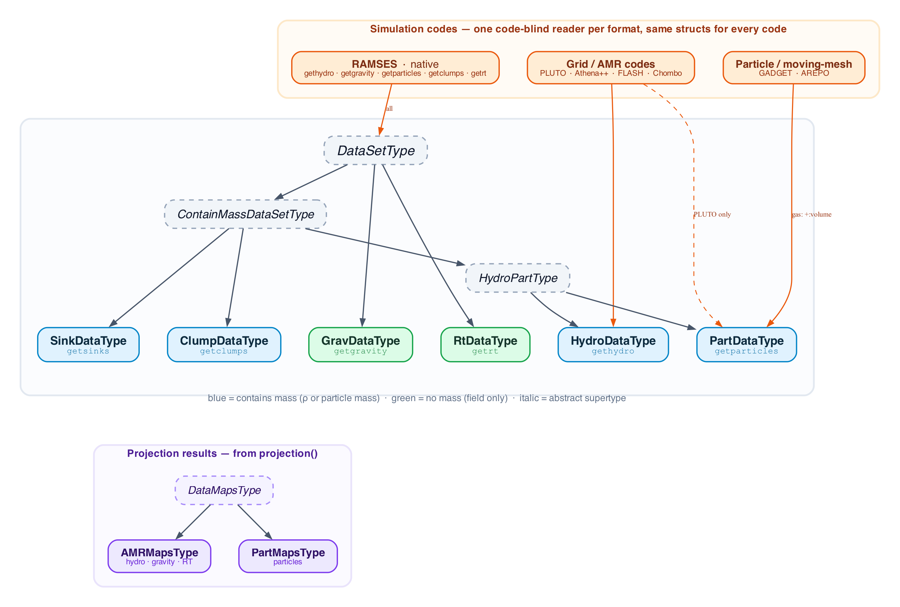
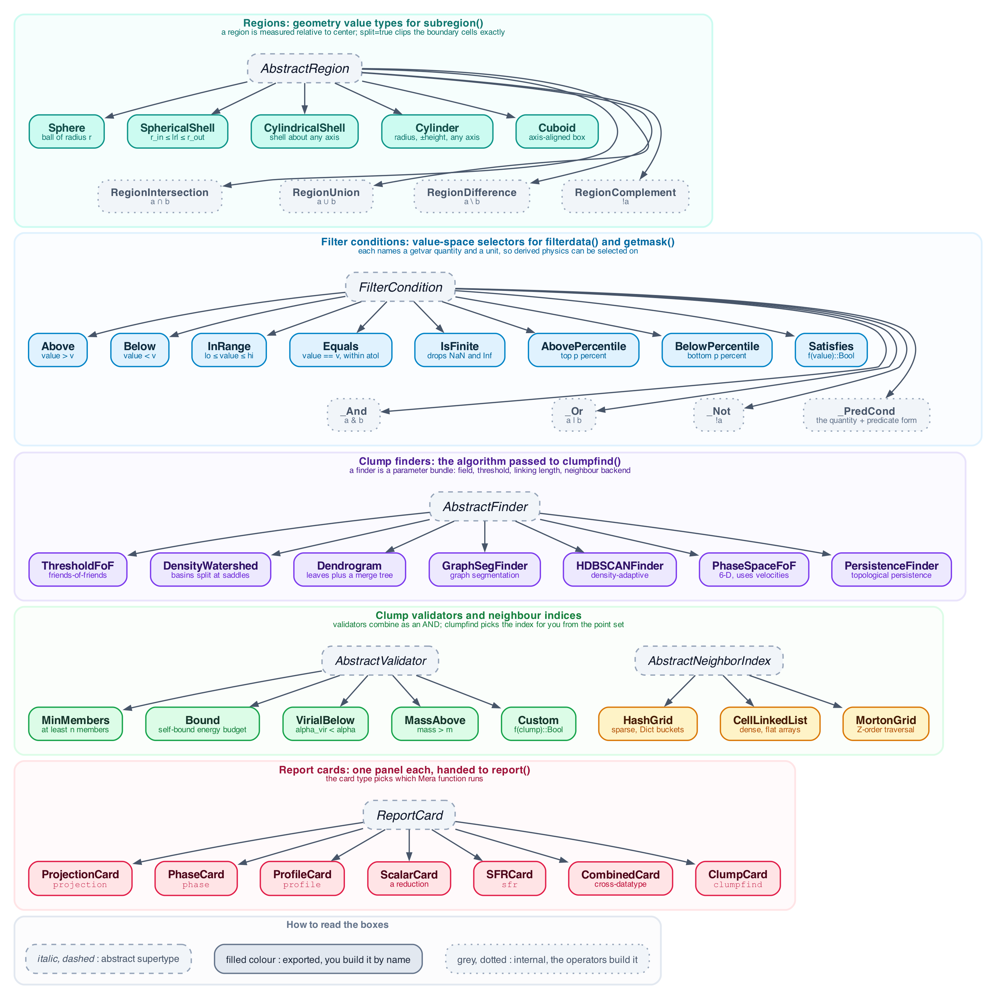

MERA.jl's comprehensive API for high-performance astrophysical data analysis and computational workflows
Types
Abstract type hierarchies


The families you build and hand to a function: regions, filter conditions, clump finders, clump validators, neighbour indices and report cards.
- AMRMapsType <: DataMapsType (
HydroMapsTypeis a kept alias of it) - PartMapsType <: DataMapsType
List of types
Mera.AMRMapsTypeMera.AboveMera.AbovePercentileMera.AbstractFinderMera.AbstractNeighborIndexMera.AbstractRegionMera.AbstractValidatorMera.ArgumentsTypeMera.BelowMera.BelowPercentileMera.BenchmarkReportMera.BoundMera.CellLinkedListMera.CheckOutputNumberTypeMera.ClumpCardMera.ClumpCardMera.ClumpCatalogMera.ClumpDataTypeMera.CombinedCardMera.CompilationInfoTypeMera.ContainMassDataSetTypeMera.CostModelMera.CoveringGridResultMera.CuboidMera.CustomMera.CylinderMera.CylindricalShellMera.DataMapsTypeMera.DataSetTypeMera.DendrogramMera.DensityWatershedMera.DescriptorTypeMera.EqualsMera.FileNamesTypeMera.FilterConditionMera.GalaxyFrameMera.GraphSegFinderMera.GravDataTypeMera.GridInfoTypeMera.HDBSCANFinderMera.HashGridMera.Histogram2DMapTypeMera.HydroDataTypeMera.HydroMapsTypeMera.HydroPartTypeMera.IOBenchmarkMera.InRangeMera.InfoTypeMera.IsFiniteMera.MaskTypeMera.MassAboveMera.MeraMovieMera.MinMembersMera.MortonGridMera.PartDataTypeMera.PartInfoTypeMera.PartMapsTypeMera.PersistenceFinderMera.PhaseCardMera.PhaseSpaceFoFMera.PhysicalUnitsType001Mera.PhysicalUnitsType002Mera.ProfileCardMera.ProjectionCardMera.ProvenanceMera.QuickLookResultMera.QuickReportMera.ReportCardMera.ReportPlanMera.ReportResultCardMera.RtDataTypeMera.SFRCardMera.SatisfiesMera.ScalarCardMera.ScalesType001Mera.ScalesType002Mera.ScalesType003Mera.SidecarRecordMera.SimulationRecordMera.SinkDataTypeMera.SphereMera.SphericalShellMera.StructureNodeMera.StructureTreeMera.ThreadSafeProgressMera.ThreadSafeProgressMera.ThresholdFoFMera.VirialBelowMera.VolumeLookMera.VolumeRenderTypeMera.WStatType
Functions
Mera.JLD2flagMera.__init__Mera._attach_gravity_parents!Mera._boundary_groupMera._can_select_columnsMera._check_unit_factorMera._cropMera._fitMera._fov_premaskMera._gravity_parentsMera._interpol_varMera._lz4_typemapMera._mask_rowsMera._minimum_imageMera._namelist_floatMera._nml_groupMera._nml_trueMera._nrecordsMera._orderingMera._original_dirMera._pad_colourMera._particle_layoutMera._quietlyMera._ramses_physicsMera._resolve_unitMera._same_cellsMera._same_orderMera._slab_fractionsMera._subset_tableMera._subset_table_keyedMera._uniformMera._unknown_var_errorMera._write_sidecarMera.add_fieldMera.add_fieldMera.add_unitMera.add_unitMera.age_from_aformMera.age_of_universeMera.allocated_cpusMera.amr_header_ofMera.amroverviewMera.amroverviewMera.amroverviewMera.analyze_amr_structureMera.angmomMera.angmomMera.average_mweightedMera.average_mweighted_metaprogMera.average_velocityMera.baryon_fractionMera.batch_convert_meraMera.batchesMera.bellMera.bellMera.benchmark_buffer_sizesMera.benchmark_conversionMera.benchmark_levelsMera.benchmark_mera_ioMera.benchmark_multi_variable_projectionMera.benchmark_projection_hydroMera.benchmark_reportMera.benchmark_single_variable_projectionMera.benchmarkplotMera.build_camera_basisMera.bulk_velocityMera.bulk_velocity_metaprogMera.bundleMera.calculate_safe_thread_countMera.calibrate!Mera.capabilitiesMera.capabilitiesMera.cell_shiftMera.center_ofMera.center_ofMera.center_of_massMera.center_of_mass_joint_metaprogMera.center_of_mass_metaprogMera.check_available_filesMera.check_safety_margin_violationMera.checkoutputsMera.checksimulationsMera.citationMera.citationMera.clear_mera_cache!Mera.clump_mass_fractionMera.clump_massfunctionMera.clump_massfunctionMera.clump_recoveryMera.clump_recoveryMera.clumpfindMera.clumpfindMera.clumpfindMera.clumpfindMera.clumpfindMera.clumpfind_benchmarksMera.clumpfind_benchmarksMera.clumpingMera.clumpplotMera.clumpplotMera.clumptableMera.clumptableMera.collect_levelsMera.comMera.comoving_to_proper_densityMera.comoving_to_proper_densityMera.comoving_to_proper_lengthMera.comoving_to_proper_lengthMera.compareramsesMera.compareramsesMera.complete_progress!Mera.complete_progress!Mera.configure_adaptive_ioMera.configure_mera_ioMera.construct_datatypeMera.construct_datatypeMera.convert_single_file_safeMera.convertdataMera.cosmic_timeMera.cosmologyMera.cosmologyMera.covering_gridMera.covering_gridMera.covering_grid_memoryMera.covering_grid_memoryMera.create_progress_trackerMera.create_progress_trackerMera.create_ultrafast_tableMera.createconstantsMera.createconstantsMera.createconstants!Mera.createpathMera.createscalesMera.createscalesMera.createscales!Mera.createscales!Mera.critical_densityMera.critical_densityMera.cuboidMera.cuboidMera.cylinderMera.cylinderMera.cylindricalshellMera.cylindricalshellMera.dataciteMera.dataciteMera.dataoverviewMera.dataoverviewMera.dataoverviewMera.dataoverviewMera.delete_fieldMera.delete_fieldMera.delete_unitMera.delete_unitMera.depletion_timeMera.depletion_timeMera.deposit_rotated_cells_exact!Mera.deposit_rotated_cells_overlap!Mera.deposit_rotated_cells_to_grid!Mera.download_testdataMera.download_testdataMera.downsampleMera.edge_onMera.edge_onMera.enhanced_fortran_readMera.ensure_optimal_io!Mera.estimateMera.export_vtkMera.exportdataMera.extract_column_dataMera.face_onMera.face_onMera.field_dependenciesMera.field_dependenciesMera.field_infoMera.field_infoMera.field_treeMera.field_treeMera.filesystem_infoMera.filter_by_rangeMera.filterdataMera.fmt_timeMera.formation_redshiftMera.formation_redshiftMera.formation_timeMera.formation_timeMera.get_available_memory_gbMera.get_disk_info_commandMera.get_far_radius_cylinderMera.get_far_radius_sphereMera.get_filtered_rangesMera.get_filtered_rangesMera.get_filtered_rangesMera.get_height_cylinderMera.get_memory_info_commandMera.get_memory_usage_percentageMera.get_network_info_commandMera.get_process_info_commandMera.get_radius_sphereMera.get_simulation_characteristicsMera.get_system_info_commandMera.get_total_memory_gbMera.get_unit_factor_fastMera.getclumpsMera.getextentMera.getextentMera.getextentMera.getgravityMera.gethydroMera.getinfoMera.getmaskMera.getmaskMera.getmassMera.getmovieMera.getmovieMera.getparticlemaskMera.getparticlesMera.getpositionsMera.getpositionsMera.getrtMera.getsinksMera.gettimeMera.getunitMera.getunitMera.getvarMera.getvar_optionalMera.getvar_optionalMera.getvar_requirementsMera.getvar_requirementsMera.getvelocitiesMera.getvelocitiesMera.gridoverlayMera.gridoverlay!Mera.hintMera.hint_onceMera.humanizeMera.infer_boundariesMera.infodataMera.interactive_mera_converterMera.iops_testMera.iscosmologicalMera.iscosmologicalMera.levelsplotMera.list_fieldsMera.list_fieldsMera.list_fieldsMera.list_unitsMera.list_unitsMera.load_clumpsMera.load_clumpsMera.load_synthetic_clumpsMera.load_synthetic_clumpsMera.loadallMera.loaddataMera.loadmapMera.loadmovieMera.loadmovieMera.loadreportMera.localdispersionMera.lookback_timeMera.makefileMera.makefileMera.makethumbMera.makethumbMera.map_amr_cells_to_grid!Mera.map_amr_cells_to_grid_adaptive!Mera.map_amr_cells_to_grid_surface_density!Mera.map_amr_cells_to_grid_with_spatial_index!Mera.massfunctionplotMera.mean_baryon_densityMera.mean_baryon_densityMera.mean_matter_densityMera.mean_matter_densityMera.mera_buildMera.mera_buildMera.mera_configMera.mera_configMera.mera_config_exampleMera.mera_config_exampleMera.mera_config_pathMera.mera_config_pathMera.mera_installMera.mera_installMera.mera_io_statusMera.meraprojectMera.moviefromframesMera.moviefromframesMera.msumMera.msum_metaprogMera.namelistMera.notifymeMera.notifymeMera.offaxis_sliceMera.openclose_testMera.optimize_image_for_zulipMera.optimize_image_for_zulipMera.optimize_mera_ioMera.output_modeMera.output_modeMera.overviewplotMera.parse_output_numberMera.patchfileMera.patchfileMera.pdfMera.pdfMera.pdfMera.pdfMera.perform_sanity_checksMera.periodic_axesMera.periodic_recenterMera.periodic_recenterMera.phaseMera.phaseMera.plot_resultsMera.plot_resultsMera.prep_cylindrical_shellrangesMera.prep_spherical_shellrangesMera.preprangesMera.preprangesMera.previewMera.printtablememoryMera.printtimeMera.profileMera.profileMera.profile3dMera.profiletimeseriesMera.projectMera.projectMera.projectionMera.projectionMera.projectionMera.projectionMera.proper_to_comoving_densityMera.proper_to_comoving_densityMera.proper_to_comoving_lengthMera.proper_to_comoving_lengthMera.provenanceMera.provenanceMera.provenance_stringMera.provenance_stringMera.quicklookMera.quicklookMera.quicklookplotMera.quicklookplotMera.read_amr_header_restMera.reading_sweepMera.readsidecarMera.recommend_buffer_sizeMera.redshiftMera.redshiftMera.register_reader!Mera.register_reader!Mera.renderMera.repartitionMera.repartitionMera.reportMera.required_raw_varsMera.reset_auto_optimization!Mera.reset_hintsMera.reset_mera_ioMera.resolve_losMera.restart_completenessMera.restart_completenessMera.restframeMera.rotation_frameMera.rotation_sequenceMera.run_benchmarkMera.run_benchmarkMera.run_merafile_benchmarkMera.run_reading_benchmarkMera.safe_executeMera.safe_executeMera.safe_printlnMera.save_benchmark_resultsMera.save_clumpsMera.save_clumpsMera.save_synthetic_clumpsMera.save_synthetic_clumpsMera.savedataMera.savemapMera.savemovieMera.savemovieMera.send_resultsMera.send_resultsMera.setcomposition!Mera.setcomposition!Mera.sfrMera.sfr_snapshotMera.sfr_snapshotMera.shellregionMera.shellregionMera.show_auto_optimization_statusMera.show_completenessMera.show_mera_cache_statsMera.show_mera_configMera.show_threading_infoMera.showprogressMera.showprogressMera.sidecarMera.sidecarMera.sidecaroverviewMera.simple_base64encodeMera.simulationrecordMera.simulationrecordMera.sliceMera.smart_io_setupMera.sphereMera.sphereMera.sphericalshellMera.sphericalshellMera.stellar_ageMera.storageoverviewMera.subregionMera.subregionMera.subregionMera.subregioncuboidMera.subregioncuboidMera.subregioncylinderMera.subregioncylinderMera.subregioncylinderMera.subregionsphereMera.subregionsphereMera.subregionsphereMera.supportsMera.supportsMera.synthetic_clumpsMera.synthetic_clumpsMera.throughput_testMera.timed_notifyMera.timed_notifyMera.timerfileMera.timerfileMera.timeseriesMera.timeseriesMera.update_progress!Mera.update_progress!Mera.update_progress!Mera.upgrade_merafileMera.upgrade_merafileMera.usedmemoryMera.velocitydispersionMera.verboseMera.verboseMera.viewallfieldsMera.viewdataMera.viewfieldsMera.viewmoduleMera.volumelookMera.volumeorbitMera.volumepathMera.volumerenderMera.withargsMera.writeramsesMera.writeramsesMera.writesidecarMera.writesimulationrecordMera.writesimulationrecordMera.wstatMera.wstat_metaprog
Macros
Mera.@apply — Macro
@apply table begin
@where condition_1
@where condition_2
...
endApply several @where conditions to a raw table, one after the other.
Each line in the block must be an @where comparison; anything else raises an error. Like @where, it works on the table (gas.data) in code units.
Returns the rows that satisfy every condition, as a table.
disc = @apply gas.data begin
@where :rho >= density
@where abs((:cz - 0.5) * boxlen / 2^:level - cv) <= height
endMera.@filter — Macro
@filter(obj, :column op value)Filter by a single comparison. If obj is a Mera data object (hydro/gravity/RT/particles/ clumps) it routes through filterdata: the column may be any getvar quantity (derived physics, code units) and the result is a new object of the same type. If obj is a raw IndexedTable, the classic per-row column filter is used. For units, compound conditions (&/|/!) and percentile/finite selectors, use filterdata with Above etc.
hot = @filter gas :rho >= 1e2 # Mera object → HydroDataType of the matching cells
sub = @filter gas.data :rho >= 1e2 # raw table → filtered table (classic behaviour)Returns a new object of the same type for a Mera object, or the filtered table for a raw table.
Mera.@loadall — Macro
@loadall path output component...Bind several components of one snapshot to variables of those names, in one line.
@loadall path 300 hydro gravity particles
# hydro, gravity and particles are now bound, and so is infoThis is a thin wrapper over loadall; it expands to a destructuring assignment and adds nothing of its own.
That is what makes it short, and also its cost: the variables appear without an assignment a reader can point at, and static tooling cannot follow them. Convenient at the REPL and in a notebook; in a script or a package, prefer the explicit form, which is only a few characters longer and says where each name came from:
(; hydro, gravity, particles) = loadall(path, 300)Keyword arguments are passed through:
@loadall path 300 hydro particles lmax=10 range_unit=:kpcReturns the same named tuple as loadall, so nt = @loadall path 300 hydro also works.
Mera.@project — Macro
@project data quantity... [keyword=value...]Project several quantities and bind each map to a variable of that name.
projection returns one object whose maps is a dictionary, so pulling several quantities out of it is a line of lookups:
pj = projection(gas, [:sd, :T], myargs=args)
sd = pj.maps[:sd]; T = pj.maps[:T]This does the same in one line, and asks for the quantities together, which is also the form that lets the projection use its threads (see Performance):
@project gas sd T myargs=args
# sd and T are now the maps, and proj is the full projection objectKeywords pass straight through, so off-axis works the same way:
@project gas sd inclination=60 azimuth=30 binning=:exactThe full object is bound as proj, so the extent, units and everything else stay reachable:
heatmap(proj.extent[1:2], proj.extent[3:4], sd)Like @loadall, this binds names in your scope. Inside a function or a package, prefer the explicit form above.
See also: projection, @loadall.
Mera.@region — Macro
@region [unit=…] [center=…] begin … endBuild a (composite) region with shared constructor defaults and named parts. Inside the block, every Sphere/Cuboid/Cylinder/SphericalShell/CylindricalShell call that does not set range_unit/center itself receives the block's unit/center; explicit keywords always win. Assignments name intermediate parts; the block's last expression is the returned region — an ordinary AbstractRegion value, identical to writing the constructors out by hand.
capstone = @region unit=:kpc center=[:bc] begin
disc = cylinder(12, 2)
blister = sphere(2.5; center=[30, :bc, 26]) # explicit center wins
chimney = cylinder(1.2, 5; center=[19, :bc, :bc])
(disc ∪ blister) \ chimney
end
subregion(gas, capstone)Mera.@where — Macro
@where table :column op value
@where table expression_of_columns op valueKeep the rows of a table whose columns satisfy one comparison.
Column names are written as symbols and can be combined in an expression, e.g. @where tbl abs((:cz - 0.5) * boxlen / 2^:level - cv) <= height; other names are taken from the surrounding code. It works on the raw table (gas.data), in code units, and is mostly used inside @apply to chain several conditions. For a Mera object and derived quantities, use @filter or filterdata.
Returns the filtered table.
dense = @where gas.data :rho >= 100.0Documentation Types
Mera.AMRMapsType — Type
Mutable Struct: Contains the maps/units returned by an AMR cell-based projection (hydro, gravity-with-hydro, and radiative-transfer all return this type; the provenance is preserved in the .info field). smallr/smallc are hydro-only and set to 0 for RT.
Fields
maps::SortedDict{Symbol,Array{Float64,2}}— one 2D map per requested quantity, keyed by variable symbol (e.g.:sd,:rho,:vx,:T). For an intensive variable the map is the weighted average per pixel; for an extensive variable (:sd, and:mass/:ekin/:etherm/:volumeundermode=:sum) it is the per-pixel column/sum. Access asproj.maps[:sd].maps_unit::SortedDict{Symbol,Symbol}— the physical unit of each map (e.g.:Msol_pc2,:g_cm3,:km_s,:standardfor code units), keyed by the same symbols asmaps.maps_lmax::SortedDict— always empty. A leftover field: both projection engines create it and neither ever writes to it. Do not read a level from it.maps_weight::SortedDict{Symbol,Symbol}— the weighting used per map::mass,:volume, or:nothingfor the extensive:sum/:sdaccumulations that carry no weighting.maps_mode::SortedDict{Symbol,Symbol}— how each map was reduced::mass_weighted,:volume_weighted,:standard, or:sum.lmax_projected::Real— the maximum AMR level actually used in the projection.lmin::Int,lmax::Int— the simulation's level range carried over for provenance.ranges::Array{Float64,1}— the 6-element projected sub-box[xmin,xmax,ymin,ymax,zmin,zmax]in box-fraction units[0,1]. (proj.xrange/yrange/zrangeare accessor slices of this.)extent::Array{Float64,1}—[xmin,xmax,ymin,ymax]of the map in code length units (multiply byproj.scale.kpcetc. for physical axes); the data-plane extent for plotting.cextent::Array{Float64,1}— the same extent but centred on the chosen projection centre (so the centre sits at 0); use for axes labelled relative to the centre.ratio::Float64— pixel aspect ratio of the map (xspan/yspan).effres::Int— the effective square resolution (pixels per side);proj.resaliases this.pixsize::Float64— physical size of one pixel in code length units (×scalefor kpc/pc).boxlen::Float64— the simulation box length in code units.smallr::Float64,smallc::Float64— hydro density/sound-speed floors (0 for RT projections).scale::ScalesType003— unit-conversion factors (code↔physical) inherited from the dataset.info::InfoType— the full simulation descriptor (provenance: output, paths, cosmology, …).los,up,cam_right,center::Vector{Float64}— off-axis camera basis and centre; emptyFloat64[]for axis-aligned projections.proj.directionreturns:offaxiswhen populated.
Mera.Above — Type
Above(quantity, value; unit=:standard)Keep rows where getvar(obj, quantity, unit) > value.
Mera.AbovePercentile — Type
AbovePercentile(quantity, p; unit=:standard)
BelowPercentile(quantity, p; unit=:standard)Keep rows above (below) the p-th percentile of quantity over obj (p ∈ [0,100]) — an adaptive threshold, e.g. the densest 10 % of cells: AbovePercentile(:rho, 90).
Mera.AbstractFinder — Type
AbstractFinderSupertype of the seven 3D structure-finding algorithms passed to clumpfind: ThresholdFoF, DensityWatershed, Dendrogram, GraphSegFinder, HDBSCANFinder, PhaseSpaceFoF and PersistenceFinder. A finder is a typed parameter bundle (field, threshold, linking length, neighbour backend) that implements _label(finder, points); extend it by adding a new subtype and _label method.
Mera.AbstractNeighborIndex — Type
Abstract supertype of the spatial indices used to find neighbours during clump finding.
Concrete subtypes are HashGrid and CellLinkedList; clumpfind picks one automatically from the particle count and density. Both index an arbitrary ids subset of the coordinate arrays, so the same code serves the FoF pass and the per-group watershed.
Mera.AbstractRegion — Type
AbstractRegionSupertype of the composable region value types passed to subregion: Cuboid, Sphere, Cylinder, SphericalShell, CylindricalShell. A region is a geometry-relative-to-center value type; subregion(obj, region) selects the cells it covers and, with split=true, attaches the exact per-cell inside-fraction. Regions compose with the boolean operators ∩ (intersection), ∪ (union), \ (difference) and ! (complement) — e.g. sphere(20) \ cylinder(5, 30) drills a cylindrical hole through a ball.
Mera.AbstractValidator — Type
Abstract supertype of the criteria a candidate clump must satisfy to be kept.
Validators passed to clumpfind combine as an AND: a clump survives only if it passes every one. Concrete subtypes include MinMembers, and membership tests such as unbinding are applied during the analysis while predicates are applied after — that order is enforced regardless of the order you list them in.
Mera.ArgumentsType — Type
Mutable Struct: Contains fields to use as arguments in functions
Mera.Below — Type
Below(quantity, value; unit=:standard)Keep rows where getvar(obj, quantity, unit) < value.
Mera.BelowPercentile — Type
BelowPercentile(quantity, p; unit=:standard)Keep rows below the p-th percentile of quantity over obj (p ∈ [0,100]); the lower counterpart of AbovePercentile.
Mera.BenchmarkReport — Type
BenchmarkReportWhat benchmark_report returns. Fields: info, nfiles_total, bytes, storage_split (bytes per component), filesystem, storage, reading, conversion, sweep, work_threads, reportfile. Stages that were not run are nothing.
Mera.Bound — Type
Bound(egrav=:tree; iterative=true, softening=0.0, direct_max=2000)Self-boundedness validator: builds the per-clump energy budget with potential egrav (:tree Barnes–Hut / :direct exact / :approx 3·GM²/5R), optionally strips unbound members (iterative, SUBFIND), and keeps only self-bound clumps (e_kin+e_therm[+e_mag] < |e_grav|).
Mera.CellLinkedList — Type
Neighbour index storing cell occupancy in flat arrays covering the whole bounding box, which avoids hashing at the cost of memory proportional to that box.
The choice for dense, compact point sets. See HashGrid for the sparse counterpart and AbstractNeighborIndex for how one is selected.
CellLinkedList <: AbstractNeighborIndex
Mera.CheckOutputNumberType — Type
Mutable Struct: Contains the existing simulation snapshots in a folder and a list of the empty output-folders
Mera.ClumpCard — Type
ClumpCard(kind, field=:rho; threshold, linking_length, threshold_unit=:standard, pos_unit=:kpc, mass_unit=:Msol, min_members=1, label="")A report card that runs clumpfind and reports the clump count + total clump mass (the full ClumpCatalog is kept in the result card's data.catalog).
Mera.ClumpCatalog — Type
ClumpCatalogResult of clumpfind. clumps is a vector of per-clump NamedTuples (sorted most-massive first); meta records the search parameters; tree is the StructureTree hierarchy (only when built via hierarchy=true, else nothing). Index/iterate it like a vector (cat[1], length(cat), for c in cat).
Mera.ClumpDataType — Type
Mutable Struct: Contains clump data and information about the selected simulation
ClumpDataType <: ContainMassDataSetType
Mera.CombinedCard — Method
CombinedCard(datatypes, compute; unit=:fraction, label="combined")
CombinedCard(datatypes; unit=:fraction, label="combined") do datas … endA cross-datatype scalar card. compute(datas) receives a Dict{Symbol,Any} of the read data objects for datatypes and returns a number. Computed only if all datatypes are present. See the built-ins baryon_fraction and clump_mass_fraction.
Mera.CompilationInfoType — Type
Mutable Struct: Contains the collected information about the compilation of RAMSES
Mera.ContainMassDataSetType — Type
Abstract Supertype of all datasets that contain mass variables
HydroPartType <: ContainMassDataSetType <: DataSetType
Mera.CostModel — Type
Mutable Struct: The runtime cost model behind report's dry-run and budget modes
Holds the per-unit coefficients of the work a report does — per read, per cell, per projection pixel, per deposited cell, per histogram bin, per particle — together with multiplicative corrections learned per cost class, so estimates track this machine rather than a generic one. Corrections are updated passively from every real report run, or actively via calibrate!.
preview prints the resulting dry-run; downsample shrinks a plan to a wall-time target, which is the mechanism behind report(...; budget_s=…).
Mera.CoveringGridResult — Type
CoveringGridResultResult of covering_grid / slice. grid maps each variable to its uniform array (3-D for a covering grid, 2-D for a slice); level is the uniform refinement level, dims the array size, extent the physical bounds [x0,x1,y0,y1,z0,z1] and cellsize the physical cell size (both in pos_unit). Index grid[:rho] for the array.
Mera.Cuboid — Type
cuboid(; xrange, yrange, zrange, center=[:bc], range_unit=:kpc)An axis-aligned box; xrange/yrange/zrange are [lo, hi] offsets from center (in range_unit), as in subregion(:cuboid).
Mera.Custom — Type
Custom(f)Keep clumps for which f(clump)::Bool is true (clump is the per-clump NamedTuple, with fields n_members, mass, com, peak, radius and — when bound — e_kin, e_grav, alpha_vir, bound).
Mera.Cylinder — Type
cylinder(radius, height; axis=[0,0,1], center=[:bc], range_unit=:kpc)A cylinder of cylindrical radius spanning ±height along axis (so height is the half-height, matching the existing subregion(:cylinder) convention). axis is the symmetry direction (any non-zero 3-vector, normalised internally) — e.g. a galaxy's spin vector for a tilted disk; the default [0,0,1] is the classic z-aligned cylinder.
Mera.CylindricalShell — Type
cylindricalshell(r_in, r_out, height; axis=[0,0,1], center=[:bc], range_unit=:kpc)A cylindrical shell r_in ≤ r_cyl ≤ r_out of half-height height along axis (the value-type analogue of shellregion(:cylinder); axis allows a tilted shell).
Mera.DataMapsType — Type
Abstract Supertype of all the different dataset type maps AMRMapsType <: DataMapsType PartMapsType <: DataMapsType
Mera.DataSetType — Type
Abstract Supertype of all the different dataset types
HydroPartType <: ContainMassDataSetType <: DataSetType
Mera.Dendrogram — Type
Dendrogram(field=:rho; threshold, linking_length, threshold_unit=:standard, min_delta=0.0, backend=CellLinkedList)Multi-scale hierarchy finder (Rosolowsky & Leroy 2008): the finest density peaks (local maxima with prominence ≥ min_delta) are the catalog's leaf clumps, and clumpfind(obj, …; hierarchy=true) attaches the full merge StructureTree recording the level at which they join. min_delta (in field units) is the minimum peak-to-saddle contrast for a separate leaf.
Mera.DensityWatershed — Type
DensityWatershed(field=:rho; threshold, linking_length, threshold_unit=:standard, peak_min_distance=2·linking_length, persistence=0.0, backend=CellLinkedList)Watershed finder: friends-of-friends for connectivity, then each connected group is split into density-descending basins (peaks separated by peak_min_distance), so touching cores are resolved along their saddles (DENMAX/SUBFIND-style). persistence (in field units) prunes shallow basins: a basin whose prominence — peak value minus the saddle at which it joins a deeper basin — is below persistence is merged into that deeper basin (topological contrast control, Rosolowsky & Leroy 2008 min_delta). persistence=0 keeps every local maximum (bare watershed).
Mera.DescriptorType — Type
Mutable Struct: Contains the collected information about the descriptors
Mera.Equals — Type
Equals(quantity, value; unit=:standard, atol=0.0)Keep rows where getvar(obj, quantity, unit) == value (within atol). Best for discrete fields such as :level, particle ids or :family.
Mera.FileNamesType — Type
Mutable Struct: Contains the full paths of the files belonging to one simulation output
Reachable as info.fnames. Each field is the resolved path Mera reads for that component, e.g. info.fnames.hydro, which is useful when checking what a reader actually opened.
Mera.FilterCondition — Type
FilterConditionSupertype of the composable value-space selectors passed to getmask / filterdata: Above, Below, InRange. Combine them with & (and), | (or) and ! (not) — e.g. Above(:T, 1e4; unit=:K) & Below(:rho, 100; unit=:nH).
Mera.GalaxyFrame — Type
GalaxyFrameOrientation + centre returned by face_on / edge_on. Splat the fields straight into projection:
fr = face_on(gas)
projection(gas, :sd; los=fr.los, up=fr.up, center=fr.center, range_unit=fr.center_unit)Fields: center (in center_unit), los (unit vector the camera looks along), up (unit vector for the camera's up direction), angmom (the net angular-momentum vector the frame was derived from), and info (the source snapshot — so provenance(frame) works).
Mera.GraphSegFinder — Type
GraphSegFinder(field=:rho; threshold, linking_length, threshold_unit=:standard, scale=1.0, backend=CellLinkedList)Graph-segmentation finder (Felzenszwalb & Huttenlocher 2004): segments the neighbour graph so that the density variation within a region stays below the contrast between regions. scale k sets the granularity (larger ⇒ fewer, larger segments). Near-linear; good as a fast multi-scale deblender, e.g. deblend=GraphSegFinder(...).
Mera.GravDataType — Type
Mutable Struct: Contains gravity data and information about the selected simulation
Returned by getgravity. Holds the selected leaf cells in data, the originating InfoType in info, and the unit scales in scale.
GravDataType <: DataSetType
Mera.GridInfoType — Type
Mutable Struct: Contains the collected information about grid
Mera.HDBSCANFinder — Type
HDBSCANFinder(field=:rho; threshold, linking_length, threshold_unit=:standard, min_cluster_size=5, min_samples=min_cluster_size, backend=CellLinkedList)Density-adaptive finder — a self-contained HDBSCAN* (Campello+2013; McInnes+2017): core distances from the min_samples-nearest neighbours define a mutual-reachability metric whose minimum spanning tree is condensed into a cluster hierarchy, and the most stable clusters (each with ≥ min_cluster_size members) are extracted. Finds clumps across a wide density range with almost no tuning; points not in any stable cluster are labelled noise (dropped). linking_length only bounds the neighbour search (set it generously).
Mera.HashGrid — Type
Neighbour index storing occupied cells in a Dict, so memory scales with the number of occupied cells rather than the bounding box.
The choice for sparse or widely spread point sets. See CellLinkedList for the dense counterpart and AbstractNeighborIndex for how one is selected.
HashGrid <: AbstractNeighborIndex
Mera.Histogram2DMapType — Type
Mutable Struct: Contains the 2D histogram returned by the function: histogram2 and information about the selected simulation
Mera.HydroDataType — Type
Mutable Struct: Contains hydro data and information about the selected simulation
HydroDataType <: HydroPartType
Mera.HydroMapsType — Type
const HydroMapsType = AMRMapsTypeDeprecated alias for AMRMapsType (renamed because gravity and RT projections return the same AMR-map type, not only hydro). Kept for backward compatibility: existing code using HydroMapsType (construction, isa, dispatch) keeps working unchanged. Prefer AMRMapsType in new code.
Mera.HydroPartType — Type
Abstract Supertype of data-sets that contain hydro and particle data
HydroPartType <: ContainMassDataSetType <: DataSetType
Mera.IOBenchmark — Type
IOBenchmarkResult of run_benchmark: the iops, throughput and openclose sub-results (each with .samples/.stats), the number of runs, the threads levels tested, and total_elapsed seconds. Pass it to plot_results for a figure.
Mera.InRange — Type
InRange(quantity, lo, hi; unit=:standard)Keep rows where lo ≤ getvar(obj, quantity, unit) ≤ hi.
Mera.InfoType — Type
Mutable Struct: Collected information about the selected simulation output
Mera.IsFinite — Type
IsFinite(quantity; unit=:standard)Keep rows where getvar(obj, quantity, unit) is finite (drops NaN/Inf) — data hygiene, e.g. before a statistic. Combine with ! to select the non-finite rows instead.
Mera.MassAbove — Type
MassAbove(m)Keep clumps with mass > m (in the catalog's mass_unit).
Mera.MeraMovie — Type
Mera.MinMembers — Type
MinMembers(n)Keep only clumps with at least n members.
Mera.MortonGrid — Type
MortonGrid <: AbstractNeighborIndexNeighbour-search backend (pass as backend=MortonGrid to any finder). Like CellLinkedList, but the indexed points are visited in Morton (Z-order) order so spatially-near points are also near in the traversal — neighbour lookups then touch cache-resident coordinates and the access pattern is near-sequential (the locality an out-of-core path also needs). Produces exactly the same neighbour pairs as the CellLinkedList/HashGrid backends; only the traversal order, and hence speed on large selections, differs.
Mera.PartDataType — Type
Mutable Struct: Contains particle data and information about the selected simulation
PartDataType <: HydroPartType
Mera.PartInfoType — Type
Mutable Struct: Contains the collected information about particles
Mera.PartMapsType — Type
Mutable Struct: Contains the maps/units returned by a particle projection (projection(::PartDataType, …)). Particle maps are histogram deposits of the selected quantity onto the sky grid; provenance is preserved in the .info field.
Fields
maps::SortedDict{Symbol,Array{Float64,2}}— one 2D map per requested quantity, keyed by variable symbol (e.g.:sdsurface density,:vx,:age).:sdis the column mass per pixel area; intensive variables are mass- or volume-weighted averages per pixel.maps_unit::SortedDict{Symbol,Symbol}— the physical unit of each map (e.g.:Msol_pc2,:km_s,:standardfor code units), keyed by the same symbols asmaps.maps_lmax::SortedDict— always empty. A leftover field that is created and never written, on this path as on the grid one.maps_mode::SortedDict{Symbol,Symbol}— how each map was reduced::mass_weighted,:volume_weighted,:sph,:voronoi, or:sumwhenmode=:sumwas given.weightingpicks the weight,modepicks a weighted mean against a per-pixel total.lmax_projected::Real— the maximum grid level used.lmin::Int,lmax::Int— the simulation's level range carried over for provenance.ref_time::Real— the reference time (code units) used to convert birth times to ages for age-dependent quantities (e.g.:age); taken frominfo.timeunless overridden.ranges::Array{Float64,1}— the 6-element projected sub-box[xmin,…,zmax]in box-fraction units[0,1]. (proj.xrange/yrange/zrangeare accessor slices.)extent::Array{Float64,1}—[xmin,xmax,ymin,ymax]of the map in code length units (×proj.scale.kpcetc. for physical axes).cextent::Array{Float64,1}— the same extent centred on the projection centre.ratio::Float64— pixel aspect ratio of the map (xspan/yspan).effres::Int— effective square resolution (pixels per side);proj.resaliases this.pixsize::Float64— physical size of one pixel in code length units (×scalefor kpc/pc).boxlen::Float64— the simulation box length in code units.scale::ScalesType003— unit-conversion factors (code↔physical) inherited from the dataset.info::InfoType— the full simulation descriptor (provenance).los,up,cam_right,center::Vector{Float64}— off-axis camera basis and centre; emptyFloat64[]for axis-aligned projections.proj.directionreturns:offaxiswhen populated.
Mera.PersistenceFinder — Type
PersistenceFinder(field=:rho; threshold, linking_length, persistence, threshold_unit=:standard, backend=CellLinkedList)Topological persistence clustering (0-dim persistent homology / ToMATo; Chazal+2013): a superlevel-set filtration of the density field where a peak is kept as a separate cluster only if its prominence (peak − merge saddle) reaches persistence. Principled, parameter-light deblending that is robust in crowded fields.
Mera.PhaseCard — Method
PhaseCard(kind, xvar, yvar; weight=:mass, nbins=(80,80), xscale=:log, yscale=:log, xunit=:standard, yunit=:standard, label="")A phase (2-D histogram) card for a ReportPlan.
Mera.PhaseSpaceFoF — Type
PhaseSpaceFoF(field=:rho; threshold, linking_length_pos, linking_length_vel, threshold_unit=:standard, backend=CellLinkedList)6-D phase-space friends-of-friends (Rockstar-style; Behroozi+2013): points link only when within linking_length_pos in space and linking_length_vel (km/s) in velocity, so kinematically distinct populations that overlap spatially — streams, subhaloes, tidal debris — separate. Needs velocities (the finder loads them automatically).
Mera.PhysicalUnitsType001 — Type
Mutable Struct: Legacy physical-constants layout, retained so older mera/JLD2 files still load
Superseded by PhysicalUnitsType002, which is what info.constants carries today. This type exists only so files written by earlier Mera versions can be reconstructed and upgraded on load. Values are in cgs units.
Mera.PhysicalUnitsType002 — Type
Mutable Struct: Contains the physical constants in cgs units
Mera.ProfileCard — Type
ProfileCard(kind, xvar, yvar=nothing; weight=:mass, nbins=40, geometry=:none, unit=:standard, xunit=:standard, range_unit=:standard, center=[:bc], yscale=:auto, label="")A profile (1-D radial/other profile) card for a ReportPlan. For a disk galaxy use xvar=:r_cylinder, geometry=:cylindrical (radius in the disk plane); :r_sphere, geometry=:spherical suits a halo/spheroid. yscale sets the y-axis when plotted: :log/:log10 (log₁₀), :identity (linear), or :auto (log when the profile is positive and spans ≳ 1.5 decades, e.g. density).
Mera.ProjectionCard — Method
ProjectionCard(kind, var; unit=:standard, weight=:mass, res=256, pxsize=nothing, direction=:z, center=[:bc], range_unit=:standard, label="")A projection card (surface-density / mass-weighted map) for a ReportPlan.
Resolution is set either by res (pixels per side) or by pxsize=[value, unit] (physical size of a pixel, e.g. [100., :pc]). pxsize wins when both are given. Because a card is built before the simulation is read, a pxsize cannot be converted to a pixel count until report runs — estimate/preview therefore resolve it against the box at that point.
Mera.Provenance — Type
ProvenanceReproducibility record returned by provenance: mera_version, mera_build (the version, plus the branch and commit when Mera is a git checkout, so a result made on a development version does not claim a release), simulation path, output, simcode, cosmological, the snapshot time_myr (physical time in Myr; the age of the universe for a cosmological run), redshift and aexp, boxlen, ndim, levelmin/levelmax, the serialized scale_type (e.g. :ScalesType003), and the output's file_ctime. Render a one-liner with provenance_string.
Mera.QuickLookResult — Type
QuickLookResultResult of quicklook. Fields: info, levelmin, levelmax, lmax_used (level actually read, nothing for a header-only call), ncells (cells read), sampled (true ⇒ coarse/partial ⇒ estimates are approximate), maps (a NamedTuple of surface-density projections: gas x, y, z, face-on stars/dm when particles are present, plus a face-on magnetic-field map bmag (μG) on an MHD run, or nothing), phase (the ρ–T histogram, or nothing), budget (a NamedTuple global snapshot budget — gas/stellar/DM mass and current SFR — or nothing), and summary (a NamedTuple of facts + estimates).
Mera.QuickReport — Type
QuickReportThe result of report: cards (a vector of [ReportResultCard]), summary (header facts), provenance, cost (timings), and info. Render with render(report, :ascii|:jld2|:file) or reload with loadreport.
Mera.ReportCard — Type
Abstract supertype of the recipe cards you compose into a report.
A card describes one panel — what to compute and how to draw it — and its concrete type selects which Mera function runs. ProjectionCard is the most common; others cover phase diagrams, profiles and scalars. Build a list of cards and hand it to report.
Mera.ReportPlan — Type
ReportPlan(output; path=".", cards=[], lmax=-1, budget=2_000_000)A declarative, inspectable plan of report cards. Build it, preview its cost, then run it with report. cards is a vector of ReportCard. lmax=-1 picks a budgeted level (coarse if the full output exceeds budget cells), mirroring quicklook.
Mera.ReportResultCard — Type
ReportResultCardA computed card inside a [QuickReport]: label, kind (:map/:phase/:profile/:scalar), datatype, func, the plain-data data payload, and a meta NamedTuple (units, ranges, cost_s, sampled, …).
Mera.RtDataType — Type
Mutable Struct: Contains radiative-transfer (RT) data and information about the selected simulation
Returned by getrt. Same AMR leaf-cell structure as hydro, carrying the nvarrt RT variables: per photon group g, the photon number density Np plus the flux components Fx/Fy/Fz. Mirrors GravDataType.
RtDataType <: DataSetType
Mera.SFRCard — Type
SFRCard(kind=:particles; tbinsize=10.0, trange=[0.0,missing], unit=:Msol_yr, mode=:none, mass=:auto, mask=nothing, label="")A star-formation-history card (sfr). mode=:probability gives the normalised SFH (a fraction); mass=:auto prefers a stored initial-mass field; mask=obj->BitVector subselects.
Mera.Satisfies — Type
Satisfies(quantity, f; unit=:standard)Keep rows where f(value)::Bool for each getvar(obj, quantity, unit) value — a composable arbitrary predicate (the value-type form of the filterdata(obj, :q, pred) shorthand).
Mera.ScalarCard — Method
ScalarCard(kind, var; reduce=:sum, unit=:standard, fraction=false, relative_to=nothing, mask=nothing, label="")A scalar reduction card (reduce ∈ :sum,:mean,:extrema,:count). fraction=true divides by the total of relative_to (or var); mask=obj->BitVector restricts the rows.
Mera.ScalesType001 — Type
Mutable Struct: Legacy unit-scale layout, retained so older mera/JLD2 files still load
Superseded by ScalesType003, which is what new data carries. This type exists only so files written by earlier Mera versions can be reconstructed and upgraded on load; it is not what you get from a current getinfo.
Mera.ScalesType002 — Type
Mutable Struct: Contains the created scale factors from code to physical units
Mera.ScalesType003 — Type
Mutable Struct: Contains the unit scales of the loaded simulation
The current scale type, reachable as info.scale and as the scale field of every data object. Each field converts a code-unit value into that physical unit, e.g. scale.kpc.
Identical to ScalesType002 plus the :nG (nanogauss) magnetic unit. Versioned rather than extended in place so pre-existing mera/JLD2 files — which store the 133-field ScalesType002 layout — still reconstruct; the JLD2 typemap upgrades them on load.
Mera.SidecarRecord — Type
SidecarRecordWhat readsidecar and sidecaroverview return for one sidecar: file (the data file), sidecar (the .meta.json), data (the parsed JSON, index it like a dictionary, e.g. r.data["source"]["output"]) and status: :unchanged or :changed when the file's SHA-256 was checked, :missing when the data file is gone, :unchecked otherwise.
Mera.SimulationRecord — Type
SimulationRecordWhat simulationrecord returns: data, the record as an ordered dictionary (index it directly, e.g. rec["resolution"]["levelmax"]), and path, the simulation folder. It prints a short summary in the REPL. Write it as JSON with writesimulationrecord, or turn it into DataCite metadata with datacite.
Mera.SinkDataType — Type
Mutable Struct: Contains the RAMSES sink-particle catalogue and the simulation metadata
mutable struct SinkDataType <: ContainMassDataSetType
data
info::InfoType
boxlen::Float64
ranges::Array{Float64,1}
selected_sinkvars::Array{Symbol,1}
used_descriptors::Dict{Any,Any}
scale::ScalesType003
endSinks are written by RAMSES as a single CSV per output (sink_NNNNN.csv), not as one file per CPU like the AMR data — the catalogue is small and global. The file carries TWO header lines: the column names, and the dimensional formula of each column in terms of m, l and t (e.g. l t**-1 for a velocity). Mera keeps those formulas in used_descriptors[:units] so the physical meaning of every column survives the read.
Load with getsinks.
Mera.Sphere — Type
sphere(radius; center=[:bc], range_unit=:kpc)A ball of radius (in range_unit) about center.
Mera.SphericalShell — Type
sphericalshell(r_in, r_out; center=[:bc], range_unit=:kpc)The shell r_in ≤ |r| ≤ r_out (in range_unit) about center.
Mera.StructureNode — Type
StructureNodeOne node of a StructureTree: id, parent (0 at a root), children (ids), an is_leaf flag, the peak field value in its subtree, the base level at which it forms (the saddle where it merges into its parent, or the threshold at a root), and member counts n_self (points it owns directly — nonzero only for leaves) and n_subtree (points in the whole subtree).
Mera.StructureTree — Type
StructureTreeThe multi-scale hierarchy produced by a Dendrogram finder (clumpfind(obj, …; hierarchy=true)): nodes (a vector of StructureNode, indexable by node id) and roots (top-level node ids, one per disconnected region). Leaves are the finest structures (density peaks pruned by min_delta); branches are the levels at which they merge. Accessors: roots, leaves, children, parent.
Mera.ThreadSafeProgress — Type
ThreadSafeProgressMutable struct for managing progress bar updates across multiple threads. Prevents race conditions when multiple threads try to update progress simultaneously.
Fields
progress: ProgressMeter.Progress object for displaycurrent_file: Name of file currently being processedcompleted: Number of files completed so fartotal: Total number of files to processlock: ReentrantLock for thread synchronization
Mera.ThreadSafeProgress — Method
ThreadSafeProgress(total::Int) -> ThreadSafeProgressConstructor for thread-safe progress tracker. Initializes progress bar with appropriate settings for file conversion display.
Progress Bar Configuration
- Shows completion ratio [completed/total]
- Updates every 0.5 seconds to avoid excessive output
- 40-character progress bar for good visual feedback
- Shows processing speed (files/second)
Mera.ThresholdFoF — Type
ThresholdFoF(field=:rho; threshold, linking_length, threshold_unit=:standard, backend=CellLinkedList)Friends-of-friends finder: members with field ≥ threshold are linked into a clump when within linking_length of one another. The classic, fast connectivity finder (Davis et al. 1985).
Mera.VirialBelow — Type
VirialBelow(alpha)Keep clumps with virial parameter alpha_vir < alpha. Requires a Bound in the chain (or boundedness=true) so alpha_vir is computed; a non-finite alpha_vir fails the test.
Mera.VolumeLook — Type
VolumeLookHow a quantity is turned into colour and opacity, resolved to numbers by volumelook: quantity, unit, scale, colorrange, colormap, the opacity ramp and its opacity_gamma, the sigma (per cm) that full opacity means, and the background colour.
Reuse one look for every frame of a movie, so the colours and the opacity do not change from frame to frame.
Mera.VolumeRenderType — Type
VolumeRenderTypeThe result of volumerender.
image: the picture,Matrix{RGB{Float64}}indexed[ix, iy]like a projection map. Save it withsave("frame.png", rotl90(m.image)).alpha: how much of each pixel is filled,1 − transmission, between 0 and 1value: the value of the quantity you actually see, averaged along the ray and weighted by what reaches you (NaNwhere nothing is visible)look: theVolumeLookused, so the next frame can share itextent,pixsize: code length, measured from the centre of the view (getextent)los,up,cam_right,center: the camera;lospoints toward the observersupersample,boxlen,scale,info
Mera.WStatType — Type
Mutable Struct: Contains the output statistics returned by wstat
Mera.MaskType — Type
Union Type: Mask-array that is of type Bool or BitArray MaskType = Union{Array{Bool,1},BitArray{1}}
Documentation Functions
Mera.JLD2flag — Method
JLD2flag(first_flag::Bool) -> (Bool, Symbol)Determines the appropriate file mode for JLD2 operations.
- First write operation: creates new file (:write mode)
- Subsequent operations: append to existing file (:append mode)
Returns updated first_flag and corresponding file mode symbol.
Mera.__init__ — Method
__init__()Announce Mera on load. In an interactive session (REPL / Jupyter) print the ASCII banner with the version; otherwise emit a single greppable @info "Mera vX.Y.Z" line (stderr, silenceable, doesn't pollute stdout) so scripts / tests / CI get a clean one-line marker instead of the art. The version comes from pkgversion, so it always tracks Project.toml. (Top-level printlns would only run during precompilation, so this lives in __init__ instead.)
Mera._attach_gravity_parents! — Method
_attach_gravity_parents!(grav; verbose=true)Reads the stored gravity values of every refined cell from the original output and keeps them in grav.used_descriptors[:parents] (Mera cell coordinates, like the leaves), so they travel into a mera file. writeramses then writes them instead of averages of the children.
Mera._boundary_group — Method
_boundary_group(info) -> Dict&BOUNDARY_PARAMS of the run. When Mera's copy of the namelist lacks it (older RAMSES versions leave namelist.txt empty) but the output has walls and still exists, the walls are taken from its amr files and checked there (as repartition does), and returned in namelist form.
Mera._can_select_columns — Method
_can_select_columns(info) -> BoolWhether gethydro(info; vars=…) will actually be honoured for this snapshot's code.
True for native RAMSES, which reads a column subset itself, and for a frontend that declared select_vars=true. False otherwise, where asking for a subset raises rather than quietly returning everything. Callers that request a subset as an OPTIMISATION (quicklook) must check this first and fall back to a full read, or they break on every reader that cannot narrow.
Mera._check_unit_factor — Method
_check_unit_factor(factor, unit)Reject a conversion factor that cannot be real.
A unit is resolved with getfield(scale, unit), so an unknown name raises FieldError immediately — but a field that exists and was never assigned returns whatever memory held, typically a subnormal near 1e-314, and does so SILENTLY. That is the dangerous case: results come out as plausible-looking numbers rather than an error, and they differ between processes. This turns that back into a loud failure.
Mera._crop — Method
Fill the card and cut off the overflow, keeping the part anchor names.
Mera._fit — Method
Scale the whole picture into the card and pad what is left over. Nothing is lost.
Mera._fov_premask — Method
_fov_premask(dataobject, mask) -> (object, mask)Internal. Apply a boolean mask to the object BEFORE the fov sphere is cut out of it.
A mask is one boolean per row of the object the caller holds, and the fov path projects a subregion of that object, so passing the mask on unchanged hands the inner call the wrong length. Cutting the mask to the selection instead is not reliable either: subregion keeps a cell whose volume overlaps the sphere at all, not merely one whose centre is inside, so no open-coded test reproduces its row set. Masking first sidesteps the question, because the sphere is then cut from data that is already filtered.
Mera._gravity_parents — Method
The stored gravity parents of a Mera object as leaf cells for the writer, or nothing.
Mera._interpol_var — Method
&REFINE_PARAMS interpol_var of the run (RAMSES's default 0 when it is not set).
Mera._lz4_typemap — Method
_lz4_typemap()Create a JLD2 typemap entry for handling old LZ4FrameCompressor objects.
Old files have LZ4FrameCompressor with header::TranscodingStreams.Memory field, new code expects header::Vector{UInt8}. We map the old type directly to the current type — JLD2 constructs a fresh default compressor, which works because the compressor is just metadata (the actual compressed data is separate).
Mera._mask_rows — Method
_mask_rows(t, pred) -> Vector{Bool}Evaluate a row predicate over a table WITHOUT materialising a NamedTuple per row.
pred(c, i) receives the table's column NamedTuple c and a row index, so it reads c.cx[i] where the row-wise form read p.cx. The arithmetic is written out identically — this is a loop over columns, not a broadcast rewrite — so results are bit-for-bit what filter(p -> …, t) produced, while skipping the per-row NamedTuple that made the row-wise form cost ~80 allocations per row on a wide table (see _subset_table).
Pair with _subset_table to replace a filter:
sub = _subset_table(t, _mask_rows(t, (c,i) -> c.level[i] > 5))Mera._minimum_image — Method
_minimum_image(d, L)Nearest separation d under periodic boundaries of period L, i.e. wrapped into [-L/2, +L/2].
RAMSES boxes are periodic, so the true distance between two points is the shortest of the direct separation and the ones going around the box. For a point near a face the direct separation is the LONG way round: with L = 0.5, a cell at d = 0.45 is really 0.05 away. Getting this wrong is silent — every distance stays finite and plausible — and it changes answers qualitatively: measuring a Sedov blast at the box origin with direct distances gives a fitted expansion exponent of 1.41 instead of the correct 0.4.
Branchless, and exact for any d (not just |d| < L).
Mera._namelist_float — Method
_namelist_float(v) -> Union{Float64,Nothing}Internal. Parse one RAMSES namelist value. A value routinely carries a trailing Fortran comment (eta_sn=.0 ! Efficiency of the feedback) which parse rejects, and may use a Fortran d exponent (1d2). Returns nothing when the value is not a number, so a malformed entry is skipped rather than making the whole output unreadable.
Mera._nml_group — Method
Namelist group from Mera's namelist_content as key => [values…].
Mera._nml_true — Method
True if key is set to .true. in namelist group group.
Mera._nrecords — Method
Number of records in a Fortran file (a particle file: 8 header records, then one per field).
Mera._ordering — Method
_ordering(info) -> SymbolRAMSES's domain ordering of the run: from the namelist (&RUN_PARAMS ordering), else from the original output, else RAMSES's default :hilbert. A restart needs the files in the ordering its namelist names.
Mera._original_dir — Method
The original RAMSES output directory of a Mera object, if it still exists.
Mera._pad_colour — Method
The colour the padding takes: whichever colour the picture's own corners agree on.
Mera._particle_layout — Method
_particle_layout(info, pc) -> (names, types, legacy)The particle fields of the files, in order, with their descriptor names and types. Legacy files (RAMSES before 2018, no partfiledescriptor.txt) hold x, y, z, vx, vy, vz, mass, id (Int32) and level (Int32), then with stars the birth time and the fields after it (metallicity), all Float64.
Mera._quietly — Method
_quietly(f)Internal. Run f with Mera's messages off, without touching the user's verbose setting. Used for internal steps, such as the camera set-up, that would otherwise print hints meant for someone computing physics. Safe to call from several threads at once.
Mera._ramses_physics — Method
_ramses_physics(info) -> OrderedDictThe physics of a RAMSES run from its namelist and makefile: a summary with the cross-code keys (_PHYSICS_KEYS), the makefile variables when makefile.txt holds them, and the full cleaned namelist. Registered as the physics capability of the RAMSES reader.
Mera._resolve_unit — Method
_resolve_unit(scale, unit) -> Float64Look up unit's conversion factor, raising a USEFUL error when it is not a unit at all.
This was a bare getfield(scale, unit), so a typo surfaced as FieldError: type ScalesType003 has no field :pc_e3 — the symbol and nothing else. getvar's FIELD namespace has said "did you mean…" since the ASCII-alias work; the UNIT namespace should behave the same way, and did not.
Mera._same_cells — Method
_same_cells(a, b, cmin) -> BoolDo two Mera objects hold the same cells? Mera keeps its tables sorted by level and position, so equal position columns answer it without building sets of hundreds of millions of cells; tables in another order are compared as sorted lists.
Mera._same_order — Method
Do two Mera objects list the same cells in the same order (equal level and position columns)?
Mera._slab_fractions — Method
_slab_fractions(z_cam, csize, cam_w, lo, hi) -> Vector{Float64}Internal. What fraction of each cell's VOLUME lies inside the camera-space slab [lo, hi].
The depth cut is a plane pair in camera coordinates, and a cell is an axis-aligned cube in world coordinates, so the cut crosses cubes at an angle. A bare centre test keeps a cell that is 10 percent inside exactly as fully as one that is entirely inside, which puts a half-cell step at each slab face. This returns the real fraction instead.
Cells that lie wholly inside or wholly outside are settled by arithmetic: the cube's half-extent along the line of sight is h·(|w₁|+|w₂|+|w₃|), so a centre further than that from both faces needs no sampling. Only the cells the faces actually cross are sub-sampled, on an nsub³ grid of offsets, the same way subregion(...; split=true) samples a sphere.
Mera._subset_table — Method
_subset_table(t, keep::AbstractVector{Bool})Select the rows of t where keep is true, working on whole columns.
filter(p -> …, t) walks the table row by row, and StructArrays materialises a full NamedTuple for every row it visits — on a 12-column AREPO gas table that is ~80 allocations per particle, which dominated the axis-aligned particle projection (~90 alloc/particle, 4.2 GiB for 800k cells). Selecting each column by index instead is the same result for a constant number of allocations.
The row order, column types and table type are identical to filter's, so this is a drop-in replacement wherever the predicate can be written as a columnwise boolean.
Mera._subset_table_keyed — Method
_subset_table_keyed(t, keep::AbstractVector{Bool})As _subset_table, but carrying the primary key over, and lazily: the columns are views into t, not copies.
t[findall(keep)] preserves the pkey, so the getvar masking paths — which used it — must too, or a masked call would hand back a differently-keyed table than an unmasked one. findall returns ascending indices and the table was already sorted by its key, so the subset is still sorted and this costs no re-sort.
Why views: a mask selects rows, but copying materialises EVERY column, while a getvar call reads two or three of them. That copy is essentially the whole cost of a masked getvar — measured at 83–120 % of it — and it grows with table width, which the caller cannot control. Views make the subset O(kept rows) in the columns actually read. Element access through a SubArray is slower than through a dense Vector, so the downstream arithmetic does pay a little, but the saving dominates: 1.5–4.5x faster end to end on 2M rows, and 206 MB → 8 MB at 20 columns / 50 % kept.
Mutating a column of the result writes through to t, and holding the result keeps the whole parent table alive. Both are fine for the four getvar mask sites this serves: they read, never write, and drop the subset when the call returns — and the unmasked branch right next to them already hands the REAL dataobject.data to the same code, so this makes the two branches behave alike rather than adding a new hazard.
For a subset the caller keeps — subregion, shellregion, the readers — use the copying _subset_table instead, or a 1000-row region would pin a 25M-row table in memory.
If the rows handed to IndexedTables.table(...; pkey=pk) are not already in key order it sorts them IN PLACE, and with view columns that sort writes straight through into t. Fed a deliberately rotated index vector, this corrupted 258 of 500 rows of the caller's data.
Two things keep that from happening, and both must hold: keep is a Bool mask, so findall returns ascending indices; and t was already sorted by its key, so an ascending subset of it is still sorted. Do NOT change this to take an index vector directly, and do not reorder idx — with the copying _subset_table that would merely have been wrong, here it silently damages the source table.
Mera._uniform — Method
A uniform grid: the run never refines beyond levelmin, so Mera stores no :level column.
Mera._unknown_var_error — Method
_unknown_var_error(dataobject, v)Raised when getvar is asked for a name nothing can compute. Replaces a bare KeyError thrown from inside get_data, which named the symbol and nothing else — no indication of what was valid, and no hint that the intended name differs only by a Greek letter.
Mera._write_sidecar — Method
_write_sidecar(file, result, source; anonymize=false, note="", include_script=false, verbose=false,
explain=true)Write <file>.meta.json and return its path, or nothing if it could not be written (a warning says why). result is a dictionary describing the file's content.
Mera.add_field — Method
add_field(name::Symbol, compute::Function; depends_on=Symbol[], datatypes=:hydro,
unit::Symbol=:standard, description::String="")Register a user-defined derived field that then behaves like any built-in getvar quantity — it works in getvar, and therefore in projection, profile, phase, etc.
compute(dataobject, deps)— your kernel.depsis aDict{Symbol,Vector}holding the arrays ofdepends_on(already centered / masked consistently). Return the field in code units; the requestedunit(or this field's defaultunit) is applied for you.depends_on— the variables your kernel needs (built-in or other user fields). These are also recorded in the dependency graph sogetvar_requirements(and the read-only-what-you-need logic inproject/quicklook) cover your field.datatypes— a kind symbol or collection of them::hydro,:gravity,:rt,:particle,:clump.unit— default unit symbol (must be a field ofinfo.scale, or:standard).
add_field(:vmag2, (o, d) -> d[:vx].^2 .+ d[:vy].^2 .+ d[:vz].^2; depends_on=[:vx,:vy,:vz])
getvar(gas, :vmag2)
projection(gas, :vmag2)See also delete_field, list_fields.
optional lists columns that change the result when they are loaded but are not needed, as described for getvar_optional; variants is a short text, shown in the field listings, that says how the result differs with and without them.
Mera.add_unit — Method
add_unit(name::Symbol, factor::Real)Register a custom unit: a value in code units is multiplied by factor to convert to this unit. The name then works anywhere a unit symbol is accepted — in add_field (as the field's default unit), and in getvar(obj, var, name).
add_unit(:Msun_per_yr, 1.0) # e.g. for an SFR-like custom field
add_field(:mdot, (o,d)->d[:rho]; depends_on=[:rho], unit=:Msun_per_yr)See also delete_unit, list_units.
Mera.age_from_aform — Method
age_from_aform(info::InfoType, aform; unit::Symbol=:Gyr)Stellar age(s) for data whose formation time is stored as the scale factor a_form (AREPO / IllustrisTNG GFM_StellarFormationTime, exposed by Mera as :aform), rather than as the RAMSES super-conformal :birth used by stellar_age.
Wind particles — which TNG marks with a_form < 0 — return NaN, as does any non-finite entry.
getvar ends with a global NaN→0 sweep (it exists for r = 0 singularities), so getvar(stars, :age) reports 0 for wind particles rather than NaN, which reads as "formed just now". Select real stars on the raw column — getvar(stars, :aform) .> 0 — before building ages or a star-formation history. Calling age_from_aform directly preserves the NaN.
unit accepts :Gyr (default), :Myr, :yr, :s.
stars = getparticles(info; families=[4])
ages = age_from_aform(info, getvar(stars, :aform)) # [Gyr]Mera.age_of_universe — Method
age_of_universe(info::InfoType; unit=:Gyr)The age of the universe today (a = 1) for this run's cosmology — cosmic_time(info, 1).
A natural sanity check on a run's cosmological parameters, and one people otherwise compute by hand: a Planck-like ΛCDM gives ≈ 13.8 Gyr, so a value far from it means the parameters read from the header are not what you assumed.
Returns a Float64 in unit.
Mera.allocated_cpus — Method
allocated_cpus() -> IntHow many CPUs this process is actually entitled to, rather than how many the machine has. Reads the batch scheduler's own variables first (SLURM_CPUS_PER_TASK, SLURM_JOB_CPUS_PER_NODE, PBS_NP, NSLOTS, OMP_NUM_THREADS), then falls back to Sys.CPU_THREADS.
On a shared node Sys.CPU_THREADS reports the whole machine, so using it to size a benchmark takes cores that belong to other jobs and produces numbers shaped by the contention you caused.
Mera.amr_header_of — Method
amr_header_of(info) -> (Dict, source::Symbol)The amr-header fields needed for a restart: from the Mera object (:mera), else from the original simulation if it still exists (:simulation), else reconstructed from the info (:approximate: time steps unknown).
Mera.amroverview — Method
amroverview(dataobject::GravDataType; verbose::Bool=true)Get the number of cells and CPUs per AMR level for gravity data. Returns an IndexedTable with columns level, cells, cellsize, and optionally cpus.
Mera.amroverview — Method
amroverview(dataobject::HydroDataType; verbose::Bool=true)
amroverview(dataobject::GravDataType; verbose::Bool=true)
amroverview(dataobject::PartDataType; verbose::Bool=true)Generate an overview table showing the distribution of cells/particles across AMR levels.
Arguments
dataobject: AMR data object (HydroDataType, GravDataType, or PartDataType)verbose::Bool=true: Display progress information during calculation
Returns
IndexedTable: Table with columns::level: AMR refinement level:cells/:particles: Number of cells or particles at each level:cellsize: Physical size of cells at each level (Hydro/Grav only):cpus: Number of CPU domains at each level (if CPU info available)
Examples
```julia
Basic AMR overview for hydro data
gas = gethydro(info, verbose=false) table = amroverview(gas)
Silent processing
table = amroverview(gas, verbose=false)
Mera.amroverview — Method
amroverview(dataobject::PartDataType; verbose::Bool=true)Get the number of particles and CPUs per AMR level for particle data. Returns an IndexedTable with columns level, particles, and optionally cpus.
Mera.analyze_amr_structure — Method
analyze_amr_structure(gas_data) → DictPerform comprehensive analysis of AMR data structure and refinement hierarchy.
Analyzes the adaptive mesh refinement structure to understand data complexity, refinement level distribution, and spatial extent. This information provides essential context for interpreting benchmark performance results.
Returns
Dictionary containing:
total_cells: Total number of AMR cellsdata_size_gb: Memory footprint in gigabyteslevel_range: (minlevel, maxlevel) refinement rangelevel_count: Number of distinct refinement levelslevel_stats: Per-level cell counts and percentagescomplexity_factor: Normalized complexity metric for performance scaling
Analysis Components
- Cell Count Statistics: Total cells and memory usage
- Refinement Level Distribution: Cell counts per refinement level
- Spatial Extent Analysis: Coordinate ranges and effective resolution
- Performance Metrics: Complexity weighting for benchmark interpretation
Example
gas_data = loaddata(300, "/path/to/ramses/", :hydro)
amr_stats = analyze_amr_structure(gas_data)
println("AMR complexity factor: $(amr_stats["complexity_factor"])")Mera.angmom — Method
angmom(data; center=[:bc], range_unit=:standard, radius=nothing, mask=nothing, unit=:standard,
vcenter=nothing)
angmom([gas, stars, dm]; ...) -> Vector{Float64}Net angular momentum L = Σ mᵢ rᵢ × vᵢ about center, as a 3-vector.
This is the vector behind direction=:faceon, direction=:edgeon and axis=:angmom. Those presets compute it from one object; calling angmom yourself lets you decide what defines the orientation, then hand the answer to any view:
L = angmom(gas; center=[:bc], radius=[10, :kpc])
projection(gas, :sd; axis=L, inclination=60, center=[:bc]) # same camera for every datasetSeveral components at once
A galaxy's plane is set by gas, stars and dark matter together, and each of the three has its own axis. Pass them as a vector and the momenta are added:
L = angmom([gas, stars, dm]; center=[:bc], radius=[20, :kpc])The objects must share a snapshot; they need not share a resolution or a particle count. The sum is over mass, so a component contributes in proportion to how much of it there is: in most discs the dark matter dominates the total even though the gas defines the visible plane. Decide which tracer you mean, rather than combining out of habit.
Arguments
center,range_unit: the point L is measured about. Change this and the vector changes, because r is measured from it.radius: restrict the sum to a sphere aboutcenter, as[10, :kpc]or a bare number inrange_unit(or inradius_unit, when the centre is expressed in a different unit). Without it the sum runs over everything the object holds, where the outer material has the longest lever arm and can tilt a "face-on galaxy" by the halo.mask: a boolean per row, so the sum can be restricted to, say, cold gas or one particle family (seegetparticlemask). It combines withradius: cold gas inside 10 kpc.unit: unit for the returned components. The direction does not depend on it, and only the direction is used for orientation.vcenter: the velocity frame, as ingetvar::autofor the object's own bulk velocity, or a vector[vx, vy, vz]in the velocity unit you pass (e.g.vunit=:km_s).
Velocity frame
By default velocities are taken as they are stored, in the box frame, and no hint is printed about it. For an object streaming through the box this changes |L|, and tilts it, because r × v picks up r × v_bulk. Measuring about the object's own centre of mass largely cancels it (Σ mᵢ rᵢ = 0 there), which is what face_on does with center=:com. To remove the bulk motion outright, pass vcenter. With several components, give one explicit vector rather than :auto, so that all of them are measured in the same frame.
See also face_on, edge_on, center_of, projection.
Mera.average_mweighted — Method
average_mweighted(dataobject, var::Symbol; mask=[false]) -> Float64Mass-weighted mean of var over the cells or particles in dataobject: $\langle q \rangle_m = \sum m_i q_i / \sum m_i$.
The mass weight is the natural one for intensive quantities — it follows the dense gas, whereas a volume weight follows the diffuse. Use wstat when you also want the median, spread or higher moments, or to weight by something other than mass.
average_mweighted(gas, :T) # mass-weighted mean temperature, code units
average_mweighted(gas, :T, mask=hot) # over a subset onlySee also wstat, center_of_mass, bulk_velocity.
Mera.average_mweighted_metaprog — Method
Metaprogramming-optimized mass-weighted average with template generation. Fuses mass and variable data access for optimal performance.
Mera.average_velocity — Method
average_velocity(data, unit::Symbol=:standard; weighting=:mass, mask=[false]) -> (vx, vy, vz)Another name for bulk_velocity, with the same arguments and keywords (weighting, mask).
Mera.baryon_fraction — Method
baryon_fraction(; label="baryon_fraction")Cross-datatype card: (gas + stars) / (gas + stars + dark matter), reading hydro + particles.
Returns a CombinedCard, to pass to report.
Mera.batch_convert_mera — Method
batch_convert_mera(input_dir::String, output_dir::String,
start_output::Int, end_output::Int;
requested_threads::Int=Threads.nthreads(),
safety_margin::Float64=DEFAULT_SAFETY_MARGIN,
min_threads::Int=DEFAULT_MIN_THREADS,
max_threads::Int=DEFAULT_MAX_THREADS,
skip_existing::Bool=true,
show_confirmation::Bool=true,
compress=nothing) -> DictMain function for safe multithreaded batch conversion with active safety margin monitoring.
This function coordinates the entire conversion process including:
- System resource validation and safety checks
- File discovery and filtering by output number range
- Thread count optimization based on system constraints
- User confirmation and information display
- Multithreaded conversion with real-time monitoring
- Comprehensive results reporting and recommendations
Parameter Details
Required Parameters
input_dir: Source directory containing old JLD2 files with version issuesoutput_dir: Destination directory for converted files (created if doesn't exist)start_output: Starting output number for conversion range (inclusive)end_output: Ending output number for conversion range (inclusive)
Performance Tuning Parameters
requested_threads: Desired number of conversion threads (default: all available)safety_margin: Memory usage threshold as decimal 0.0-1.0 (default: 0.8 = 80%)min_threads: Minimum thread count even under resource constraints (default: 1)max_threads: Maximum thread count regardless of system capacity (default: 64)
Behavior Control Parameters
skip_existing: Skip files that already exist in output directory (default: true)show_confirmation: Display user confirmation prompt before starting (default: true)compress: Compression codec for the output files, matchingsavedata's API (default:nothing→LZ4FrameCompressor()). Passfalseto write uncompressed files, or a specific codec instance (LZ4FrameCompressor(),ZlibCompressor(),Bzip2Compressor()) for finer control.sidecar: also write<file>.meta.jsonnext to each converted file, assavedatadoes: the data types it holds, the provenance of the snapshot, the environment, and the file it was converted from (default:true). The global switchsidecaroverrides it.
Safety Margin System
The safety_margin parameter is now actively used throughout the process:
Pre-Conversion Phase
- Validates current system memory usage
- Adjusts thread recommendations based on available memory within safety limits
- Warns user if current usage already exceeds margin
During Conversion Phase
- Monitors memory usage before each file load operation
- Checks memory after data loading (peak usage point)
- Triggers automatic garbage collection on violations
- Counts total violations for reporting
Post-Conversion Phase
- Reports final memory state and violation statistics
- Provides recommendations for future conversions based on violation patterns
Return Value
Returns comprehensive dictionary with conversion statistics:
success: Number of files successfully convertedfailed: Number of files that failed conversionskipped: Number of files skipped (already existed)safety_violations: Number of times memory exceeded safety marginconversion_time: Total time spent in conversion (seconds)threads_used: Actual number of threads usedfinal_memory_usage_percent: Memory usage percentage at completion
Error Handling Strategy
The function handles errors gracefully:
- Individual file failures don't stop the batch
- Out-of-memory errors receive specific guidance
- System resource violations trigger automatic recovery
- All errors are logged with specific context
Example Usage
Basic conversion with default safety settings: results = batchconvertmera("/data/old", "/data/new", 100, 200)
Conservative conversion for large files: results = batchconvertmera("/data/old", "/data/new", 100, 200; requestedthreads=4, safetymargin=0.9)
High-performance conversion with monitoring: results = batchconvertmera("/data/old", "/data/new", 100, 200; requestedthreads=16, safetymargin=0.7, skip_existing=false)
Mera.batches — Method
Split 1:nfiles into chunks of size ≤ chunk.
Mera.bell — Function
bell(sound = nothing)Play a short notification sound — e.g. when a long calculation finishes.
Pick the sound in any of these ways (first match wins):
- by name —
bell(:chime)(aSymbolorString); - by number —
bell(2)(the position shown bybell(:list), also a numeric string likebell("2")); - a configured default —
[bell] sound = "gong"in~/.mera.toml, theMERA_BELL_SOUNDenvironment variable, or the legacy~/bell.txt(seemera_config); - the built-in fallback —
:strum(the original Mera sound).
19 sounds ship with Mera. List them with their numbers using bell(:list): arpeggio, bell, bird, bloop, bongo, chime, coin, coindrop, cosmic, ding, done, door, frog, gong, knock, oscillations, owl, strum, whistle.
You can also drop your own *.wav into the package's src/sounds/ folder and select it by its file name or number.
bell() # the configured default, else :strum
bell(:gong) # a deep blooming gong
bell("chime") # a glassy three-note chime
bell(4) # the 4th sound in bell(:list)
bell(:list) # print the numbered catalogue of available soundsReturns nothing.
Mera.benchmark_buffer_sizes — Method
benchmark_buffer_sizes(simulation_path::String, output_num::Int;
test_sizes=[32768, 65536, 131072, 262144], verbose=true)Benchmark different buffer sizes to find the optimal setting for this specific simulation.
Returns a Dict with "optimal_buffer", "optimal_time" and "all_results", or nothing when no buffer size could be timed.
Mera.benchmark_conversion — Method
benchmark_conversion(path, output; merapath, components, runs=3, verbose=true)Measure what converting a snapshot to a MERA file costs, and how quickly that cost is repaid by faster re-reads.
Reads output from the RAMSES simulation in path, writes it out with savedata, then reads it back runs times. Reports the one-off conversion cost, the warm re-read time, and the break-even: the number of re-reads after which converting was worth it.
The break-even is the number to act on. Below it, read the RAMSES output directly. Above it, convert.
Keywords
merapath: where to write the MERA file. Defaults to a temporary directory, which is left in place so you can inspect or delete it.components: which of:hydro,:gravity,:particlesto include. Defaults to every component the snapshot actually has, so a run without gravity is fine.lmax, and any selection keyword (xrange,center,range_unit), forwarded to the readers. Without them the conversion reads the whole box, which on a large snapshot is slow and not comparable with a sweep that was capped.runs: how many times to read the MERA file back. The first is reported separately because it carries compilation; the warm figure is the minimum of the rest.verbose: print the report. The values are returned either way.
Returns
A NamedTuple with read_time, write_time, convert_total, first_read, warm_read, size_ramses, size_mera, size_ratio, breakeven and components.
# on your own simulation
benchmark_conversion("/path/to/simulation", 300)
# or on a public test simulation, to see what it reports
path = download_testdata("sedov3d_amr")
benchmark_conversion(path, 7)All requested components are held at once, so the peak is roughly the size of the snapshot in memory. On a large output, pass components=[:hydro] first.
See also: run_reading_benchmark, run_merafile_benchmark.
max_threads limits the threads used; 0 (the default) uses all available threads, at most the allocated CPUs.
Mera.benchmark_levels — Method
benchmark_levels(path, output; levels, runs=3, components=nothing,
max_threads=0, merapath, outdir, stages)Run benchmark_report once per refinement level and collect the results.
Reading cost, memory and the MERA-file advantage all depend strongly on how much of the AMR hierarchy you read, so a single level is one point on a curve. This measures the whole curve under identical conditions.
Every level runs in its own Julia process, so peak memory is measured cleanly rather than inherited from the previous level. A level that fails does not stop the sweep.
Keywords
levels: which levels to measure. Defaults to6:levelmax.runs: repeats per measurement inside each level.components: passed through; defaults to every component the snapshot has.max_threads: thread ceiling; defaults to the job's allocation.merapath,outdir: written per level intolmaxNNsubdirectories.stages: passed through tobenchmark_report.
Returns
A NamedTuple with levels, outdir, reports (the per-level report file paths that were produced) and failed.
using Mera
benchmark_levels("/path/to/simulation", 250;
merapath="/scratch/merafiles", outdir="/scratch/levels")
# a subset, and fewer repeats
benchmark_levels("/path/to/simulation", 250; levels=[6, 10, 13], runs=1)See also: benchmark_report, collect_levels.
Mera.benchmark_mera_io — Method
benchmark_mera_io(simulation_path::String, output_num::Int;
test_sizes=["32KB", "64KB", "128KB", "256KB"])Benchmark different I/O configurations to find optimal settings for your specific simulation.
This function tests various buffer sizes with your actual data to determine which configuration gives the best performance on your system.
Arguments
simulation_path: Path to your RAMSES simulation directoryoutput_num: Output number to test withtest_sizes: Array of buffer sizes to test (as strings)
Returns
- Dictionary with benchmark results and recommended optimal settings
Example
# Standard benchmark
results = benchmark_mera_io("/path/to/simulation", 300)
# Custom buffer sizes to test
results = benchmark_mera_io("/path/to/simulation", 300,
test_sizes=["64KB", "128KB", "256KB", "512KB"])
# Access results
optimal_buffer = results["optimal_buffer_size"]
performance_gain = results["performance_improvement"]What it does
- Tests each buffer size with your actual simulation data
- Measures getinfo() and gethydro() performance
- Identifies the optimal buffer size for your system
- Automatically applies the best settings
- Returns detailed performance comparison
Mera.benchmark_multi_variable_projection — Function
benchmark_multi_variable_projection(gas_data, n_threads::Int, n_runs::Int=10) → DictExecute multi-variable projection benchmark testing simultaneous computation of 10 hydro variables.
Performs comprehensive timing analysis of multi-variable projections computing 10 simultaneous hydro variables including velocity components, velocity dispersion, and cylindrical coordinates. This benchmark tests the threading efficiency for complex projection scenarios typical in astrophysical analysis workflows.
Variable Set (10 Variables)
- Velocity: :v (3D velocity field analysis)
- Velocity Dispersion: σ:, σx, :σy, :σz (turbulence and kinematic structure)
- Cylindrical Coordinates: :vrcylinder, :vϕcylinder, σrcylinder, σϕcylinder (disk dynamics)
- Thermal Soundspeed: :cs
Methodology
- Projection Type: Simultaneous multi-variable calculation (realistic workflow)
- Threading: Shared memory parallelization across variables and spatial bins
- Statistics: several repetitions with comprehensive error analysis
Performance Characteristics
Multi-variable projections exhibit different scaling behavior than single-variable:
- Memory Scaling: higher memory usage due to multiple output arrays
- Threading Efficiency: May differ due to increased memory bandwidth requirements
- Computational Complexity: Higher arithmetic intensity but better cache reuse
Arguments
gas_data: HydroDataType object containing AMR hydro simulation datan_threads::Int: Number of threads for parallel computationn_runs::Int=10: Statistical repetitions for robust measurement
Returns
Dictionary with detailed performance analysis:
mean_time,std_time: Multi-variable projection timing statisticsmean_memory: Peak memory usagesuccess_rate: Reliability metric (target: >95% for complex operations)coefficient_variation: Precision indicator for multi-variable timing
Performance Comparison
Compare with single-variable results to understand:
- Threading efficiency differences between simple/complex projections
- Memory bandwidth limitations in multi-variable scenarios
- Optimal thread counts for different projection complexities
Example
# Multi-variable benchmark for threading analysis
result = benchmark_multi_variable_projection(gas_data, 8, 10)
# Compare with single-variable efficiency
single_result = benchmark_single_variable_projection(gas_data, 8, 10)
efficiency_ratio = single_result["mean_time"] / result["mean_time"] * 10
println("Multi-variable efficiency: $(efficiency_ratio) variables per single-variable time")Mera.benchmark_projection_hydro — Function
benchmark_projection_hydro(gas_data, thread_counts::Vector{Int}, n_runs::Int=10, output_file::String="") → DictExecute comprehensive AMR hydro projection benchmark with robust statistical analysis.
This function serves as the main coordinator for hydro projection performance testing. It performs AMR structure analysis, data quality validation, executes both single-variable and multi-variable projection benchmarks across specified thread counts, and exports results in multiple formats with comprehensive statistical analysis.
Benchmark Methodology
- Single-Variable Test: Surface density projection (:sd → Msun/pc²)
- Multi-Variable Test: 10 simultaneous variable projections: vars = [:v, :σ, :σx, :σy, :σz, :vrcylinder, :vϕcylinder, :σrcylinder, :σϕcylinder, :cs]
- Statistical Robustness: several repetitions per configuration with coefficient of variation
- Quality Control: Success rate monitoring (>80% threshold for reliable data)
- Memory Profiling: Peak memory usage and garbage collection analysis
Threading Analysis
Evaluates performance across thread counts with derived metrics:
- Speedup: Performance improvement vs single-threaded execution
- Efficiency: Speedup per thread (percentage of ideal scaling)
- Memory Scaling: Memory usage patterns across thread configurations
Output Files Generated
{output_file}.csv: Structured data for spreadsheet analysis and plotting{output_file}.json: Machine-readable structured data for programmatic access{output_file}_summary.txt: Human-readable performance report with insights
Arguments
gas_data: HydroDataType object from loaddata() or gethydrodata()thread_counts::Vector{Int}: Thread counts to benchmark [1, 2, 4, 8, 16, ...]n_runs::Int=10: Statistical repetitions per configuration (10 for robust analysis)output_file::String="": Output filename base (auto-generated timestamp if empty)
Returns
Dictionary containing complete benchmark results with keys:
n_threads,test_type,mean_time,std_time,speedup,efficiencymean_memory,success_rate,min_time,max_time,n_runs
Example Usage
# Load RAMSES hydro data
gas_data = loaddata(300, "/path/to/ramses/output/", :hydro)
# Run comprehensive benchmark (single + multi-variable)
results = benchmark_projection_hydro(gas_data, [1, 2, 4, 8, 16], 10, "performance_test")
# Results saved as:
# - performance_test.csv (for plotting with plot_results.jl)
# - performance_test.json (for programmatic analysis)
# - performance_test_summary.txt (human-readable report)Performance Insights
The benchmark automatically analyzes threading efficiency and provides guidance:
- Identifies optimal thread counts for your system and data size
- Detects threading bottlenecks and memory constraints
- Quantifies single vs multi-variable projection performance differences
- Provides statistical confidence intervals for all measurements
Integration Workflow
- Data Loading: Use Mera's loaddata() for your RAMSES simulation
- Benchmarking: Execute this function with desired thread counts
- Visualization: Use plot_results.jl to create performance dashboards
- Analysis: Review summary.txt for optimization recommendations
Mera.benchmark_report — Method
benchmark_report(path, output; merapath, components=[:hydro], lmax=missing,
runs=3, nfiles=64, outdir=homedir(), force=false, stages=:all)Run Mera's performance benchmarks on one snapshot and print a report that can be pasted straight into an issue, a paper, or the documentation.
Measures, in order:
- the snapshot itself, machine, filesystem,
ncpu, file count, size on disk - storage, IOPS and open/close cost across thread counts (
run_benchmark) - reading the RAMSES output, per component with GC share (
run_reading_benchmark) - conversion, what
savedatacosts and after how many re-reads it pays back (benchmark_conversion)
A high ncpu is the interesting case: the per-file parsing that a MERA file avoids is exactly what a snapshot with thousands of files makes expensive, so that is where the format advantage is largest.
Keywords
merapath: where to write the MERA file in step 4. Give it a real filesystem, not a small/tmp.components: which components to convert. Defaults to every component the snapshot has, so the comparison covers the whole dataset. Pass[:hydro]on a snapshot too large to hold all components in memory at once.lmax: cap the refinement level when reading. The honest way to benchmark a box too large to read whole.runs: repetitions per timed measurement.nfiles: how many files the throughput sweep samples. It reads file contents once per thread level per run, so this is deliberately bounded.outdir: where the report and the raw JSON/CSV go.max_threads: thread budget for every stage. When the:sweepstage runs and this is left at its default, the reading and conversion stages use the sweet spot the sweep found rather than the full budget, since that is the configuration the report goes on to recommend. Setting it explicitly pins every stage to your number instead. Defaults tomin(Threads.nthreads(), allocated_cpus()), so on a batch node it follows the scheduler's allocation rather than the machine's core count. Set it lower to leave headroom on a shared node.force: run a full read even when it looks too large for the machine's memory.stages::all, or any of:storage,:reading,:conversion,:sweepto run a subset.:sweepis never part of:all: it runs one full read per thread count per repetition, so it must be asked for by name,stages=[:storage, :sweep].
Returns
A NamedTuple with info, nfiles_total, bytes, filesystem, storage, reading, conversion and reportfile. Stages not run are nothing.
using Mera
benchmark_report("/data/sim/MilkyWay", 250; merapath="/data/merafiles")
# a box too large to read whole
benchmark_report("/data/sim/MilkyWay", 250; lmax=11, merapath="/data/merafiles")Every stage is capped at min(Threads.nthreads(), allocated_cpus()), where allocated_cpus reads SLURM_CPUS_PER_TASK and friends before falling back to Sys.CPU_THREADS. The storage sweep also stops at that number rather than climbing to 64. If Julia was started with more threads than the job owns, the environment log says so and names the right -t value.
Mera.benchmark_single_variable_projection — Function
benchmark_single_variable_projection(gas_data, n_threads::Int, n_runs::Int=10) → DictExecute single-variable surface density projection benchmark with robust statistical analysis.
Performs high-precision timing measurements of surface density (:sd → Msun/pc²) projections using the specified thread count. Implements comprehensive statistical analysis including warm-up runs, outlier detection, and memory profiling for reliable performance data.
Methodology
- Variable: Surface density (:sd) - most common astronomical observable
- Unit: Msun/pc² (solar masses per square parsec) - standard surface density unit
- Resolution: 128×128 projection grid (balanced performance/accuracy)
- Statistics: several repetitions with coefficient of variation analysis
- Quality Control: Success rate monitoring and outlier detection
Performance Monitoring
- Timing: Microsecond-precision measurement with warm-up runs
- Memory: Peak memory usage tracking during projection execution
- GC Analysis: Garbage collection overhead monitoring
- Progress: Real-time statistics with running averages and CV calculation
Arguments
gas_data: HydroDataType object containing AMR simulation datan_threads::Int: Number of threads for projection calculationn_runs::Int=10: Statistical repetitions (10 for robust analysis)
Returns
Dictionary with comprehensive performance metrics:
mean_time,std_time,min_time,max_time: Timing statistics (seconds)coefficient_variation: Measurement precision indicator (target: <5%)mean_memory: Average peak memory usage (GiB)mean_gc_time: Average garbage collection overhead (seconds)success_rate: Fraction of successful runs (1.0 = 100% success)n_runs: Number of statistical repetitions performed
Example
# Single-threaded surface density benchmark
result = benchmark_single_variable_projection(gas_data, 1, 10)
println("Mean execution time: $(result["mean_time"]) seconds")
println("Measurement precision: $(result["coefficient_variation"]*100)%")Mera.benchmarkplot — Method
benchmarkplot(r; size=(1000, 760)) -> Makie.FigureTurn a benchmark_report result into one figure: the reading thread sweep, the read-time comparison, the memory each path churns through, and storage IOPS against thread count. Panels for stages that were not run are omitted.
Needs a Makie backend, so using CairoMakie first. The Figure is returned; save it with Makie.save("bench.png", fig). benchmark_report saves one automatically when a backend is already loaded.
using Mera, CairoMakie
r = benchmark_report("/data/sim", 250; stages=[:storage, :sweep, :conversion])
Makie.save("bench.png", benchmarkplot(r))Mera.build_camera_basis — Function
build_camera_basis(los, up=nothing; roll=0.0) -> (right, up, w)Construct a right-handed orthonormal camera basis from a line-of-sight vector los (the viewing direction) and an optional up hint.
Returns three unit 3-vectors (right, up, w) where w = los/‖los‖ is the viewing direction, and right, up span the image plane (image x = right, image y = up). The basis is right-handed with right × up = w.
If up is nothing, or (anti)parallel to los, the camera uses world +z as its up hint (falling back to +y when los is itself the z axis). That is deterministic, and it makes a view down a box axis reproduce the matching direction= preset: los=[0,0,1] gives the same image orientation as direction=:z.
roll (radians) rotates the image plane about the line of sight — i.e. it sets the orientation of the image on the "sky" (the astronomical position angle / camera roll). It leaves w unchanged and rotates (right, up) together, so it composes with any way of choosing los.
Convention check: los=[0,0,1] ⇒ right=[1,0,0], up=[0,1,0], matching the axis-aligned direction=:z mapping (image x→sim x, image y→sim y), with or without an explicit up=[0,1,0].
Mera.bulk_velocity — Method
bulk_velocity(data, unit::Symbol=:standard; weighting=:mass, mask=[false]) -> (vx, vy, vz)Return the mean velocity of the cells, particles or clumps in data, weighted by mass by default.
This is the velocity of the frame that getvar(...; vcenter=:auto) subtracts. average_velocity is another name for it.
Arguments
data: any Mera object with masses and velocities, or a selection.unit::Symbol = :standard: the unit of the result, e.g.:km_s;:standardmeans code units. It can also be given as the keywordunit.
Keywords
weighting::Symbol = :mass::mass,:volume(hydro only) or:nofor a plain mean. Any other value raises an error.mask: aBoolvector with one entry per row; only rows markedtruecount.
Examples
julia> bulk_velocity(gas, :km_s)
julia> v0 = bulk_velocity(stars, :km_s; mask=getvar(stars, :r_sphere, :kpc; center=[:bc]) .< 10);
julia> getvar(stars, :vϕ_cylinder, :km_s; center=[:bc], vcenter=v0, vunit=:km_s)See also center_of_mass, getvar.
Mera.bulk_velocity_metaprog — Method
Metaprogramming-optimized bulk velocity with compile-time weighting dispatch. Generates specialized code for each weighting scheme at compile time.
Mera.bundle — Function
bundle(dir="."; title=nothing, description=nothing, creators=nothing, license=nothing,
keywords=String[], simulation=nothing, recursive=true, verify=true, verbose=true) -> StringDescribe a finished analysis folder in one record, ready to publish, for example on Zenodo. bundle reads the sidecars in the folder and writes three files into it:
ro-crate-metadata.json: an RO-Crate that lists every file with its size, type and SHA-256, and for each file written by Mera what made it: the Mera version, the script and the snapshot, from its sidecar;software.bib: the BibTeX fromcitation;simulation.json: thesimulationrecord, whensimulationis given.
Nothing is copied, so the folder needs no extra disk space. Running it again replaces the three files.
Arguments
dir::String = ".": the analysis folder.
Keywords
title,description,creators,license,keywords: who made the analysis and under which license, as fordatacite:creatorsas"Family, Given"or(name=…, orcid=…, affiliation=…),licenseas an SPDX identifier such as"CC-BY-4.0". Missing ones are read from ananalysis.tomlin the folder (the same fields assimulation.toml, seemeraproject); the title falls back to the folder name.simulation = nothing: the simulation the analysis used: a folder, anInfoTypeor aSimulationRecord. Its record is written tosimulation.json.recursive::Bool = true: include subfolders. Hidden files and folders are left out.verify::Bool = true: check each file against the SHA-256 in its sidecar, and warn about files that changed after they were written.verbose::Bool = true: print a summary.
Returns
The path of ro-crate-metadata.json.
Examples
bundle("galaxy_paper"; simulation="/data/mw_L10",
creators=["Behrendt, Manuel"], license="CC-BY-4.0")See also meraproject, sidecaroverview, citation, datacite.
Mera.calculate_safe_thread_count — Method
calculate_safe_thread_count(requested_threads::Int;
safety_margin::Float64=DEFAULT_SAFETY_MARGIN,
min_threads::Int=DEFAULT_MIN_THREADS,
max_threads::Int=DEFAULT_MAX_THREADS) -> IntCalculate the maximum safe number of threads based on system constraints and current state. This function now actively uses the safety_margin to provide intelligent recommendations.
Algorithm
- Check current memory usage against safety margin
- Calculate available memory within safety limits
- Apply memory-based adjustment factor if resources are constrained
- Respect system core count and user-defined limits
- Ensure result stays within min/max bounds
Parameters
requested_threads: User's desired thread countsafety_margin: Maximum memory usage threshold (0.0-1.0)min_threads: Minimum allowable threads (safety floor)max_threads: Maximum allowable threads (performance ceiling)
Returns
Integer thread count that balances performance with system safety
Mera.calibrate! — Method
calibrate!(output; path=".", budget=200_000) -> CostModelActively calibrate the cost model for this machine/output by running a tiny report (one coarse level + small projection/phase/profile/scalar) and learning the timing coefficients. ~0.5–3 s, once. (The model also self-calibrates passively after every real report.)
verbose=true prints the report runs and the calibrated correction.
Mera.capabilities — Method
capabilities(info::InfoType) -> Vector{Symbol}The entry points the reader that produced info provides, e.g. [:info, :hydro, :particles] for PLUTO data. See supports.
Mera.cell_shift — Method
cell_shift(level::Int, value::Real, cell::Bool)Legacy compatibility function for shell region functions.
This function provides backward compatibility with older shell region code that used cellshift calls. The newer geometry helper functions (getradius*, getheight_*) handle cell vs point-based selection internally, so this function simply returns the input value unchanged.
Arguments
level::Int: AMR level (unused in current implementation)value::Real: The input value to be returnedcell::Bool: Cell vs point selection flag (unused in current implementation)
Returns
Real: The input value unchanged
Note
This function exists for compatibility with legacy shell region functions. New code should use the geometry helper functions directly.
Mera.center_of — Method
center_of(data; method=:com, unit=:standard, mask=[false])Find the centre of an object and return [x, y, z] in unit.
method=:com— mass-weighted centre of mass (delegates tocenter_of_mass).method=:densest(:peak) — position of the densest hydro cell (needs hydro data).
mask (a Bool/BitArray over the cells/particles) restricts the calculation.
Mera.center_of_mass — Method
center_of_mass(data, unit::Symbol=:standard; mask=[false], periodic=false) -> (x, y, z)
center_of_mass([gas, part], unit::Symbol=:standard; mask=[[false], [false]]) -> (x, y, z)Return the mass-weighted mean position of the cells, particles or clumps in data, measured from the box corner. com is a short name for it.
Given a vector of objects, e.g. gas and stars, it returns their joint centre of mass.
Arguments
data: any Mera object with masses, or a vector of hydro and particle objects.unit::Symbol = :standard: the unit of the result, e.g.:kpc;:standardmeans code length. It can also be given as the keywordunit.
Keywords
mask: aBoolvector with one entry per row; only rows markedtruecount. For a vector of objects, one mask per object.periodic = false: average on a periodic box, with the circular mean (Bai & Breen 2008), so a structure that crosses a face of the box is not averaged to the middle of the box.truefor all three axes, or per axis as(x=true, y=true, z=false)or a 3-tuple.getinforeports whether a run is periodic (info.boundaries). Single objects only.
Examples
julia> center_of_mass(gas, :kpc)
julia> center_of_mass([gas, part], :kpc) # gas and particles together
julia> center_of_mass(clump, :kpc; periodic=true) # an object on the box boundarySee also bulk_velocity, msum.
Mera.center_of_mass_joint_metaprog — Method
Metaprogramming-optimized joint center of mass for multiple datasets. Uses template-based loop generation with compile-time optimization.
Mera.center_of_mass_metaprog — Method
Metaprogramming-optimized center of mass with fused mass-weighted operations. Uses compile-time template generation for maximum performance.
Mera.check_available_files — Method
check_available_files(input_dir::String) -> DictAnalyze directory contents and provide comprehensive file information. Used for validation and user feedback about available data.
Returns Dictionary with keys:
- "files": Vector of valid JLD2 filenames
- "range": Tuple of (minoutput, maxoutput) or nothing if no files
- "gaps": Vector of missing output numbers within the range
- "total": Total count of valid files
Gap Detection Algorithm
Identifies missing files in the sequence, which can indicate:
- Incomplete simulation runs
- File transfer errors
- Storage problems
This helps users identify data integrity issues before conversion
Mera.check_safety_margin_violation — Method
check_safety_margin_violation(safety_margin::Float64) -> BoolDetermine if current system memory usage exceeds the configured safety margin. This is the core safety check function that prevents system overload.
Arguments
safety_margin: Decimal value (0.0-1.0) representing maximum allowed memory usage
Returns
trueif memory usage exceeds safety margin (dangerous situation)falseif memory usage is within safe limits
Example
- safety_margin = 0.8 means allow up to 80% memory usage
- If current usage is 85%, this returns true (violation)
Mera.checkoutputs — Function
Get the existing simulation snapshots in a given folder
- returns field
outputswith Array{Int,1} containing the output-numbers of the existing simulations - returns field
misswith Array{Int,1} containing the output-numbers of empty simulation folders - returns field
pathas String
checkoutputs(path::String="./"; verbose::Bool=true)
return CheckOutputNumberTypeExamples
# Example 1:
# look in current folder
julia> N = checkoutputs();
julia> N.outputs
julia> N.miss
julia> N.path
# Example 2:
# look in given path
# without any keyword
julia>N = checkoutputs("simulation001");Mera.checksimulations — Function
checksimulations(path="."; verbose=true, filternames=String[]) -> DictScan path for simulation folders and report which outputs each one holds.
Where checkoutputs inspects a single simulation, this walks a directory of them — the view you want when a project directory holds many runs and you need to know what is on disk before loading anything. filternames restricts the scan to named subfolders.
checksimulations("/data/simulations") # every run under the folder
checksimulations("/data", filternames=["mw_L10"]) # just oneSee also checkoutputs, storageoverview.
Mera.citation — Function
citation(source=nothing; file=nothing) -> TextThe BibTeX to cite for a result: Mera at its exact version, and the papers of the simulation code and of the physics modules the run used (for RAMSES: the code paper, and the MHD and RT papers when the run has them).
Arguments
source:nothingfor Mera alone; a data object, projection, profile orInfoType; aSimulationRecord; or a saved file with a sidecar ("fig3.png"), which gives the Mera version that wrote it.
Keywords
file::String = nothing: also write the BibTeX to this file, e.g."mera.bib".
Returns
The BibTeX as Text, which prints as plain text; string(citation()) gives the String.
Examples
citation() # Mera, at the version that runs
citation(gas) # also RAMSES, and RAMSES-RT for an RT run
citation("fig3.png") # the Mera version recorded in fig3.png.meta.json
citation(gas; file="software.bib")The DOI is Mera's Zenodo concept DOI, which covers all versions; the version field names the one you used, and the Zenodo page lists the DOI of each version.
See also provenance, readsidecar, datacite.
Mera.clear_mera_cache! — Method
clear_mera_cache!()Empty the cache of simulation metadata that Mera keeps between getinfo calls, and report how many entries were dropped.
Useful when a simulation folder changed on disk during a session and you want the next getinfo to re-read it rather than reuse what it saw earlier. See show_mera_cache_stats to inspect the cache first.
Returns nothing.
Mera.clump_mass_fraction — Method
clump_mass_fraction(; label="clump_mass_fraction")Cross-datatype card: total clump mass / total gas mass, reading clumps + hydro.
Returns a CombinedCard, to pass to report.
Mera.clump_massfunction — Method
clump_massfunction(cat::ClumpCatalog; nbins=20, scale=:log, cumulative=false)
-> (mass, N)The clump mass function. Differential (default): histogram of clump masses into nbins (scale=:log ⇒ log-spaced bins) — returns (bin_centres, counts). Cumulative (cumulative=true): returns (sorted_mass, N(≥M)).
Mera.clump_recovery — Method
clump_recovery(found_labels, true_labels; background=0) -> NamedTupleCompare a found clump segmentation against a known ground truth, label-for-label over the same points. Returns (; ari, completeness, purity, merit, n_found, n_true, n_points):
ari— Adjusted Rand Index (Hubert & Arabie 1985): 1 = perfect agreement, 0 = chance-level, can be slightly negative. The standard clustering-quality metric.completeness— mass/count-weighted fraction of each true clump captured by its best-matching found clump, averaged over true clumps (1 = every true clump is fully contained in one found clump).purity— the same from the found side (1 = no found clump mixes two true clumps).merit— mean bijective meritΣ max_i n_ij²/(|found_i|·|true_j|)(Srisawat+2013 "SUSSING"), rewarding one-to-one matches.
background (default 0) is the label for unassigned points; those points are excluded from completeness/purity/merit (but kept in ari, which scores the full partition). Both label vectors must be the same length and indexed by the same points.
m = clump_recovery(found_labels, true_labels)
m.ari # ≈ 1 when the finder recovers the input clumpsMera.clumpfind — Function
clumpfind(obj::HydroPartType, field=:rho; threshold, linking_length,
threshold_unit=:standard, pos_unit=:kpc, mass_unit=:Msol,
min_members=1, mask=[false], boundedness=false, bound_only=false,
egrav=:approx, direct_max=2000, deblend=false, peak_min_distance=2·linking_length,
substructure=false, sub_min_members=min_members) -> ClumpCatalogConvenience form of the AbstractFinder method: builds a ThresholdFoF from field/threshold/linking_length and forwards every other keyword. Existing scripts keep working unchanged; see the finder method above for the full keyword reference.
gas = gethydro(getinfo(output, path))
cat = clumpfind(gas, :rho; threshold=1e2, threshold_unit=:nH, linking_length=0.2) # 0.2 kpc
bound = clumpfind(gas, :rho; threshold=1e2, threshold_unit=:nH, linking_length=0.2,
boundedness=true, bound_only=true, deblend=true)Mera.clumpfind — Method
clumpfind(components::AbstractVector; linking_length, pos_unit=:kpc, mass_unit=:Msol,
min_members=1, boundedness=false, bound_only=false, egrav=:approx,
direct_max=2000, softening=0.0, iterative_unbinding=false) -> ClumpCatalogMulti-field structure finder: pre-select points from several components and link them with a single friends-of-friends pass, so over-densities in gas + stars + dark matter are found together. Each component is a NamedTuple (obj, field, threshold, name [, threshold_unit, mask]); its points with field ≥ threshold (and optional mask(obj)) join the common cloud tagged by name. Per clump the catalog reports total mass, com, radius, member count, and a components breakdown (name=(mass=…, n=…), …) per source.
boundedness=true adds the combined-cloud energetics (e_kin, e_therm, e_mag, e_grav, alpha_vir, bound) computed over all species together (each contributing its own mass and velocity; gas also its thermal/magnetic support), so the bound test uses the full self-gravity of gas + stars + DM while the components breakdown remains the per-species mass budget. egrav, direct_max, softening, iterative_unbinding and bound_only behave as in the single-object form.
cat = clumpfind([
(obj=gas, field=:rho, threshold=1e2, threshold_unit=:nH, name=:gas),
(obj=parts, field=:mass, threshold=0.0, name=:stars, mask = o->getvar(o,:birth).>0),
(obj=parts, field=:mass, threshold=0.0, name=:dm, mask = o->getvar(o,:birth).<=0),
]; linking_length=0.5, boundedness=true)
cat[1].components.gas.mass # gas mass in the most massive structure
cat[1].bound # self-bound across all three species?Mera.clumpfind — Method
clumpfind(map::DataMapsType, field; threshold, connectivity=8, min_pixels=1) -> ClumpCatalog2D connected-component finder on a projection map. Pixels with map[field] ≥ threshold are grouped by connectivity (4 or 8). Per region it returns pixel count n_members, mass (area-integral Σ value · pixel_area, exact for a surface-density map), com (value-weighted centroid), peak & peak_pos, and radius — positions in the map's extent units.
Mera.clumpfind — Method
clumpfind(obj::HydroPartType, finder::AbstractFinder; pos_unit=:kpc, mass_unit=:Msol,
min_members=1, mask=[false], boundedness=false, bound_only=false,
egrav=:approx, direct_max=2000, softening=0.0, iterative_unbinding=false,
deblend=false, peak_min_distance=…, substructure=false, sub_min_members=min_members,
tidal=false, gravity=nothing, tidal_sample=3.0, hierarchy=false,
max_threads=Threads.nthreads()) -> ClumpCatalog3D structure finder driven by any AbstractFinder finder value (one of the seven: ThresholdFoF, DensityWatershed, Dendrogram, GraphSegFinder, HDBSCANFinder, PhaseSpaceFoF, PersistenceFinder; it carries the field/threshold/linking-length and selects the algorithm). Per clump it returns member count, mass, centre of mass com, peak field value and peak_pos, and radius (max member distance from the COM) — positions in pos_unit, mass in mass_unit.
boundedness=trueadds per-clump energetics (cgs):e_kin(COM-frame kinetic),e_therm(thermal, gas),e_grav(binding energy),alpha_vir = 2·e_kin/|e_grav|, and aboundflag (e_kin + e_therm < |e_grav|).bound_only=truekeeps only self-bound clumps. The potential is set byegrav::approx⇒3/5·GM²/R(biased, fast);:direct⇒ exact pairwise sum up todirect_maxmembers;:tree⇒ Barnes–Hut octree, O(N log N), accurate at any N (Barnes & Hut 1986).softening(inpos_unit) softens the kernel1/√(r²+ε²).iterative_unbinding=trueruns SUBFIND-style unbinding (Springel+2001): members with positive total energy in the bulk-velocity frame are stripped iteratively until convergence, so each clump's reported membership/mass is its self-bound subset. Implies the boundedness analysis.deblend=true/:peaksplits merged clumps at their density peaks (members assigned to the nearest peak);deblend=:watershedinstead assigns by density-descending basins. Peaks are separated bypeak_min_distance(inpos_unit). (Equivalent to using aDensityWatershedfinder.)substructure=truebuilds a bound-substructure tree: each top-level clump is split into density basins (watershed) and the gravitationally self-bound ones (≥sub_min_members) are attached as nestedsubclumps(withn_subclumps). Implies the boundedness analysis.tidal(needssubstructure=true) truncates each sub-clump at its tidal/Hill radius in the host:tidal=trueuses the analytic Jacobi radius,tidal=:tensorthe least-squares tidal-tensor radius from agravityobject (getgravity);tidal_samplescales the host sampling region.hierarchy=true(for aDendrogramfinder) also returns the multi-scale merger tree incat.tree(aStructureTree).max_threadscaps the threads used for the per-clump analysis (deterministic regardless of count).validators— a composable chain of value-typed acceptance criteria (MinMembers,Bound,VirialBelow,MassAbove,Custom) that a clump must all satisfy (an AND). It is a clearer alternative to the boundedness kwargs: aBoundin the chain configures the boundedness pass (potential, iterative unbinding) and keeps only self-bound clumps; the predicate validators filter the catalog. A non-emptyvalidatorsoverridesboundedness/bound_only/min_members/egrav/iterative_unbinding. Membership-mutating validators run during the analysis, predicates after — independent of the order listed.
gas = gethydro(getinfo(output, path))
cat = clumpfind(gas, ThresholdFoF(:rho; threshold=1e2, threshold_unit=:nH, linking_length=0.2))
# contrast-controlled watershed + tree-gravity boundedness with iterative unbinding:
cores = clumpfind(gas, DensityWatershed(:rho; threshold=1e2, threshold_unit=:nH,
linking_length=0.4, persistence=0.3);
boundedness=true, egrav=:tree, iterative_unbinding=true)
# the same, written as a validator chain, plus virial + size cuts:
cores = clumpfind(gas, DensityWatershed(:rho; threshold=1e2, threshold_unit=:nH, linking_length=0.4);
validators=[MinMembers(20), Bound(:tree; iterative=true), VirialBelow(2.0)])backend chooses the neighbour search, e.g. backend=MortonGrid; the default is CellLinkedList. All backends find the same pairs and differ only in speed.
Mera.clumpfind_benchmarks — Method
clumpfind_benchmarks(gas; threshold, threshold_unit=:nH, linking_length=0.5, reps=5)Benchmark the structure finders on a loaded hydro object gas: each finder's wall time + clump count, the boundedness potentials (:approx/:direct/:tree), and a thread-scaling table for the per-clump stats path. Prints a report; returns a NamedTuple of the timings.
Mera.clumping — Method
clumping(dataobject; weight=:volume, grid=nothing, grid_unit=:standard,
mask=[false], verbose=true) -> NamedTupleThe clumping factor $C = \langle n^2 \rangle / \langle n \rangle^2$ of the gas density.
C = 1 is a uniform medium; larger means the mass is concentrated into a smaller fraction of the volume. It is the usual way to quantify how much unresolved structure a simulation has, and the usual way to get burned:
On a moving mesh, cell-by-cell and fixed-grid values are different quantities, not an approximation of one another. A Voronoi mesh spanning six decades in density gives enormous weight to its smallest cells; a fixed grid does not. Measured on one IPM box: 12 800 cell-by-cell against 2 276 over well-resolved cells only. Published values are almost always fixed-grid. Quote the grid size with the number, or the number means nothing.
Cell-by-cell (the default) weights each cell by weight:
:volume— the volume-weighted mean density, the convention C is normally defined with.:mass— mass-weighted. This answers a different question — how clumpy is the gas the mass is actually in — and it does not simply give a larger number. For a two-phase medium whose mass sits overwhelmingly in the dense phase the weighted distribution is narrow, soC → 1: equal volumes atn = 1and99giveC = 1.96volume-weighted but1.01mass-weighted. Neither is the other's approximation.:none— a plain average over cells, which weights a tiny cell the same as a huge one and is almost never what you want on an unstructured mesh.
On a fixed grid (grid = L) the cells are first deposited onto a cube of side L, and C is computed over those equal-volume bins — the form that compares to published values:
clumping(gas) # cell-by-cell, volume-weighted
clumping(gas; grid=13.7, grid_unit=:kpc) # fixed-grid, comparable to papers
clumping(gas; mask=getvar(gas,:cellsize,:pc) .< 500) # resolution-restrictedReturns (C, mean_n, mean_n2, n_cells, weight, grid, grid_cells, empty_fraction) with mean_n in cm⁻³.
Each cell's mass goes to the bin containing its centre (nearest-grid-point), so total mass is conserved exactly and sub-L structure is averaged away — which is the point. A cell larger than L is not spread across the bins it really covers, so L below the typical cell size does not measure anything: it resolves the deposition, not the gas. Mera warns when L is below the median cell size. Use a box-shaped selection — empty bins are counted as genuine voids, which is right for a box and wrong for a sphere.
See also getvar for :cellsize, and the Zoom Simulations page.
max_bins = 5e7 is a guard against a grid that would not fit in memory: a request for more bins raises an error that names the likely cause (often a grid_unit mix-up).
Mera.clumpplot — Method
clumpplot(cat::ClumpCatalog; background=nothing, sizeby=:mass, colormap=:viridis,
max_markersize=28, kwargs...) -> Makie.FigurePlot a ClumpCatalog: each clump's centre of mass as a marker, sized by sizeby (:mass, :radius, or :n_members) and coloured by log₁₀ mass. Pass background = a projection result (e.g. the gas surface density) to overlay the clumps on it. Needs a Makie backend loaded (using CairoMakie).
cat = clumpfind(gas, :rho; threshold=1e2, threshold_unit=:nH, linking_length=0.5)
using CairoMakie
bg = projection(gas, :sd, :Msol_pc2; center=[:bc])
fig = clumpplot(cat; background=bg)Mera.clumptable — Method
clumptable(cat::ClumpCatalog) -> NamedTupleA columnar view of the catalog: a NamedTuple of equal-length vectors — id, n_members, mass, com_x, com_y(, com_z), radius, and (when present) peak, the boundedness columns (e_kin, e_therm, e_grav, alpha_vir, bound), and per-component masses/counts (mass_gas, n_gas, …). Drop straight into DataFrame(clumptable(cat)) or CSV.write.
Mera.collect_levels — Method
collect_levels(dir) -> VectorRead every MERA_BENCHMARK.txt under dir, print one row per refinement level, and write levels_summary.csv beside them.
Directories named superseded are skipped. They hold runs kept for the record but known to be unsound, and folding those into a summary is how a bad number gets published.
using Mera
benchmark_levels("/path/to/sim", 250; outdir="/scratch/levels")
collect_levels("/scratch/levels")See also: benchmark_levels, benchmark_report.
Mera.com — Method
com(data, unit::Symbol=:standard; kwargs...) -> (x, y, z)A short name for center_of_mass, with the same arguments and keywords (mask, periodic).
Mera.comoving_to_proper_density — Method
comoving_to_proper_density(info, density_comoving) -> Float64Convert a comoving mass density to proper density (proper = comoving / aexp^3). Identity for non-cosmological runs.
Mera.comoving_to_proper_length — Method
comoving_to_proper_length(info, length_comoving) -> Float64Convert a comoving length to the proper length at the snapshot's aexp (proper = comoving * aexp). Identity for non-cosmological runs.
Mera.compareramses — Method
compareramses(output, path_a, path_b; leaves_only=false)Compare two RAMSES outputs with the same output number, written with any numbers of CPUs: whether they hold the same octree, the largest difference of every hydro, gravity and RT variable (relative to that variable's largest value), and the particles (matched by identity) and sinks.
Use it to check a repartition (the values must be identical), a round trip A → B → A, or two restarts of the same run on different numbers of ranks. With leaves_only=true only leaf cells are compared, which is the right test for an output written by writeramses, whose refined cells are rebuilt from their children.
Returns a CompareResult with the fields same_tree, ngrids, maxdiff, nparticles, particle_ids_match, particle_maxdiff, families_a, families_b, nmatched, nsinks and sink_maxdiff.
Mera.complete_progress! — Function
Send final completion notification for progress tracker
Parameters:
- tracker: Progress tracker to complete
- final_message: Optional final message
- include_summary: Include full execution summary (default: true)
Examples:
tracker = create_progress_tracker(1000, task_name="Simulation")
# ... do work with update_progress! calls ...
complete_progress!(tracker, "All galaxies processed successfully!")Returns nothing.
Mera.configure_adaptive_io — Method
configure_adaptive_io(simulation_path::String, output_num::Int; verbose=true)Automatically configure I/O settings based on simulation characteristics.
Returns true when the settings were applied, false when the simulation could not be analysed and the defaults are kept.
Mera.configure_mera_io — Method
configure_mera_io(; buffer_size="auto", cache=true, large_buffers=true, show_config=true)Manually configure Mera I/O settings with user-friendly parameters.
Arguments
buffer_size: Buffer size as string ("32KB", "64KB", "128KB", "256KB", "512KB") or "auto"cache=true: Enable file metadata caching for faster repeat operationslarge_buffers=true: Enable large buffer optimizationsshow_config=true: Display the applied configuration
Examples
# Use 128KB buffer with caching
configure_mera_io(buffer_size="128KB")
# Disable caching
configure_mera_io(buffer_size="64KB", cache=false)
# Maximum performance for very large simulations
configure_mera_io(buffer_size="512KB", cache=true, large_buffers=true)
# Minimal settings for small simulations
configure_mera_io(buffer_size="32KB", large_buffers=false)Buffer size recommendations
"32KB": Small simulations (< 50 CPU files)"64KB": Medium simulations (50-200 CPU files) - Default"128KB": Large simulations (200-500 CPU files)"256KB": Very large simulations (500-1000 CPU files)"512KB": Huge simulations (> 1000 CPU files)
Returns true.
Mera.construct_datatype — Method
Create a New DataSetType from a Filtered Data Table
function construct_datatype(data::IndexedTables.AbstractIndexedTable, dataobject::HydroDataType)
return HydroDataType
function construct_datatype(data::IndexedTables.AbstractIndexedTable, dataobject::PartDataType)
return PartDataType
function construct_datatype(data::IndexedTables.AbstractIndexedTable, dataobject::ClumpDataType)
return ClumpDataType
function construct_datatype(data::IndexedTables.AbstractIndexedTable, dataobject::GravDataType)
return GravDataTypeExample
# read simulation information
julia> info = getinfo(420)
julia> gas = gethydro(info)
# filter and create a new` data table
julia> density = 3. /gas.scale.Msol_pc3
julia> filtered_db = @filter gas.data :rho >= density
# construct a new HydroDataType
# (comparable to the object "gas" but only with filtered data)
julia> gas_new = construct_datatype(filtered_db, gas)Mera.convert_single_file_safe — Method
convert_single_file_safe(old_path::String, new_path::String, file_index::Int,
total_files::Int, safety_margin::Float64) -> BoolConvert a single JLD2 file with comprehensive safety monitoring and error handling. This is the core conversion function called by each thread.
Safety Features
- Pre-conversion memory check
- Post-loading memory monitoring
- Automatic garbage collection on violations
- Specific error handling for different failure modes
- Immediate memory cleanup after conversion
Parameters
old_path: Full path to source filenew_path: Full path to destination filefile_index: Current file number (for progress reporting)total_files: Total files being processedsafety_margin: Memory usage threshold for violation detection
Returns
true: Successful conversionfalse: Conversion failed (error logged)
Memory Management Strategy
- Check safety margin before loading (most memory-intensive operation)
- Monitor again after loading to catch memory spikes
- Force garbage collection and nullify data references
- Brief pause after GC to allow memory recovery
Mera.convertdata — Method
Converts full simulation data into a compressed/uncompressed JLD2 format:
This function provides a comprehensive data conversion workflow for RAMSES simulation data, converting multiple data types into compressed JLD2 format with full benchmarking and threading control capabilities.
Features:
- Multi-datatype support: Handles :hydro, :particles, :gravity, :clumps, :rt, :sinks data types
- Threading control: Configurable threading for performance optimization (excluding clumps)
- Compression options: Multiple compression algorithms with automatic selection
- Spatial filtering: Select specific data ranges with flexible unit support
- Benchmarking: Comprehensive timing and performance statistics storage
- Progress tracking: Optional progress bars and verbose output modes
- Memory management: Automatic memory cleanup and usage tracking
Data Processing Workflow:
- Configuration: Parse arguments and setup threading/compression parameters
- Data Loading: Sequential loading of requested datatypes with optional threading
- Data Writing: Compressed storage to JLD2 format with timing measurements
- Statistics: Comprehensive benchmark and threading information storage
function convertdata(output::Int; datatypes::Array{<:Any,1}=[missing], path::String="./", fpath::String="./", fname = "output", compress::Any=nothing, comments::Any=nothing, lmax::Union{Int, Missing}=missing, xrange::Array{<:Any,1}=[missing, missing], yrange::Array{<:Any,1}=[missing, missing], zrange::Array{<:Any,1}=[missing, missing], center::CenterType=[0., 0., 0.], rangeunit::Symbol=:standard, smallr::Real=0., smallc::Real=0., verbose::Bool=true, showprogress::Bool=true, maxthreads::Int=Threads.nthreads(), myargs::ArgumentsType=ArgumentsType() )
return statistics_dictionary
Arguments
Required:
output: RAMSES output number to convert
Optional Keywords:
datatypes: Array of datatypes to convert.- Default:
[missing]→ converts all available data (:hydro, :gravity, :particles, :clumps, :rt, :sinks) - Examples:
[:hydro, :particles],[:hydro],:particles
- Default:
path: Path to RAMSES simulation folders (default:"./").fpath: Output path for JLD2 files (default:"./")fname: Base filename for output files (default:"output_")- Final filename:
fname + output_number + ".jld2"
- Final filename:
compress: Compression settings- Default:
nothing→ automatic LZ4 compression - Options:
false(no compression),LZ4FrameCompressor(),Bzip2Compressor(),ZlibCompressor() - Requires: CodecZlib, CodecBzip2, or CodecLz4 packages for specific compressors
- Default:
comments: String description of the simulation (stored in file metadata)lmax: Maximum AMR level to process- Default:
missing→ uses all available levels - Limits data processing to specified refinement level
- Default:
xrange, yrange, zrange: Spatial selection ranges[min, max]- Default:
[missing, missing]→ full simulation box - Units specified by
range_unit, relative tocenter - Zero-length ranges (min=max=0) converted to maximum extent
- Default:
center: Coordinate center for spatial ranges- Default:
[0., 0., 0.]→ simulation origin - Special values:
[:bc],[:boxcenter]→ box center - Mixed:
[value, :bc, :bc]→ custom center per axis
- Default:
range_unit: Units for spatial ranges and center- Options:
:standard(code units),:Mpc,:kpc,:pc,:mpc,:ly,:au,:km,:cm - See
viewfields(info.scale)for available unit conversions
- Options:
smallr: Lower density threshold (0 = inactive)smallc: Lower thermal pressure threshold (0 = inactive)max_threads: Threading control for data loading operations- Default:
Threads.nthreads()→ uses all available Julia threads - Applied to: :hydro, :gravity, :particles data loading
- NOT applied to: :clumps and :sinks data (single-threaded)
- Examples:
max_threads=4(limit to 4 threads),max_threads=1(single-threaded)
- Default:
verbose: Enable detailed console output (default:true)show_progress: Enable progress bars during data loading (default:true)myargs: Pre-configured ArgumentsType struct to override multiple parameters
Return Value:
Returns a comprehensive statistics dictionary containing:
TimerOutputs: Detailed timing for reading/writing operationsthreading: Threading configuration and system informationbenchmark: Performance metrics, compression ratios, processing timesviewdata: Metadata about the converted datasetsize: Memory usage and file size information
Method Overloads:
convertdata(output::Int64; ...)→ Full parameter interfaceconvertdata(output::Int64, datatypes::Vector{Symbol}; ...)→ Direct datatype specificationconvertdata(output::Int64, datatypes::Symbol; ...)→ Single datatype conversion
Threading Behavior:
- Threaded operations: File-level parallelism for :hydro, :gravity, :particles
- Single-threaded: :clumps and :sinks data processing (threading not beneficial)
- Thread safety: All operations use thread-safe file I/O and memory management
- Performance: Optimal threading automatically balances CPU files across threads
Usage Examples:
Convert all datatypes with default settings and available threads
stats = convertdata(42, path, fpath)
Convert specific datatypes with threading control
stats = convertdata(42, [:hydro, :particles], path="source/folder", fpath="export/folder", max_threads=4)
Spatial selection with different compression
stats = convertdata(42, xrange=[-10, 10], yrange=[-10, 10], rangeunit=:Mpc, compress=Bzip2Compressor(), maxthreads=8)
Access performance statistics println("Total time: ", stats["benchmark"]["totalprocessingtimeseconds"]) println("Compression ratio: ", stats["benchmark"]["compressionratio"]) println("Threads used: ", stats["threading"]["effective_threads"])
Mera.cosmic_time — Method
cosmic_time(info::InfoType, a; unit=:Gyr)The age of the universe at scale factor a, for this run's own cosmology. Accepts a scalar or any array, and is vectorised over it.
gettime answers for the snapshot; this answers for any epoch, which is what tracking across a set of outputs needs — an output tells you its scale factor, and a alone is not a time.
cosmic_time(info, 0.2276) # Gyr at the snapshot's scale factor
cosmic_time(info, [gc.aexp for gc in cats]) # …across every catalogueSee also lookback_time, age_of_universe.
Returns a Float64 in unit for a single a, or a vector for a vector of scale factors.
Mera.cosmology — Method
cosmology(info::InfoType) -> NamedTupleReturn the cosmological state of the snapshot as a NamedTuple. All quantities are derived from the stored info fields, so this works on freshly read simulations and on Mera files of any age.
Fields:
| field | meaning |
|---|---|
iscosmological | Bool, see iscosmological |
redshift | z = 1/aexp - 1 |
aexp | scale factor a of the snapshot |
H0 | Hubble constant [km/s/Mpc] |
omega_m | matter density parameter Ωm |
omega_l | dark-energy density parameter ΩΛ |
omega_k | curvature density parameter Ωk |
omega_b | baryon density parameter Ωb |
hubble_time_Gyr | Hubble time 1/H0 [Gyr] |
age_Gyr | age of the universe at this snapshot [Gyr] |
lookback_Gyr | lookback time from z=0 to this snapshot [Gyr] |
rho_crit_cgs | critical density 3H(z)²/8πG at this snapshot [g/cm³] |
For a non-cosmological run iscosmological is false, redshift is 0, and the cosmology-derived times/densities are returned as NaN (the sentinel info values are not physical).
c = cosmology(getinfo(80, "…/yt_cosmo"))
c.redshift # ≈ 0.143
c.age_Gyr # ≈ 11.9Mera.covering_grid — Function
covering_grid(obj, var, [unit]; lmax=obj.lmax, center=[0.,0.,0.],
xrange=[missing,missing], yrange=[missing,missing], zrange=[missing,missing],
range_unit=:standard, max_bytes=4e9, pos_unit=:standard, verbose=true) -> CoveringGridResultResample AMR cell data (HydroDataType, GravDataType, or RtDataType) — or moving-mesh gas carried as particles (PartDataType with a :volume column, i.e. AREPO/GADGET PartType0) — onto a uniform Nx×Ny×Nz grid at refinement level lmax over the (optional) sub-box, every output cell sampled (not integrated). var may be a Symbol or a vector; unit likewise (defaults to code units).
For AMR cells, coarse leaves are replicated and fine leaves volume-averaged. For moving-mesh gas each output cell centre takes the value of the nearest generator that reaches it (KD-tree, capped at (√3/2)·V^(1/3) — the same ownership rule projection's weighting=:voronoi uses, so the two agree about which cell owns a point). Output cells that no cell reaches are NaN in both cases.
Point particles without a :volume column (stars, dark matter) have no extent to resample and raise an ArgumentError; use projection for those. Clumps raise a MethodError.
A uniform grid is dense and can be far larger than the AMR data — call covering_grid_memory first; this errors rather than allocate past max_bytes.
Pass periodic=true to let the window continue around a box face instead of being cut at it, which is what you want for a structure sitting on a boundary. A run that wraps in some directions only takes (x=true, y=true, z=false); getinfo reports which (info.boundaries). Without it the requested range is clamped to the box, so the grid comes back narrower than asked for.
gas = gethydro(getinfo(output, path))
covering_grid_memory(gas, [:rho, :T]; lmax=8) # check size first
cg = covering_grid(gas, [:rho, :T], [:nH, :K]; lmax=8) # then build
cg[:rho] # the 3-D arrayMera.covering_grid_memory — Function
covering_grid_memory(obj, [vars]; lmax=obj.lmax, center=[0.,0.,0.], xrange=[missing,missing],
yrange=[missing,missing], zrange=[missing,missing], range_unit=:standard,
verbose=true) -> NamedTuplePredict the size of the covering_grid before allocating it — a uniform grid is dense and can dwarf the sparse AMR data, so size it first. Returns (; level, dims, ncells, nvars, bytes_per_array, result_bytes, peak_bytes, amr_ncells, blowup): result_bytes is the returned arrays, peak_bytes the transient high-water mark during construction ((nvars+1) arrays — one shared geometric weight), and blowup = output cells ÷ AMR cells. vars only sets nvars (default 1). Pass an InfoType to size without loading data (then amr_ncells/blowup are missing).
Mera.create_progress_tracker — Method
Progress tracking with automatic time-based notifications
Creates a progress tracker that automatically sends notifications at specified time intervals or progress milestones.
Parameters:
- total_items: Total number of items to process
- time_interval: Send notification every N seconds (default: 300 = 5 minutes)
- progress_interval: Send notification every N% progress (default: 10%)
- task_name: Name of the task for notifications
- zulip_channel: Zulip channel (default: "progress")
- zulip_topic: Zulip topic (default: "Task Progress")
Returns: ProgressTracker object with update!() method
Examples:
# Create progress tracker for 1000 items, notify every 5 minutes or 10% progress
tracker = create_progress_tracker(1000, task_name="Galaxy analysis")
for i in 1:1000
# Do some work
process_galaxy(i)
# Update progress (automatically sends notifications at intervals)
update_progress!(tracker, i)
end
# Final completion notification
complete_progress!(tracker)Mera.create_ultrafast_table — Function
create_ultrafast_table(vars_1D, pos_1D, cpus_1D, names_constr, nvarh_corr, nvarh_i_list, read_cpu, isamr, verbose=false, max_threads=Threads.nthreads())Creates IndexedTable with controlled threading for optimal performance.
Threading Control:
- Uses min(maxthreads, availablethreads, total_columns) for optimal load balancing
- Prevents thread over-subscription for small datasets
- Provides thread usage feedback when verbose=true
Mera.createconstants! — Method
createconstants!(info::InfoType) -> InfoTypeFill info.constants with Mera's CGS constant table and return info. The in-place companion of createconstants; getinfo calls it for you, so you need this only when building an InfoType by hand.
Mera.createconstants — Method
createconstants() -> PhysicalUnitsTypeReturn Mera's table of physical constants in CGS units — G, c, kB, mH, Msol, pc, yr and the rest. This is what info.constants holds, and what every derived quantity is built from.
Use it to get the constants without an InfoType in hand; createconstants! fills the field on an existing info instead.
c = createconstants()
c.G # 6.6743e-8 cm³ g⁻¹ s⁻²
c.Msol # 1.9891e33 gMixing these CGS constants with code-unit quantities is the classic source of silently wrong answers — convert first, e.g. getvar(gas, :rho, :g_cm3).
See also createconstants!, createscales, getunit.
Mera.createpath — Method
```julia createpath(output::Real, path::String; namelist::String="")
return FileNamesType ```
Mera.createscales! — Method
Create an object with predefined scale factors from code to pysical units
function createscales!(dataobject::InfoType)
return ScalesType003Mera.createscales — Method
createscales(info::InfoType) -> ScalesType
createscales(unit_l, unit_d, unit_t, unit_m, constants) -> ScalesTypeBuild the unit-conversion table — the object behind info.scale. Every entry is the factor that takes a code-unit quantity into that unit, so getvar(gas, :rho) .* info.scale.g_cm3 and getvar(gas, :rho, :g_cm3) agree.
The four-number form builds scales without an InfoType, which is how the unit tests check the conversions against CODATA without reading a snapshot.
Note a scale of exactly 1.0 cannot detect an inverted conversion (x*1 == x/1) — a fixture whose scale.kpc is 1 will not catch a reciprocal bug.
See also createscales!, createconstants, getunit.
X_frac (0.76) is the hydrogen mass fraction behind :nH, and mu (1/X_frac) the mean molecular weight behind temperatures in :K; see setcomposition! to change them on an InfoType.
Mera.critical_density — Method
critical_density(info::InfoType; unit=:g_cm3, z=redshift(info)) -> Float64Critical density at redshift z, ρ_crit(z) = 3H(z)²/8πG, with H(z) = H0·E(a) and the full Friedmann E(a) = √(Ωm a⁻³ + Ωk a⁻² + ΩΛ) — the same value cosmology(info).rho_crit_cgs reports at the snapshot redshift.
Note this is not ρ̄_m/Ωm. The mean matter density scales exactly as (1+z)³ whatever ΩΛ does, so mean_matter_density uses Ωm·ρ_crit,0·(1+z)³; the critical density follows E(a), which adds the ΩΛ term. At z ≈ 3.4 with Planck-like parameters the two differ by a couple of percent, so they are not interchangeable.
Code-agnostic: it needs only H0, the density parameters and the constants, so it works for RAMSES, GADGET and AREPO alike. Pass z for another redshift, or unit for something other than g/cm³ (any density unit getunit accepts, e.g. :Msol_pc3).
Mera.cuboid — Method
cuboid(; xrange, yrange, zrange, center=[:bc], range_unit=:kpc)An axis-aligned box; xrange/yrange/zrange are [lo, hi] offsets from center.
Returns a region value, for subregion and the region operators ∩, ∪, \ and !.
Mera.cylinder — Method
cylinder(radius, height; axis=[0,0,1], center=[:bc], range_unit=:kpc)A cylinder of cylindrical radius spanning ±height along axis (height is the half-height).
Returns a region value, for subregion and the region operators ∩, ∪, \ and !.
Mera.cylindricalshell — Method
cylindricalshell(r_in, r_out, height; axis=[0,0,1], center=[:bc], range_unit=:kpc)A cylindrical shell r_in ≤ r_cyl ≤ r_out of half-height height along axis.
Returns a region value, for subregion and the region operators ∩, ∪, \ and !.
Mera.datacite — Method
datacite(rec::SimulationRecord; creators=nothing, title=nothing, description=nothing,
license=nothing, keywords=String[], publisher=nothing, year=nothing,
related=[], toml=:auto, file=nothing) -> OrderedDictThe simulation as DataCite metadata (schema 4.5), the record that data repositories and DOI registration use. Mera fills what it knows: the resource type, the technical description, the size and formats, the creation date, and the paper of the simulation code. You supply what only you know: who made it, its title, its license.
Arguments
rec::SimulationRecord: fromsimulationrecord, best the folder form, so the record knows every output.
Keywords
creators: the people, as"Family, Given"strings or as(name=…, orcid=…, affiliation=…). Required.title::String: the title of the dataset. Required.description::String: a short abstract.license::String: an SPDX identifier, e.g."CC-BY-4.0".keywords: subject keywords.publisher::String: the repository that will hold it, e.g."Zenodo". Required by DataCite; defaults to"Zenodo".year: the publication year; defaults to this year.related: further related works, each(identifier=…, relation=…, type="DOI"), e.g. the paper the data supplements:(identifier="10.1093/mnras/…", relation="IsSupplementTo").toml = :auto: read the same fields from asimulation.tomlfile.:autolooks for one in the simulation folder; a path reads that file;nothingreads none. Keywords given here win over the file.file = nothing: also write the metadata to this JSON file.
A simulation.toml holds the same fields:
title = "Isolated Milky-Way-like disc, 10 levels"
description = "Hydrodynamics with star formation and supernova feedback."
license = "CC-BY-4.0"
keywords = ["galaxy", "interstellar medium"]
[[creators]]
name = "Behrendt, Manuel"
orcid = "0000-0000-0000-0000"
affiliation = "My institute"Returns
The metadata as an ordered dictionary, ready for JSON3.write.
Examples
rec = simulationrecord("/data/sim")
datacite(rec; creators=["Behrendt, Manuel"], title="Isolated disc galaxy",
license="CC-BY-4.0", file="datacite.json")See also simulationrecord, exportdata.
Mera.dataoverview — Method
dataoverview(dataobject::ClumpDataType)Get the extrema (min/max) of each variable in the clump database. Returns an IndexedTable with extrema per variable.
Mera.dataoverview — Method
dataoverview(dataobject::GravDataType; verbose::Bool=true)Get total epot and min/max values of each gravity variable per level. Returns an IndexedTable summarizing epot and other variables.
Mera.dataoverview — Method
dataoverview(dataobject::HydroDataType; verbose::Bool=true)Provide a comprehensive overview of hydro simulation data including variable statistics.
Arguments
dataobject::HydroDataType: Hydro simulation data objectverbose::Bool=true: Control level of output detail
Returns
IndexedTable: Mass and min/max values for each variable per refinement level
Description
Analyzes hydro data and provides statistics across AMR levels.
Mera.dataoverview — Method
dataoverview(dataobject::PartDataType; verbose::Bool=true)Get the min/max value of each particle variable per AMR level. Returns an IndexedTable summarizing min/max per level.
Mera.delete_field — Method
delete_field(name::Symbol; datatypes=:all)Remove a previously add_field-registered field. datatypes=:all (default) removes it from every kind; otherwise pass a kind symbol or collection.
Returns nothing.
Mera.delete_unit — Method
Mera.depletion_time — Method
depletion_time(dataobject, sfr_Msol_yr; mass=:mass, mask=[false]) -> NamedTupleGas depletion time and star-formation efficiency per free-fall time. Given a gas region and its star-formation rate sfr_Msol_yr [M⊙/yr], returns
t_depl_Gyr = M_gas / SFR— how long the present SFR would take to consume the gas;t_ff_mw_Myr— the mass-weighted mean free-fall time⟨√(3π/32Gρ)⟩(per-cell:freefall_time);eps_ff = SFR · ⟨t_ff⟩ / M_gas— the dimensionless star-formation efficiency per free-fall time (Krumholz–McKee), typically ~0.01–0.1;M_gas_Msol,sfr.
Use a mask (e.g. dense star-forming gas getvar(gas,:rho,:nH) .> 27) to measure the efficiency of the gas actually forming stars. Works on any grid data with :mass and :freefall_time.
_, s = sfr_snapshot(stars).sfr[2], 0 # or any SFR estimate in M⊙/yr
d = depletion_time(gas, 1.5; mask = getvar(gas,:rho,:nH) .> 27)
d.t_depl_Gyr, d.eps_ffMera.deposit_rotated_cells_exact! — Method
deposit_rotated_cells_exact!(grid, weight_grid, x_cam, y_cam, cellsize, values, weights, cam_right, cam_up, cam_w, extent, res; max_threads=...)Analytic deposit kernel for off-axis projections (binning=:exact): for every pixel a cell covers, the line-of-sight chord length through the rotated cube is integrated over the pixel area (polygon clipping against the six cube faces), i.e. the true column integral — the fidelity reference the other kernels are compared against. Sub-pixel cells fall back to a CIC 4-pixel stencil. Weight-conserving; threaded like :overlap. Internal; see the "Off-axis Projection: How It Works Internally" docs page.
Mera.deposit_rotated_cells_overlap! — Method
deposit_rotated_cells_overlap!(grid, weight_grid, x_cam, y_cam, cellsize, values, weights, cam_right, cam_up, extent, res; nmax=64, max_threads=...)Footprint deposit kernel for off-axis projections (binning=:overlap, the default): each cube is split into ns³ sub-points (ns = ⌈cellsize/pixel⌉, capped at nmax), every sub-point rotated into the camera frame and CIC-deposited with weight 1/ns³; cells coarser than the cap deposit each sub-cube as a footprint-sized top-hat, so the camera plane tiles without holes at any viewing angle. Converges to the :exact kernel. Per-cell contributions sum to exactly 1 — the kernel is weight-conserving by construction. Threaded over contiguous cell chunks into per-thread grids (summed at the end). Internal; see the "Off-axis Projection: How It Works Internally" docs page.
Mera.deposit_rotated_cells_to_grid! — Method
deposit_rotated_cells_to_grid!(grid, weight_grid, x_cam, y_cam, values, weights, extent, res; kwargs...)Centre-only deposit kernel for off-axis projections (binning=:cic/:ngp): each rotated cell centre lands on its nearest pixel (:ngp) or is spread bilinearly over the 4 surrounding pixels (:cic). Fast preview quality — cells wider than a pixel leave speckle/moiré; the footprint-aware kernels below fix that. Exactly weight-conserving. Internal; see the "Off-axis Projection: How It Works Internally" docs page.
Mera.download_testdata — Method
download_testdata([names]; dir, force=false, verbose=true)Download Mera's public RAMSES test simulations. They are small (a few MB each, except Bondi) and every one has a known answer, so they can be used to check that an installation behaves correctly without a large download.
Called with a single name, returns the path to that simulation, which can be handed straight to getinfo:
path = download_testdata("sedov3d_amr")
info = getinfo(path, output=7) # this run has 7 snapshots; 1 is before the blast
gas = gethydro(info)Called with several names or none at all, downloads them and returns the directory holding them. Anything already present is skipped unless force=true.
By default they land in joinpath(DEPOT_PATH[1], "mera_testdata"), alongside Julia's own package depot, so they survive between sessions. Pass dir to put them somewhere else.
The layout matches what Mera's test suite looks for, so the returned directory can be handed straight to it. Set MERA_SMOKE_ONLY too: without it the suite also looks for the maintainer's unpublished runs and fails on missing data.
ENV["MERA_TEST_DATA"] = download_testdata() # or a subset by name
ENV["MERA_SMOKE_ONLY"] = "1" # every test the public data can back
using Pkg; Pkg.test("Mera")Available simulations, with download sizes:
| name | MB | what it is |
|---|---|---|
sedov3d_amr | 2.3 | Sedov blast on an AMR grid; the radius grows as t^(2/5) |
sedov3d_amr_mera | 0.8 | the same run as a mera-file (JLD2), no RAMSES needed |
sedov3d_grav_part | 7.6 | Sedov with self-gravity and particles |
mhdtube3d | 2.3 | MHD shock tube; a divergence-free field keeps Bx constant |
clumps3d | 26.8 | four density blobs, so the clump finder must return four |
sinks3d | 23.9 | sink particles accreting |
stromgren3d | 33.4 | Stromgren sphere; the ionisation front follows the analytic law |
legacy_particles3d | 0.1 | the pre-2017 particle format |
ramses_abc_flow | 5.7 | RAMSES's own ABC-flow test, run unchanged |
ramses_rt_dirac | 13.8 | RAMSES's own radiative-transfer test, run unchanged |
ramses_smbh_bondi | 165.4 | RAMSES's own Bondi accretion test, run unchanged |
sedov3d_bisection | 2.1 | Sedov with ordering='bisection': RAMSES's bisection tree |
dm_gas3d_bisection | 10.4 | bisection with self-gravity and dark-matter particles |
sedov3d_iogroups | 0.4 | Sedov written in IO-group folders (IOGROUPSIZEREP=2) |
cosmo3d | 12.0 | a small cosmological run: gas, dark matter, gravity, AMR |
The Test Simulations page shows each of them with quicklook.
See also: getinfo, synthetic_clumps for a data-free alternative.
Mera.downsample — Method
downsample(plan::ReportPlan, target_s) -> ReportPlanReturn a new plan trimmed to an estimated wall-time of target_s seconds: first drop the read level (fewest cells — helps every card), then shrink projection resolution and histogram bins. Used by report(...; budget_s=target_s). Never goes below levelmin / minimum sane resolution.
Mera.edge_on — Method
edge_on(data; center=:com, aperture=nothing, range_unit=:standard)Return a GalaxyFrame oriented edge-on: the line of sight lies in the disk plane (perpendicular to the spin axis) and the spin axis points up in the image. Same arguments as face_on.
Mera.enhanced_fortran_read — Method
enhanced_fortran_read(file_path, read_function; use_cache=true)Read a Fortran record file through Mera's buffered, optionally cached IO path, applying read_function to the opened stream.
An internal helper behind the RAMSES readers rather than something to call directly; caching is additionally gated by configure_mera_io(cache=…) and ENV["MERA_CACHE_ENABLED"].
Mera.ensure_optimal_io! — Method
ensure_optimal_io!(info::InfoType; force_reoptimize=false, verbose=false)Automatically ensures optimal I/O settings based on simulation characteristics. This function is called transparently by gethydro(), getparticles(), and getgravity().
Arguments
info: InfoType object from getinfo()force_reoptimize=false: Force re-optimization even if already optimizedverbose=false: Enable detailed output (usually disabled for transparent operation)
Returns
trueif optimization was applied/verified,falseif failed
Mera.estimate — Method
estimate(plan::ReportPlan) -> NamedTupleZero-I/O runtime estimate for a [ReportPlan]: returns (per_card, read_s, compute_s, total_s, level, cells, sampled, calibrated) where per_card is a vector of (label, kind, datatype, cells, seconds). Absolute times are advisory until the cost model is calibrate!d (calibrated=false ⇒ treat as ±2×).
Mera.export_vtk — Method
export_vtk(gas::HydroDataType, outprefix::String; scalars=[:rho], scalars_unit=[:nH], kwargs...)
export_vtk(part::PartDataType, outprefix::String; scalars=[:mass], scalars_unit=[:Msol], kwargs...)Write cells or particles to VTK files, for 3-D viewers such as ParaView.
Cells are written as points at their centres, one file per level (<outprefix>_L<level>.vtu, and <outprefix>_vec_L<level>.vtu for a vector), with multiblock files that collect them (<outprefix>_scalar.vtm, <outprefix>_vector.vtm). Particles are written as points to one file, <outprefix>.vtu.
Arguments
gas,part: the data to export, or a selection.outprefix::String: the start of the file names, with its folder, e.g."vtk/galaxy".
Keywords
Data:
scalars,scalars_unit: the quantities to write and one unit each; anythinggetvarcomputes. Defaults:[:rho]in[:nH]for cells,[:mass]in[:Msol]for particles.scalars_log10::Bool = false: write log10 of the scalars. Zero becomes -30, and negative values are written as log10 of their absolute value, with a count of them.vector = [missing, missing, missing]: three components of a vector, e.g.[:vx, :vy, :vz].vector_unit::Symbol = :km_s,vector_name = "velocity",vector_log10::Bool = false: its unit, its name in the file, and log10.positions_unit::Symbol = :standard: the unit of the positions;:standardmeans code length.
Levels (cells only):
lmin = gas.lmin,lmax = gas.lmax: the levels to write.interpolate_higher_levels::Bool = true: average cells finer thanlmaxonto levellmax; withfalsethey are left out.max_cells::Int = 100_000_000: the most points per level; above it, the points with the most finer cells under them are kept.
Limits and output:
max_particles::Int = 100_000_000: particles only; the firstmax_particlesrows are written.compress::Bool: compress the files; on by default for cells, off for particles.chunk_size::Int = 50000: not used at present.verbose::Bool = true: print progress.myargs::ArgumentsType: setverbosein one object.
Examples
julia> export_vtk(gas, "vtk/galaxy"; scalars=[:rho, :T], scalars_unit=[:nH, :K],
scalars_log10=true, vector=[:vx, :vy, :vz], positions_unit=:kpc)
julia> export_vtk(stars, "vtk/stars"; scalars=[:mass, :age], scalars_unit=[:Msol, :Myr])See also savedata.
Returns, for cells, the written paths (scalar_files, vector_files, scalar_vtm, vector_vtm), with vector_vtm empty without a vector; for particles, nothing.
Mera.exportdata — Method
exportdata(result, file; format=:auto, vars=nothing, source=nothing,
length_unit=:standard, sidecar=true, anonymize=false, note="",
include_script=false, verbose=true) -> StringWrite a Mera result to a file that other tools read, and a sidecar <file>.meta.json that records what it holds and where it came from.
Use it to publish the data behind a figure, or to continue in Python, IDL or a spreadsheet. The file holds plain arrays; the sidecar holds the provenance, the units and the environment that ran (the Reproducibility page explains it). To keep a result for Mera itself, use savemap or savedata instead: they round-trip the full object.
Arguments
result: what to write.- a projection from
projection: every map, plus the pixel centresxandy; - a
profile,phaseorpdfresult; - a
timeseriestable; - a movie from
getmovie: the frames as a cube, plusoutputsandtimes; - an array, a number, or a NamedTuple of arrays, e.g.
getvarcolumns. Passsourceso the sidecar knows which snapshot they came from.
- a projection from
file::String: the file to write. Its extension selects the format.
| extension | format | holds |
|---|---|---|
.jld2 | JLD2 (HDF5 container) | all arrays, readable with h5py |
.h5, .hdf5 | HDF5 | all arrays, each with a unit attribute |
.csv | CSV | a table: one row per pixel of a map or phase diagram, or per bin of a profile |
.npy | NumPy | exactly one array |
.npz | NumPy archive | all arrays |
.json | JSON | all arrays, for small results (at most 10⁶ values) |
.fits | FITS | one image per array, maps with a linear WCS; needs using FITSIO |
Keywords
format::Symbol = :auto: the format,:jld2,:hdf5,:csv,:npy,:npz,:jsonor:fits;:autotakes it from the extension.vars = nothing: write only these arrays, e.g.vars=:sdorvars=[:mean, :median]. The coordinates (pixel centres, bin edges) are always kept.source = nothing: the data object orInfoTypethe result was computed from. Needed for arrays, numbers and timeseries tables, which do not carry it; a map, profile, phase or pdf carries it already.length_unit::Symbol = :standard: the unit of a map's pixel centres, extent and pixel size, e.g.:kpc.:standardkeeps code units. Maps only.sidecar::Bool = true: write<file>.meta.json. The global switchsidecaroverrides it.anonymize::Bool = false: in the sidecar, keep only the last two parts of the simulation path. The host name is never recorded.note::String = "": a free text stored in the sidecar, e.g. which figure this is.include_script::Bool = false: also store the full text of the running script (or the code cells of the notebook) in the sidecar. Its name and SHA-256 are always recorded, when Julia knows the script.verbose::Bool = true: print what was written.
Python and other C-order readers see the axes of an HDF5 or JLD2 array reversed (a Julia nx × ny map has shape (ny, nx) in h5py). NumPy files are written in Fortran order, so there a[i, j] is A[i+1, j+1]. The sidecar states the layout of each file.
Returns
The path of the data file, as a String.
Examples
p = projection(gas, [:sd, :T], [:Msol_pc2, :K])
exportdata(p, "fig3.h5"; length_unit=:kpc) # + fig3.h5.meta.json
exportdata(p, "fig3_sd.npy"; vars=:sd) # one map for numpy
exportdata(p, "fig3.csv"; length_unit=:kpc) # x, y, sd, T per pixel
prof = profile(gas, :r_cylinder, :rho; xunit=:kpc, unit=:nH)
exportdata(prof, "fig4.csv"; note="Figure 4, radial density")
exportdata((rho=getvar(gas, :rho, :nH), T=getvar(gas, :T, :K)), "cells.npz"; source=gas)
using FITSIO
exportdata(p, "fig3.fits"; length_unit=:kpc)See also savemap, savedata, provenance, export_vtk.
Mera.extract_column_data — Method
extract_column_data(vars_1D, pos_1D, cpus_1D, nvarh_corr, nvarh_i_list, col_idx, read_cpu, isamr)Helper function to extract data for a specific column index. Centralizes the column extraction logic for better maintainability.
Mera.face_on — Method
face_on(data; center=:com, aperture=nothing, range_unit=:standard)Return a GalaxyFrame oriented face-on: the line of sight is the object's angular-momentum (spin) axis, so a projection with los=fr.los sees the disk from above.
center—:com(default),:densest, or an explicit[x,y,z]inrange_unit.aperture— optional sphere radius (inrange_unit) around the centre; measure the spin only from gas inside it, to isolate the disk from the halo/outskirts.
fr = face_on(gas) # whole object, centred on the CoM
fr = face_on(gas; aperture=10, range_unit=:kpc) # spin from the inner 10 kpc
projection(gas, :sd; los=fr.los, up=fr.up, center=fr.center, range_unit=fr.center_unit)The bare call assumes one object: it uses the global CoM and the summed angular momentum, which are meaningless when the box holds many galaxies (the CoM lands between them and unrelated spins cancel). Point it at the object instead — give a seed center (a known/halo position, or :densest for the densest peak) and an aperture; the frame then re-centres on the local CoM inside that sphere and measures only that object's spin:
fr = face_on(gas; center=:densest, aperture=30, range_unit=:kpc) # the densest galaxy
fr = face_on(gas; center=[x,y,z], aperture=30, range_unit=:kpc) # a catalogued haloEquivalently, subregion the object out first and call face_on on that. Measuring about the local CoM also removes the object's bulk motion and the Hubble flow, so this is the correct recipe in cosmological runs and during mergers.
Mera.field_dependencies — Method
field_dependencies(kind::Symbol, var::Symbol) -> (; direct, raw)Inspect a derived field's dependencies for data-type kind: direct are its immediate dependencies (raw or derived, as declared), raw is the transitive set of physical stored variables it ultimately needs (same as getvar_requirements). Works for built-in and add_field-registered quantities.
Mera.field_info — Method
field_info(name::Symbol; kind::Symbol=:hydro)The registration record (; compute, depends_on, unit, description) for a user field, or nothing if it isn't registered for that kind.
Returns that record as a named tuple, or nothing for an unknown name.
Mera.field_tree — Method
field_tree(kind::Symbol, var::Symbol; io=stdout)Pretty-print the dependency tree of a derived field down to its raw leaves (cycle-safe).
Prints to io and returns nothing.
Mera.filesystem_info — Method
filesystem_info(path) -> NamedTupleWhat kind of storage path sits on: type (lustre, gpfs, nfs, ext4, xfs, apfs, ...), mount point, and stripe for Lustre. Empty strings where it cannot be determined.
A read benchmark without this is not reproducible. A number from a Lustre scratch filesystem and the same number from a local NVMe describe different machines.
Mera.filter_by_range — Method
filter_by_range(files::Vector{String}, start_num::Int, end_num::Int) -> Vector{String}Filter and sort files by output number range. Only files matching the RAMSES pattern and within the specified range are included.
Algorithm
- Parse output number from each filename
- Keep only files with valid numbers within [startnum, endnum]
- Sort numerically (not lexicographically) for consistent processing order
Why Sorting Matters
- Ensures predictable processing order
- Makes progress tracking more intuitive
- Helps with debugging and result verification
- Important for time-series data analysis workflows
Mera.filterdata — Method
filterdata(obj, condition...; verbose=true) -> same-type Mera object
filterdata(obj, quantity, predicate; unit=:standard, verbose=true) -> same-type Mera objectSelect the rows of obj (hydro / gravity / RT / particles / clumps) matching a value-space condition and return a new object of the same type — chainable with projection, getvar, subregion, … . Conditions select by any getvar quantity in any unit and compose with &/|/!; several positional conditions are AND-combined. The quantity/ predicate form is a shorthand for a single condition.
hot = filterdata(gas, Above(:T, 1e4; unit=:K))
cold_dense = filterdata(gas, Below(:T, 1e3; unit=:K) & Above(:rho, 100; unit=:nH))
disc = filterdata(gas, InRange(:r_cylinder, 0, 15; unit=:kpc), center=[:bc])center, center_unit and vcenter are passed straight to getvar and default to its defaults, which means a radius is measured from the box corner and a velocity-derived quantity is in the box frame. Give them whenever the condition names a quantity that depends on where the object is, or on how fast it moves:
```julia filterdata(gas, InRange(:r_cylinder, 0, 10; unit=:kpc), center=[:bc]) # about the box centre filterdata(gas, Above(:mach, 1), vcenter=:auto) # in the gas rest frame
Mera.fmt_time — Method
Pretty-print duration in seconds as h/m/s.
Mera.formation_redshift — Method
formation_redshift(info::InfoType, birth)Redshift z_form = 1/a_birth − 1 at which each star particle formed, for a cosmological RAMSES run, from its super-conformal :birth time(s) (scalar or array). Non-star sentinels (birth = 0) and birth times after the snapshot return NaN, so filter with birth .< 0 (or isfinite). See also formation_time.
(Note: via getvar(particles, :zform) these NaNs become 0 — getvar maps all NaNs to 0 — so there too, select stars with birth .< 0.)
zf = formation_redshift(info, getvar(part, :birth))Mera.formation_time — Method
formation_time(info::InfoType, birth; unit::Symbol=:Gyr)Cosmic time (age of the universe) at which each star particle formed, for a cosmological RAMSES run, from its super-conformal :birth time(s). unit: :Gyr (default), :Myr, :yr, :s. Non-star sentinels return NaN. Equivalently formation_time = age_of_universe(snapshot) − stellar_age.
Mera.get_available_memory_gb — Method
get_available_memory_gb() -> Float64Get currently available (free) system memory in GB. Uses Sys.free_memory() which returns bytes, converts to GB for readability.
Mera.get_disk_info_command — Method
Get cross-platform disk information command string
Returns the appropriate command string for getting disk usage information based on the current operating system.
Usage Example (use carefully - exposes disk info):
julia> cmd = get_disk_info_command() # Get command string
julia> notifyme(msg="Disk status:", capture_output=cmd) # Use only when necessaryMera.get_far_radius_cylinder — Function
get_far_radius_cylinder(cx, cy, level, cx_shift, cy_shift, cell, periodic)Distance from the cylinder axis to the FARTHEST point of a cell (cell=true), or to the cell centre (cell=false). A classic cylindrical shell with cell=true keeps every cell it touches: the nearest point of the cell lies inside r_out and its farthest point outside r_in.
Mera.get_far_radius_sphere — Function
get_far_radius_sphere(cx, cy, cz, level, cx_shift, cy_shift, cz_shift, cell, periodic)Distance from the sphere centre to the FARTHEST point of a cell (cell=true), or to the cell centre (cell=false). A classic spherical shell with cell=true keeps every cell it touches: the nearest point of the cell lies inside r_out and its farthest point outside r_in.
Mera.get_filtered_ranges — Method
get_filtered_ranges(gravitydata::GravDataType)Extract spatial ranges from a GravDataType for use with projection functions.
Returns the ranges in the format expected by projection functions: (xrange, yrange, zrange) as arrays of [min, max] values.
Arguments
gravitydata::GravDataType: Data object containing filtered spatial ranges
Returns
Tuple{Array,Array,Array}: (xrange, yrange, zrange) for projection functions
Example
gravity_subregion = subregioncuboid(gravity, xrange=[0.4, 0.6], yrange=[0.4, 0.6])
xr, yr, zr = get_filtered_ranges(gravity_subregion)
projection(gravity_subregion, vars; xrange=xr, yrange=yr, zrange=zr, ...)Mera.get_filtered_ranges — Method
get_filtered_ranges(hydrodata::HydroDataType)Extract spatial ranges from a HydroDataType for use with projection functions.
Returns the ranges in the format expected by projection functions: (xrange, yrange, zrange) as arrays of [min, max] values.
Arguments
hydrodata::HydroDataType: Data object containing filtered spatial ranges
Returns
Tuple{Array,Array,Array}: (xrange, yrange, zrange) for projection functions
Example
gas_subregion = subregioncuboid(gas, xrange=[0.4, 0.6], yrange=[0.4, 0.6])
xr, yr, zr = get_filtered_ranges(gas_subregion)
projection(gas_subregion, vars; xrange=xr, yrange=yr, zrange=zr, ...)Mera.get_filtered_ranges — Method
get_filtered_ranges(rtdata::RtDataType)Extract spatial ranges from a RtDataType for use with projection functions.
Returns the ranges in the format expected by projection functions: (xrange, yrange, zrange) as arrays of [min, max] values.
Arguments
rtdata::RtDataType: Data object containing filtered spatial ranges
Returns
Tuple{Array,Array,Array}: (xrange, yrange, zrange) for projection functions
Example
rt_subregion = subregioncuboid(rt, xrange=[0.4, 0.6], yrange=[0.4, 0.6])
xr, yr, zr = get_filtered_ranges(rt_subregion)
projection(rt_subregion, vars; xrange=xr, yrange=yr, zrange=zr, ...)Mera.get_height_cylinder — Method
get_height_cylinder(cz, level, cz_shift, cell)Calculate distance from cell to cylinder center plane for cylindrical subregion selection.
This function handles both cell-based and point-based selection modes:
- Cell-based (cell=true): Returns minimum distance from cell boundary to center plane
- Point-based (cell=false): Returns distance from cell center to center plane
Arguments
cz: Cell z-coordinate in grid unitslevel: AMR level of the cellcz_shift: Cylinder center plane position in physical coordinates [0,1]cell::Bool: Selection mode (true=cell-based, false=point-based)
Returns
Float64: Distance from cell to cylinder center plane in physical coordinates
Algorithm
For cell-based selection, returns 0 if the center plane intersects the cell, otherwise returns distance to closest cell boundary. For point-based selection, returns absolute distance from cell center to center plane.
Mera.get_memory_info_command — Method
Get cross-platform memory information command string
Returns the appropriate command string for getting detailed memory information based on the current operating system.
Usage Example (use carefully - exposes system info):
julia> cmd = get_memory_info_command() # Get command string only
julia> notifyme(msg="Memory status:", capture_output=cmd) # Use judiciouslyPlatform-specific commands:
- macOS: vmstat + memorypressure (native Darwin tools)
- Linux: free + /proc/meminfo (standard Linux memory tools)
- Windows: wmic memory queries (Windows Management Interface)
Mera.get_memory_usage_percentage — Method
get_memory_usage_percentage() -> Float64Calculate current memory usage as percentage of total system memory. Formula: (totalmemory - availablememory) / total_memory * 100 This gives the percentage of memory currently in use by all system processes.
Mera.get_network_info_command — Method
Get cross-platform network information command string
Returns the appropriate command string for getting network configuration based on the current operating system.
Usage Example (use carefully - exposes network info):
julia> cmd = get_network_info_command() # Get command string
julia> notifyme(msg="Network status:", capture_output=cmd) # Consider privacy implicationsMera.get_process_info_command — Method
Get cross-platform process information command string
Returns the appropriate command string for getting running process information based on the current operating system.
Usage Example (use carefully - exposes process info):
julia> cmd = get_process_info_command() # Get command string
julia> notifyme(msg="Process status:", capture_output=cmd) # Use only when necessaryMera.get_radius_sphere — Function
get_radius_sphere(cx, cy, cz, level, cx_shift, cy_shift, cz_shift, cell, periodic=(false,false,false))Calculate distance from cell to sphere center for spherical subregion selection.
This function handles both cell-based and point-based selection modes:
- Cell-based (cell=true): Returns minimum distance from cell boundary to sphere center
- Point-based (cell=false): Returns distance from cell center to sphere center
Arguments
cx, cy, cz: Cell coordinates in grid unitslevel: AMR level of the cellcx_shift, cy_shift, cz_shift: Sphere center position in physical coordinates [0,1]cell::Bool: Selection mode (true=cell-based, false=point-based)
Returns
Float64: Distance from cell to sphere center in physical coordinates
Algorithm
For cell-based selection, finds the closest point on the cell boundary to the center using clamp operations on each dimension. For point-based selection, uses the Euclidean distance from cell center to sphere center.
Example
# Distance from cell at (10,20,30) on level 2 to sphere at (0.5,0.5,0.5)
distance = get_radius_sphere(10, 20, 30, 2, 0.5, 0.5, 0.5, true)Mera.get_simulation_characteristics — Method
get_simulation_characteristics(simulation_path::String, output_num::Int)Analyze simulation folder to determine optimal I/O settings. Returns a dictionary with simulation characteristics and recommended settings.
Mera.get_system_info_command — Method
Get cross-platform system information command string
Returns the appropriate command string for getting system information (memory, disk, CPU) based on the current operating system.
Usage Examples (use carefully - exposes system info):
julia> cmd = get_system_info_command() # Get command string
julia> notifyme(msg="System status:", capture_output=cmd) # Consider privacy implicationsjulia> cmd = get_memory_info_command()
julia> notifyme(msg="Memory status:", capture_output=cmd)Cross-platform compatibility:
- macOS: Uses vmstat, memorypressure, df, sysctl
- Linux: Uses free, df, /proc/meminfo, /proc/cpuinfo
- Windows: Uses wmic, systeminfo commands
Mera.get_total_memory_gb — Method
get_total_memory_gb() -> Float64Get total installed system memory in GB. Uses Sys.total_memory() for accurate system capacity measurement.
Mera.get_unit_factor_fast — Method
Generate optimized unit conversion at compile time. Eliminates runtime unit lookup overhead.
Mera.getclumps — Method
getclumps(info::InfoType; vars=[:all], kwargs...) -> ClumpDataType
getclumps(info::InfoType, vars::Vector{Symbol}; kwargs...) -> ClumpDataTypeLoad the clump catalogue that the RAMSES clump finder (PHEW) wrote with an output.
Each row is one clump, with one column per entry of the clump files, parsed as Float64. For clumps found by Mera itself on any data, use clumpfind instead.
Arguments
info::InfoType: the output to read, fromgetinfo.vars: the columns to read.[:all](the default) takes the names from the file header, e.g.:index,:lev,:parent,:ncell,:peak_x,:peak_y,:peak_z,:rho_av,:mass_cl. A custom list must follow the order of the file columns; it may be shorter, to read the first columns only, or longer, when the files hold more columns than the header names. Names with a dash are writtenSymbol("rho-").
Keywords
Selection:
xrange,yrange,zrange:[min, max]of the region, inrange_unitand relative tocenter. A clump is kept when its peak (:peak_x,:peak_y,:peak_z) lies inside, so these columns must be read; the extent of the clump is not tested.center = [0, 0, 0]: the origin of the ranges, inrange_unit.[:bc]is the box centre; single components can be:bc, e.g.[:bc, :bc, 12.0].range_unit::Symbol = :standard: the unit of the ranges and the centre.:standardmeans fractions of the box (0 to 1); any length unit ininfo.scaleworks, e.g.:kpcor:pc.
Output:
verbose::Bool = true: print a summary of what is read.print_filenames::Bool = false: print each file name as it is read.myargs::ArgumentsType: set the ranges,center,range_unitandverbosein one object. A keyword given directly takes precedence.
Returns
A ClumpDataType with
data: the table, one row per clump, with the columns read;info,scale: the simulation information and its unit scales;boxlen,ranges: the region that was read;selected_clumpvars,used_descriptors: the options used.
Examples
julia> info = getinfo(300, "path/to/simulation");
julia> clumps = getclumps(info); # all columns, the whole box
julia> propertynames(clumps.data.columns)
(:index, :halo, :lev, :parent, :ncell, :peak_x, :peak_y, :peak_z, Symbol("rho-"),
Symbol("rho+"), :rho_av, :mass_cl, :relevance)
julia> clumps = getclumps(info, [:index, :lev, :parent, :ncell, :peak_x, :peak_y, :peak_z]);
julia> clumps = getclumps(info; xrange=[-10, 10], yrange=[-10, 10], zrange=[-2, 2],
center=[:bc], range_unit=:kpc); # clumps peaking in a slab
julia> getvar(clumps, :mass_cl, :Msol) # clump masses in solar massesMera.getextent — Function
getextent(proj::DataMapsType, unit::Symbol=:standard; center::Bool=false) -> [xmin,xmax,ymin,ymax]Map extent of a projection result in a physical unit (e.g. :kpc, :pc, :Mpc).
The stored proj.extent/proj.cextent fields are in code length units — so when the map values are physical (e.g. surface density in :Msol_pc2) the plotting axes would otherwise be mismatched. This scales them: getextent(proj, :kpc) gives [xmin,xmax,ymin,ymax] in kpc. center=true returns the centre-relative extent (proj.cextent). Equivalent to proj.extent .* proj.scale.<unit>.
Mera.getextent — Method
getextent(data, unit=:standard; center=[0, 0, 0], center_unit=:standard,
direction=:z) -> ((xmin, xmax), (ymin, ymax), (zmin, zmax))Return the region that data was read from, as three (min, max) pairs.
The region is the one selected when loading (or by subregion), not the extent of the cells that happen to be in it. For the extent of a map, use getextent(map, unit).
Arguments
data: any Mera data object, e.g. fromgethydro.unit::Symbol = :standard: the unit of the result, e.g.:kpc.:standardmeans code length. It can also be given as the keywordunit.
Keywords
center = [0, 0, 0]: the origin of the result, incenter_unit.[:bc]is the box centre.center_unit::Symbol = :standard: the unit ofcenter;:standardmeans fractions of the box.direction::Symbol = :z: the axis that comes last, as forgetpositions.
Examples
julia> getextent(gas, :kpc; center=[:bc])
((-24.0, 24.0), (-24.0, 24.0), (-24.0, 24.0))See also getpositions, subregion.
Mera.getgravity — Method
getgravity(info::InfoType; vars=[:all], kwargs...) -> GravDataType
getgravity(info::InfoType, var::Symbol; kwargs...) -> GravDataType
getgravity(info::InfoType, vars::Vector{Symbol}; kwargs...) -> GravDataTypeLoad the gravity cells of a RAMSES output (potential and acceleration) into a table in memory.
Each row is one leaf cell: its refinement level, its integer position on that level, and one column per gravity variable, as stored by RAMSES. Cells refined beyond lmax are returned at level lmax. The output files are read in parallel, one group of files per thread.
Arguments
info::InfoType: the output to read, fromgetinfo.var,vars: the variables to load, in any order.:all(the default) loads:epot,:ax,:ayand:az; names without a descriptor are positional (:grav5, ...).:cpuadds the number of the file each cell came from.
Keywords
Selection:
lmax::Real = info.levelmax: the deepest level to read.xrange,yrange,zrange:[min, max]of the region to read, inrange_unitand relative tocenter.missing(the default) means the full extent. A cell is kept when its centre lies inside.center = [0, 0, 0]: the origin of the ranges, inrange_unit.[:bc]is the box centre; single components can be:bc, e.g.[:bc, :bc, 12.0].range_unit::Symbol = :standard: the unit of the ranges and the centre.:standardmeans fractions of the box (0 to 1); any length unit ininfo.scaleworks, e.g.:kpcor:pc.
Restarts:
parents::Bool = false: also keep the values RAMSES stores for refined cells. Needed only to write a restart withwriteramsesthat continues to round-off; it requires the whole box, all levels and all variables.
Output and performance:
max_threads::Int = Threads.nthreads(): the most threads to use for reading.verbose::Bool = true: print a summary of what is read.show_progress::Bool = true: show a progress bar.print_filenames::Bool = false: print each file name as it is read.myargs::ArgumentsType: setlmax, the ranges,center,range_unit,verboseandshow_progressin one object. A keyword given directly takes precedence.
Returns
A GravDataType with
data: the table, with the columns:level,:cx,:cy,:czand then the variables;info,scale: the simulation information and its unit scales;lmin,lmax,boxlen,ranges: the levels and the region that were read;selected_gravvars,used_descriptors: the options used.
Read the values through getvar, not from the table: RAMSES stores the potential short by a factor boxlen, and getvar(grav, :epot) corrects it.
Examples
julia> info = getinfo(300, "path/to/simulation");
julia> grav = getgravity(info); # every variable, the whole box
julia> grav = getgravity(info, :epot; lmax=8); # the potential, down to level 8
julia> propertynames(grav.data.columns)
(:level, :cx, :cy, :cz, :epot)
julia> grav = getgravity(info; xrange=[-5, 5], yrange=[-5, 5], zrange=[-2, 2],
center=[:bc], range_unit=:kpc); # a 10 x 10 x 4 kpc slab
julia> getvar(grav, :epot) # the corrected potentialMera.gethydro — Method
gethydro(info::InfoType; vars=[:all], kwargs...) -> HydroDataType
gethydro(info::InfoType, var::Symbol; kwargs...) -> HydroDataType
gethydro(info::InfoType, vars::Vector{Symbol}; kwargs...) -> HydroDataTypeLoad the hydro cells of a RAMSES output into a table in memory.
Each row is one leaf cell: its refinement level, its integer position on that level, and one column per hydro variable, in code units. Cells refined beyond lmax are returned at level lmax, with the values RAMSES stores for them. The output files are read in parallel, one group of files per thread.
Arguments
info::InfoType: the output to read, fromgetinfo.var,vars: the variables to load, in any order.:all(the default) loads every hydro variable::rho,:vx,:vy,:vz,:p, the magnetic field of MHD runs, and the passive scalars. Scalars carry the names fromhydro_file_descriptor.txtwhen the output has one (e.g.:metallicity), otherwise positional names (:var6,:var7, ...); positional names always work.:cpuadds the number of the file each cell came from.
Keywords
Selection:
lmax::Real = info.levelmax: the deepest level to read.xrange,yrange,zrange:[min, max]of the region to read, inrange_unitand relative tocenter.missing(the default) means the full extent.center = [0, 0, 0]: the origin of the ranges, inrange_unit.[:bc]is the box centre; single components can be:bc, e.g.[:bc, :bc, 12.0].range_unit::Symbol = :standard: the unit of the ranges and the centre.:standardmeans fractions of the box (0 to 1); any length unit ininfo.scaleworks, e.g.:kpcor:pc.
Value checks:
smallr::Real = 0: raise densities below this value to it, in code units.0switches it off.smallc::Real = 0: the same floor for the thermal pressure (the name follows RAMSES).check_negvalues::Bool = false: count negative densities and pressures and report them. Used only where the matching floor is off.
Output and performance:
max_threads::Int = Threads.nthreads(): the most threads to use for reading.verbose::Bool = true: print a summary of what is read.show_progress::Bool = true: show a progress bar.print_filenames::Bool = false: print each file name as it is read.myargs::ArgumentsType: setlmax, the ranges,center,range_unit,verboseandshow_progressin one object. A keyword given directly takes precedence.
Returns
A HydroDataType with
data: the table, with the columns:level,:cx,:cy,:czand then the variables;info,scale: the simulation information and its unit scales;lmin,lmax,boxlen,ranges: the levels and the region that were read;selected_hydrovars,used_descriptors,smallr,smallc: the options used.
Derived quantities, positions and units come from getvar, not from the table.
Examples
julia> info = getinfo(300, "path/to/simulation");
julia> gas = gethydro(info); # every variable, the whole box
julia> gas = gethydro(info, [:rho, :p]; lmax=8); # two variables, down to level 8
julia> propertynames(gas.data.columns)
(:level, :cx, :cy, :cz, :rho, :p)
julia> gas = gethydro(info; xrange=[-10, 10], yrange=[-10, 10], zrange=[-2, 2],
center=[:bc], range_unit=:kpc); # a 20 x 20 x 4 kpc slab
julia> getvar(gas, :mass, :Msol) # cell masses in solar massesSee also getinfo, getvar, subregion, projection, savedata.
Mera.getinfo — Function
getinfo([output::Real]; path::String="", namelist::String="", verbose::Bool=true)Return simulation overview metadata (an InfoType) for a RAMSES output. It inspects info, descriptor and header files (hydro / gravity / particles / RT / clumps), parses the namelist when available, gathers compile + build information, and collects basic cosmological units & scaling factors.
Call patterns: info = getinfo(42) # current directory, output 42 info = getinfo(output=42, path="/sim") # explicit keywords info = getinfo("/sim"; output=42) # path first
Set verbose=false to suppress the textual summary. The returned object exposes fields like descriptor, grid_info, part_info, scale, and helper accessors (namelist(info), makefile(info), timerfile(info), etc.).
This is the starting point of almost every workflow, because gethydro, getparticles, getgravity and the rest all take the InfoType it returns. It reads headers only and never touches cell or particle data.
For a first impression of an unfamiliar output rather than an object to work with, see quicklook: it reports the same header facts and then reads a budgeted sample to add projections along all three axes, a phase diagram and a mass budget. Use getinfo in a script, quicklook when you open a directory and want to know what is in it.
code = :auto detects which simulation code wrote the output; give it, e.g. code=:ramses, to skip the detection.
Mera.getmask — Method
getmask(obj, region::AbstractRegion) -> BitVectorA geometric selection mask: true for the rows inside region (sphere, cylinder, cuboid, the shells, and anything built from them with &/|/!/-).
subregion/shellregion return a new object; this returns the mask itself, so geometry composes with the mask= keyword that getvar, projection, profile, phase, msum and the statistics already accept, and with value-space conditions, via &:
inner = getmask(gas, sphere(r200, center=halo_pos, range_unit=:kpc))
msum(gas, :Msol, mask=inner)
profile(gas, :r_sphere, :T; mask = inner & getmask(gas, :T, >(1e4); unit=:K))It uses the same containment test and AABB pruning as subregion, so a mask and a subregion always agree on which rows are in. Hand-rolling the radius arithmetic instead is where the ckpc/h-versus-normalised-centre confusion bites; range_unit is handled here once.
Cells straddling the boundary are in or out by their centre; a mask has no room for the fractional membership that subregion(obj, region) computes with its default split=true. Use subregion when the edge matters.
Mera.getmask — Method
getmask(obj, condition) -> BitVector
getmask(obj, quantity, predicate; unit=:standard) -> BitVectorBuild a boolean selection mask over obj's rows from a value-space condition (FilterCondition, composable with &/|/!) or from a quantity/predicate pair (e.g. getmask(gas, :T, >(1e4); unit=:K)). The mask is computed vectorised through getvar, so it works on any derived quantity; pass it to getvar/projection/ statistics via their mask= keyword without copying the data.
A condition inherits getvar's defaults, so give it the same frame you would give getvar: center (with center_unit) for a quantity measured from a point, and vcenter for one measured in a velocity frame. Without center, a radius such as :r_cylinder is measured from the box corner. Without vcenter, :mach and the other velocity-derived quantities are in the box frame, which on a rotating disc is not the number you want.
Mera.getmass — Method
Get mass-array from the dataset (cells/particles/clumps/...):
getmass(dataobject::HydroDataType)
getmass(dataobject::PartDataType)
getmass(dataobject::ClumpDataType)
return Array{Float64,1}Mera.getmovie — Method
getmovie(path, quantity; unit=:standard, datatype=:hydro, outputs=:all, mera_files=false,
direction=:z, los=nothing, up=nothing, theta=nothing, phi=nothing,
inclination=nothing, azimuth=nothing, position_angle=nothing, axis=nothing,
angle_unit=:deg, center=[:boxcenter], range_unit=:standard,
xrange=[missing,missing], yrange=[missing,missing], zrange=[missing,missing],
res=nothing, lmax=nothing, pxsize=nothing, weighting=nothing,
fov=nothing, fov_unit=nothing, aperture=nothing, binning=nothing, nmax=nothing,
angles=nothing, sweep=nothing, angle_var=:azimuth,
time_unit=:Myr, verbose=true) -> MeraMovieProject quantity for every output of a simulation and collect the maps into a MeraMovie — the frames of a movie of the run evolving. Like timeseries it loads one snapshot at a time (RAM-safe) and discovers outputs the same way (RAMSES or mera_files).
Axis-aligned by default (direction=:z); for an off-axis movie use any of projection's view controls — a los/up (e.g. from face_on/edge_on), the angles inclination/azimuth (or theta/phi, position_angle, with angle_unit), or axis=:angmom to auto-orient face-on. res/pxsize/lmax and the region keywords cut cost per frame.
Hold the frame still. Without fov an off-axis projection auto-fits its window to the rotated data, which differs from snapshot to snapshot: the object appears to zoom, only the first frame's extent is recorded, and a size change between snapshots stops the encode. Pass fov/fov_unit (with aperture=:circle|:square) to select a fixed sphere about center, exactly as rotation_sequence does, so every frame shares one window.
Moving the camera — two different movies, and neither invents a frame; every one is a real projection from a real viewpoint:
anglessweeps that whole list at every snapshot, givingoutputs x anglesframes: orbit, then step time. The snapshot stays resident while its angles render, trading the one-snapshot-at-a-time memory profile for the extra viewpoints.sweepadvances one angle across the series: one frame per snapshot, each a different time and angle, orbit while time passes. Give one value per output, or a(lo, hi)pair to spread linearly over them. Memory profile unchanged.
angle_var picks which angle they drive: :azimuth (default), :inclination or :position_angle. Setting that same angle explicitly as well is an error, not a silent override.
datatype=:particles works and takes a Symbol weighting; the hydro [quantity, unit] spelling is accepted too. Gravity and clumps cannot be projected alone and are refused with a message naming the alternative.
m = getmovie("/data/sim", :sd) # face-up density movie, all outputs
fr = face_on(gethydro(getinfo(1, "/data/sim"))) # a fixed orientation …
m = getmovie("/data/sim", :sd; los=fr.los, up=fr.up, center=fr.center)
# a steady off-axis movie: one fixed camera frame for every snapshot
m = getmovie("/data/sim", :sd; inclination=60, axis=:angmom,
fov=15, fov_unit=:kpc, aperture=:square, pxsize=[0.5, :kpc])
m = getmovie("/data/sim", :sd; angles=0:5:355, fov=15, fov_unit=:kpc) # a turn at each snapshot
m = getmovie("/data/sim", :sd; sweep=(0, 180), fov=15, fov_unit=:kpc) # turning as it evolves
m = getmovie("/data/sim", :sd; datatype=:particles, fov=15, fov_unit=:kpc) # stars, not gas
savemovie(m, "density.gif")Returns a MeraMovie; m.frames[k] is the 2D map of output m.outputs[k] at time m.times[k]. See savemovie to write a GIF.
Mera.getparticlemask — Method
getparticlemask(dataobject::PartDataType, select; verbose=true) -> Vector{Bool}Boolean mask selecting a subset of particles, for use as the mask= argument of profile, phase (and projection, getvar, …). select may be
- a named type —
:all,:dm(:dark_matter),:stars(:star),:clouds(:sink),:debris,:other,:tracer(family ≤ 0),:gas(gas tracer, family 0); - a family code
Int, or a vector of codes (matched against the RAMSES:familycolumn); - a
NamedTuplecombiningfamilyand/ortag, e.g.(family=2,),(tag=3,),(family=2, tag=1).
On the new RAMSES particle format the :family/:tag columns are used (DM=1, star=2, cloud=3, debris=4, other=5, tracers ≤ 0). On the legacy format (no :family column) only :stars (birth ≠ 0) and :dm (birth == 0) are available via the :birth field; other selections raise an error. The required column must be among the loaded particle variables.
parts = getparticles(getinfo(1, "spiral_ugrid"))
profile(parts, :r_cylinder; weight=:mass, mask=getparticlemask(parts, :stars),
center=[:bc], range_unit=:kpc, xunit=:kpc)
phase(parts, :r_cylinder, :vz; mask=getparticlemask(parts, :dm), center=[:bc], range_unit=:kpc)Mera.getparticles — Method
getparticles(info::InfoType; vars=[:all], kwargs...) -> PartDataType
getparticles(info::InfoType, var::Symbol; kwargs...) -> PartDataType
getparticles(info::InfoType, vars::Vector{Symbol}; kwargs...) -> PartDataTypeLoad the particles of a RAMSES output (dark matter, stars, sinks, tracers) into a table in memory.
Each row is one particle: its position, its identity and one column per particle variable, in code units. The output files are read in parallel, one group of files per thread.
Arguments
info::InfoType: the output to read, fromgetinfo.var,vars: the variables to load, in any order.:all(the default) loads every particle variable of the output, e.g.:vx,:vy,:vz,:mass,:birth,:metals.:cpuadds the number of the file each particle came from.
Keywords
Selection:
xrange,yrange,zrange:[min, max]of the region to read, inrange_unitand relative tocenter.missing(the default) means the full extent.center = [0, 0, 0]: the origin of the ranges, inrange_unit.[:bc]is the box centre; single components can be:bc, e.g.[:bc, :bc, 12.0].range_unit::Symbol = :standard: the unit of the ranges and the centre.:standardmeans fractions of the box (0 to 1); any length unit ininfo.scaleworks, e.g.:kpcor:pc.stars::Bool = true:falsedrops the star particles. They are found by:family == 2in current RAMSES outputs and by:birth > 0in older ones, so that column must be loaded.subsample::Real = 1.0: read only every n-th output file, with n = 1/subsample. Each file holds one part of the box, so the result is a patchy subset, not a random sample: use it for quick looks at very large runs.lmax: ignored for particles; a warning says so if it is set.
Output and performance:
max_threads::Int = Threads.nthreads(): the most threads to use for reading.presorted::Bool = true: sort the table by position and identity, which makes later selections faster.verbose::Bool = true: print a summary of what is read.show_progress::Bool = true: show a progress bar.print_filenames::Bool = false: print each file name as it is read.myargs::ArgumentsType: set the ranges,center,range_unit,verboseandshow_progressin one object. A keyword given directly takes precedence.
Returns
A PartDataType with
data: the table, with the columns:level,:x,:y,:z,:id(in current outputs also:familyand:tag) and then the variables;info,scale: the simulation information and its unit scales;lmin,lmax,boxlen,ranges: the levels and the region that were read;selected_partvars,used_descriptors: the options used.
Derived quantities, ages and units come from getvar, not from the table.
Examples
julia> info = getinfo(300, "path/to/simulation");
julia> part = getparticles(info); # every variable, the whole box
julia> part = getparticles(info, [:mass, :birth]); # two variables
julia> propertynames(part.data.columns)
(:level, :x, :y, :z, :id, :family, :tag, :mass, :birth)
julia> dm = getparticles(info; stars=false, xrange=[-10, 10], yrange=[-10, 10],
zrange=[-2, 2], center=[:bc], range_unit=:kpc); # no stars, a slab
julia> getvar(part, :age, :Myr) # stellar agesSee also getinfo, getvar, subregion, projection, gethydro.
Mera.getpositions — Method
getpositions(data, unit=:standard; center=[0, 0, 0], center_unit=:standard,
direction=:z, mask=[false]) -> (x, y, z)Return the positions of the cells, particles or clumps of data as three vectors.
A short form of getvar(data, [:x, :y, :z]; units=[unit, unit, unit], ...).
Arguments
data: any Mera data object, e.g. fromgethydroorgetparticles.unit::Symbol = :standard: the unit of the result, e.g.:kpc.:standardmeans code length. It can also be given as the keywordunit.
Keywords
center = [0, 0, 0]: the origin of the positions, incenter_unit.[:bc]is the box centre.center_unit::Symbol = :standard: the unit ofcenter;:standardmeans fractions of the box.direction::Symbol = :z: the axis that comes last.:xreturns(z, y, x)and:yreturns(z, x, y), so the chosen axis plays the role ofz, as the line of sight in a projection.mask: aBoolvector with one entry per row; only rows markedtrueare returned.
Returns
A tuple of three Vector{Float64}.
Examples
julia> x, y, z = getpositions(gas, :kpc; center=[:bc]); # in kpc, from the box centreSee also getvelocities, getextent, getvar.
Mera.getrt — Method
Read RAMSES radiative-transfer (RT) leaf-cells into an RtDataType.
RT data have the same AMR cell structure as hydro. Each photon group g contributes a photon number density Npgand flux componentsFxg/Fyg/Fzg (so nvarrt = 4 * nGroups). Variable names come from info.rt_variable_list.
getrt(dataobject::InfoType;
lmax::Real=dataobject.levelmax,
vars::Array{Symbol,1}=[:all],
xrange=[missing,missing], yrange=[missing,missing], zrange=[missing,missing],
center=[0.,0.,0.], range_unit::Symbol=:standard,
print_filenames::Bool=false, verbose::Bool=true, show_progress::Bool=true,
myargs::ArgumentsType=ArgumentsType(), max_threads::Int=Threads.nthreads())Returns an RtDataType with data (IndexedTable: position columns :cx,:cy,:cz, optionally :level/:cpu, then the selected RT variables), and info, lmin, lmax, boxlen, ranges, selected_rtvars, used_descriptors, scale.
info = getinfo(2, "…/rt_stromgren")
rt = getrt(info) # all RT variables
rt = getrt(info, vars=[:Np1, :Fx1]) # selectedMera.getsinks — Method
Read the RAMSES sink-particle catalogue into a SinkDataType
getsinks(dataobject::InfoType; vars::Array{Symbol,1}=[:all],
xrange::Array{<:Any,1}=[missing, missing],
yrange::Array{<:Any,1}=[missing, missing],
zrange::Array{<:Any,1}=[missing, missing],
center::CenterType=[0., 0., 0.],
range_unit::Symbol=:standard,
verbose::Bool=true) -> SinkDataTypeSink particles are RAMSES's accreting point masses (black holes, protostars, star-cluster particles). Unlike the AMR data they are written as ONE small CSV per output, sink_NNNNN.csv, not one file per CPU — the catalogue is global and short.
The file carries two header lines: the column names, and the dimensional formula of each column in terms of mass, length and time (m, l, l t**-1, m l**2 t**-1, …). Those formulas are preserved in used_descriptors[:units], so what each column means is not lost.
Returns
A SinkDataType whose data is an IndexedTable of the catalogue, one row per sink. A run with no sinks yet returns an empty table rather than failing — sinks are created during a run, so early outputs legitimately have none.
Arguments
dataobject: theInfoTypefromgetinfovars: columns to keep;[:all](default) keeps every column in the filexrange/yrange/zrange,center,range_unit: spatial selection on the sink positions (:x,:y,:z), in the same style asgetparticlesverbose: print a short summary
Notes
- Column names are taken from the file, so they follow RAMSES's spelling. Some are not valid Julia identifiers —
cs**2must be writtenSymbol("cs**2"). - All columns are parsed as
Float64, includingidandlevel; cast afterwards if needed. - Positions are in code units, as written by RAMSES. Use
getvarfor unit conversion.
Examples
info = getinfo(2, "path/to/output")
sinks = getsinks(info)
getvar(sinks, :msink, :Msol) # sink masses in solar masses
sinks.used_descriptors[:units][:msink] # "m" — the dimensional formula RAMSES recordedMera.gettime — Method
gettime(output::Real, path::String="./", unit::Symbol=:standard) -> Float64
gettime(data, unit::Symbol=:standard) -> Float64Return the time of a snapshot, in any time unit.
For a run without cosmology this is the simulation time. For a cosmological run (see iscosmological) RAMSES stores a conformal time, so gettime returns the age of the universe at the snapshot's scale factor instead, from cosmology.
Arguments
output: an output number, read frompath(a keyword or the second argument, default"./").data: anInfoTypefromgetinfo, or any Mera data object.unit::Symbol = :standard: the unit of the result, e.g.:Myror:Gyr; also a keyword.:standardmeans code units, and seconds for a cosmological run, which supports only:Gyr,:Myr,:yrand:s.
Examples
julia> gettime(info, :Myr)
julia> gettime(gas, :Gyr)
julia> gettime(300, "path/to/simulation", :Myr) # without loading anything firstMera.getunit — Method
getunit(dataobject, quantity::Symbol, vars, units; uname=false) -> Real
getunit(info::InfoType, unit::Symbol; uname=false) -> RealReturn the numerical factor that converts quantity from Mera's internal code units into the requested unit, or 1.0 when :standard (code units) is asked for.
This is the conversion every getvar(gas, :rho, :g_cm3)-style call performs internally. Reach for it directly when you hold raw arrays and need the same factor Mera would apply — multiplying by it is exactly what the unit argument does.
getunit(info, :Msol) # grams-per-code-mass -> Msol factor
rho_cgs = getvar(gas, :rho) .* getunit(info, :g_cm3) # equivalent to getvar(gas, :rho, :g_cm3)With uname=true the unit's name is returned alongside the factor, which is what the plotting helpers use to label axes.
Mixing a code-unit array with a CGS constant is the classic source of silently wrong answers — this function is how you avoid it.
See also createscales, createconstants, getvar.
Mera.getvar — Method
getvar(data, var::Symbol, unit::Symbol=:standard; kwargs...) -> Vector{Float64}
getvar(data, vars::Vector{Symbol}, units::Vector{Symbol}; kwargs...) -> Dict
getvar(data, vars::Vector{Symbol}, unit::Symbol=:standard; kwargs...) -> Dict
getvar(grav_or_rt, gas::HydroDataType, var_or_vars, unit_or_units; kwargs...)
getvar()Return a stored variable or a derived quantity for every cell, particle or clump of data, in any unit.
Stored columns (e.g. :rho, :vx) are returned as they are; derived quantities (e.g. :mass, :T, :r_sphere, :vϕ_cylinder, :lz) are computed on request. getvar() without arguments prints the list of quantities; the formulas are on the Computation Reference page.
Arguments
data: any Mera data object, e.g. fromgethydro,getparticles,getgravity,getrtorgetclumps, or a selection made from one.var,vars: one quantity, or several.unit,units: the unit of the result, one for all or one per quantity, e.g.:Msol,:km_s,:K,:g_cm3.:standard(the default) means code units. They can also be given as the keywordsunitandunits.gas: for gravity energies and forces, and for the RT rates that need the gas state, the hydro object of the same cells; see the notes below. The two objects can be given in either order.
Keywords
Frame:
center = [0, 0, 0]: the origin for quantities measured about a point or an axis, such as radii, cylindrical and spherical velocities and angular momenta.[:bc]is the box centre.center_unit::Symbol = :standard: the unit ofcenter;:standardmeans fractions of the box.direction::Symbol = :z: the axis of cylindrical quantities; it also comes last in Cartesian output, as forgetpositions.vcenter = nothing: the velocity of the frame for velocity quantities: a vector[vx, vy, vz]invunit,:autofor the bulk velocity ofdata(bulk_velocity), or a functionf(x, y, z)of the position (code units, fromcenter) for an ordered flow such as rotation. Without it, velocities are in the frame of the box.vunit::Symbol = :standard: the unit ofvcenter.
Selection:
mask: aBoolvector with one entry per row; only rows markedtrueare returned.filtered_db: a table derived fromdata.data, used instead of it.
Particles:
ref_time = info.time: the time from which stellar ages are counted, in code units.
Returns
A Vector{Float64} for one quantity, a Dict of vectors, keyed by quantity, for several.
This center is a different argument from the center that places a region, as in sphere(10; center=[:bc]). For positions :x, :y, :z the corner is right: they are the simulation's own coordinates. For radii, rotation and angular momentum it is almost never meant, and gives a plausible but wrong number, so Mera reminds you once per quantity. Give the same origin as the region.
A selection made with a region value, subregion(gas, sphere(10)), stores for each cell the fraction that lies inside (:fraction). :volume and :mass use it, so totals are the amounts inside the boundary, and neighbouring regions add up exactly. Selections by the loaders' ranges or the older subregion(gas, :sphere; ...) keep whole cells.
A potential is an energy per unit mass and an acceleration a force per unit mass, so :gravitational_energy, :total_binding_energy, :Fg and the force components need the mass of each cell, which only the hydro object has: getvar(grav, gas, :total_binding_energy, :erg). Load both with the same lmax and ranges, and cut both with the same region; Mera checks that the cells match. RAMSES stores the potential short by a factor boxlen; getvar(grav, :epot) corrects it, while the raw column in grav.data keeps the stored value.
Photon fields (:Np<g>, :Np<g>_cgs, fluxes, :reducedflux<g>, energy densities) and the rates :Gamma_HI and :photoheating_HI are requested on the RT object; the ionization state (:xHII, :n_e, :mu, :T_rt, :recomb_rate) on the hydro object of the RT run; the coupling terms :photoionizations and :ionization_balance on the RT object with hydro_data=gas. In RT runs use :T_rt, which takes the local mean molecular weight; plain :T assumes a constant one. All formulas are in the RT section of the Computation Reference.
Examples
julia> gas = gethydro(info);
julia> getvar(gas, :mass, :Msol) # cell masses in solar masses
julia> d = getvar(gas, [:mass, :T], [:Msol, :K]); # several quantities
julia> d[:T]
julia> getvar(gas, [:vx, :vy, :vz], :km_s); # the same unit for all
julia> getvar(gas, :vϕ_cylinder, :km_s; center=[:bc], vcenter=:auto) # rotation about the centre
julia> getvar(grav, gas, :total_binding_energy, :erg) # needs gravity and hydroSee also getpositions, getvelocities, msum, subregion, bulk_velocity.
Mera.getvar_optional — Method
getvar_optional(kind::Symbol, vars) -> Vector{Symbol}The optional columns of vars — ones that change the result when present but are not needed for it to work. Empty for most fields.
The case this exists for is AREPO gas temperature: getvar(gas, :T) needs :u, but takes μ from :ne when that was loaded and otherwise falls back to a neutral-primordial μ ≈ 1.22. The two differ by up to a factor ~2 for ionised gas, so which variant ran depends on the vars= used at load time. getvar_requirements deliberately does not report these, so they never make a valid load look insufficient.
getvar_requirements(:particles, :T) # [:u] — what it needs
getvar_optional(:particles, :T) # [:ne] — what would improve itMera.getvar_requirements — Method
getvar_requirements(kind::Symbol, vars) -> Vector{Symbol}The sorted set of physical stored variables that must be read to compute vars (a Symbol or a collection), with always-present geometry leaves (:cx/:cy/:cz, :level, :x/:y/:z, :cellsize, :volume, …) removed. Unknown/custom symbols are returned as-is (callers can detect these and fall back to reading everything).
getvar_requirements(:hydro, :ekin) # [:rho, :vx, :vy, :vz]
getvar_requirements(:hydro, [:sd, :T]) # [:rho, :p] (:sd is an alias of surface density → :rho)With include_optional=true the optional columns are added too (see getvar_optional), for a caller that would rather read a little more than get the fallback result.
Mera.getvelocities — Method
getvelocities(data, unit=:standard; direction=:z, center=[0, 0, 0],
center_unit=:standard, mask=[false]) -> (vx, vy, vz)Return the velocities of the cells, particles or clumps of data as three vectors.
A short form of getvar(data, [:vx, :vy, :vz]; units=[unit, unit, unit], ...).
Arguments
data: any Mera data object with velocities, e.g. fromgethydroorgetparticles.unit::Symbol = :standard: the unit of the result, e.g.:km_s.:standardmeans code units. It can also be given as the keywordunit.
Keywords
direction::Symbol = :z: the axis that comes last.:xreturns(vz, vy, vx)and:yreturns(vz, vx, vy), as forgetpositions.center,center_unit: passed on togetvar; they do not change the Cartesian velocities.mask: aBoolvector with one entry per row; only rows markedtrueare returned.
Returns
A tuple of three Vector{Float64}.
Examples
julia> vx, vy, vz = getvelocities(gas, :km_s);See also getpositions, getvar.
Mera.gridoverlay! — Function
gridoverlay!(ax, go; color=(:white,0.3), linewidth=0.4)Draw a gridoverlay result go onto a Makie axis ax (the AMR cell boundaries). Available after using Makie/CairoMakie.
Mera.gridoverlay — Method
gridoverlay(dataobject; level=:max, direction=:z, center=[:boxcenter], range_unit=:standard,
xrange=[missing,missing], yrange=[missing,missing], zrange=[missing,missing],
unit=:standard) -> (segments, extent, level)Cell-boundary line segments of the AMR cells at one refinement level, viewed along direction (:x/:y/:z), for overlaying the AMR structure on a map. level is :max (default, the finest), :min, or an integer. The cell edges are de-duplicated.
The result is the 2-D footprint of that level's cells (collapsed along direction), so it suits both a projection and a slice:
- slice — pass a thin
zrange(the slice plane) → the exact in-plane cell grid there; - projection — use the full column → where that level's cells project to along the line of sight.
(The two coincide when the refined region is a column-aligned box, and differ for irregular refinement.)
Off-axis views work too: pass the same view keywords as projection — los/up, inclination/azimuth (or theta/phi, position_angle), axis=:angmom, or direction=:faceon/:edgeon. Each cell centre is projected through the camera basis and drawn as a cell-sized square (an approximate indicator; the true tilted-cube silhouette is a hexagon). Off-axis overlays are not edge-de-duplicated, so on dense AMR pick a coarser level or a sub-region to keep the segment count manageable.
Returns a NamedTuple: segments (a Vector{NTuple{4,Float64}} of (x1,y1,x2,y2) in the plane coordinates and unit), extent [xmin,xmax,ymin,ymax], and the level used. Plot with linesegments! — or, after using Makie, the convenience gridoverlay!(ax, go).
p = projection(gas, :sd)
go = gridoverlay(gas; level=:max) # the finest-cell grid, where it exists
# overlay go.segments on the heatmap of p.maps[:sd]angle_unit (:deg or :rad) is the unit of the view angles, as in projection.
Mera.hint — Method
hint(key::Symbol, headline, body...; verbose=true)Internal. Render one of Mera's one-off hints, in the single house format every hint uses:
[Mera] Hint: <headline>
<body line>
(shown once per session; verbose(false) silences Mera's messages)Does nothing if key has already been shown this session or output is off. headline says what happened in one line; body lines say what to do about it.
Mera.hint_once — Method
hint_once(key::Symbol; verbose=true) -> BoolInternal. true the first time key is offered in this session, false afterwards — and always false when output is off, either for this call (verbose=false) or globally (verbose(false)). Callers emit their message only when it returns true.
Mera.humanize — Method
Convert a value to human-readable astrophysical units and round to ndigits
(pass the value in code units and the quantity specification (length, time) )
function humanize(value::Float64, scale::ScalesType003, ndigits::Int, quantity::String)
return value, value_unitMera.infer_boundaries — Method
infer_boundaries(namelist_content::Dict) -> SymbolSummarise the boundary conditions as :periodic, :mixed, :nonperiodic or :unknown.
info_*.txt does not record boundary conditions, so this reads the namelist instead: RAMSES is periodic on every face unless &BOUNDARY_PARAMS says otherwise. :mixed means some axes wrap and others do not, which is common; periodic_axes says which. Without a namelist the answer is :unknown.
The result is reported, never acted on. Nothing in Mera wraps coordinates on its own, because doing that to a run with outflow or reflecting boundaries would produce wrong physics with no warning.
Mera.infodata — Method
Get the simulation overview from RAMSES, saved in JLD2 == function getinfo
infodata(output::Int;
path::String="./",
fname = "output_",
datatype::Any=:nothing,
verbose::Bool=true)
return InfoTypeKeyword Arguments
output: timestep numberpath: the path to the output JLD2 file relative to the current folder or absolute pathfname: "output"-> filename = "output***.jld2" by default, can be changed to "myname***.jld2"verbose:: informations are printed on the screen by default
Examples
# read simulation information from output `1` in current folder
julia> info = infodata(1) # filename="output_00001.jld2"
# read simulation information from output `420` in given folder (relative path to the current working folder)
julia> info = infodata(420, path="../MySimFolder/")
# or simply use
julia> info = infodata(420, "../MySimFolder/")
# get an overview of the returned field-names
julia> propertynames(info)
# a more detailed overview
julia> viewfields(info)
...
julia> viewallfields(info)
...
julia> namelist(info)
...
julia> makefile(info)
...
julia> timerfile(info)
...
julia> patchfile(info)
...Mera.interactive_mera_converter — Method
interactive_mera_converter(input_dir::String, output_dir::String;
safety_margin::Float64=DEFAULT_SAFETY_MARGIN,
min_threads::Int=DEFAULT_MIN_THREADS,
max_threads::Int=DEFAULT_MAX_THREADS)Interactive mode for file conversion with comprehensive user guidance and system information.
This function provides a user-friendly interface that:
- Displays comprehensive system information and constraints
- Analyzes available files and detects potential issues
- Guides user through range and thread count selection
- Provides intelligent recommendations based on system state
- Executes conversion with all safety monitoring features
User Experience Flow
System Information Display
- Shows CPU core count and memory configuration
- Displays current memory usage and safety margin status
- Indicates thread count limits and recommendations
- Warns about any current resource constraints
File Analysis and Validation
- Scans input directory for valid RAMSES files
- Reports total file count and available output ranges
- Detects and reports gaps in file sequences
- Helps user identify potential data integrity issues
Guided Parameter Selection
- Prompts for output number range with sensible defaults
- Recommends thread count based on system capacity and safety constraints
- Allows user override with explanation of implications
- Provides real-time feedback on selections
Safety-Monitored Execution
- Calls main conversion function with user-selected parameters
- Provides same comprehensive monitoring as batch function
- Returns complete results for user review
Parameters
input_dir: Source directory containing old JLD2 filesoutput_dir: Destination directory for converted filessafety_margin: Memory usage threshold (default: 0.8 = 80%)min_threads: Minimum thread count (default: 1)max_threads: Maximum thread count (default: 64)
Example Usage
Basic interactive mode interactivemeraconverter("/data/old", "/data/new")
Conservative interactive mode for large files interactivemeraconverter("/data/old", "/data/new"; safetymargin=0.9, maxthreads=8)
Mera.iops_test — Method
iops_test(files; runs=3, levels=[1,2,4,8,16,24,32,48,64],
max_threads=Threads.nthreads())Measures file-open IOPS across thread counts. Returns (samples, stats, elapsed).
Mera.iscosmological — Method
iscosmological(info::InfoType) -> BoolReturn true if the simulation is a cosmological RAMSES run, false for a non-cosmological ("idealised") run.
The decision uses the physical cosmology fields RAMSES writes into the info file. A non-cosmological run carries the sentinels aexp = 1 and omega_l = 0; any deviation (a dark-energy density, or a scale factor ≠ 1) marks a cosmological run.
info = getinfo(80, "…/yt_cosmo")
iscosmological(info) # trueMera.levelsplot — Method
levelsplot(reports; size=(1000, 700)) -> Makie.FigurePlot a whole collect_levels series against refinement level: read time for both paths, the speedup, memory allocated, and size on disk.
One level is a point; the series is the argument. It shows why a single speedup number is misleading: RAMSES read cost is dominated by parsing every file whatever you ask for, while the MERA path scales with what you actually requested, so the ratio grows as the request narrows.
Needs a Makie backend (using CairoMakie).
using Mera, CairoMakie
rs = collect_levels("/scratch/levels")
Makie.save("levels.png", levelsplot(rs))Mera.list_fields — Function
list_fields(kind::Symbol=:hydro; builtin::Bool=false) -> Vector{Symbol}The registered derived-field names for a data-type kind (:hydro, :gravity, :rt, :particle, :clump), sorted.
By default only the user-added fields (registered with add_field) are returned — this is the back-compatible behaviour. With builtin=true the result also includes the built-in derived quantities known to the dependency registry (FIELD_DEPS[kind]), so you get a single combined list of everything resolvable for that kind:
list_fields(:hydro) # only the fields you added
list_fields(:hydro; builtin=true) # built-in registry fields ∪ your custom fieldsNote: builtin=true reflects the dependency registry, which covers most but not every built-in quantity (a few specialised fields, e.g. some RT-ionization variables, are computed directly in getvar without a registry entry). For the full human-readable catalogue call getvar() with no arguments.
Mera.list_fields — Method
list_fields(data; io=stdout) -> Vector{NamedTuple}Which derived fields are available for this loaded object, and — where it matters — which variant of a field would actually run. Unlike list_fields(:particles), which answers for a data kind, this answers for the columns you actually read.
Each entry is (name, available, missing, using_optional, note):
available— every required column is present, sogetvar(data, name)will work;missing— the required columns that are absent (empty whenavailable);using_optional— optional columns that ARE loaded and will therefore be used;note— the variant description, when the field has one.
This exists because a field's value can depend on what was loaded, not only on the snapshot. getvar(gas, :T) takes μ from :ne when present and falls back to a neutral-primordial μ ≈ 1.22 otherwise — up to a factor ~2 apart for ionised gas — so the same call on the same snapshot gives different temperatures depending on the vars= used at load time. This is the only place that says so.
gas = getparticles(info; families=[0], vars=[:rho, :u]) # no :ne
for f in list_fields(gas)
f.name === :T && println(f.note, " using: ", f.using_optional)
end
# → "μ from :ne when it was loaded; neutral-primordial μ≈1.22 otherwise" using: Symbol[]See also getvar_requirements, getvar_optional, field_info.
Mera.list_units — Method
list_units() -> Vector{Symbol}The custom unit names registered with add_unit.
Mera.load_clumps — Method
load_clumps(filename) -> ClumpCatalogReload a ClumpCatalog written by save_clumps.
Mera.load_synthetic_clumps — Function
load_synthetic_clumps(file_or_dir="."; download=false, url=Mera.SYNTH_URL) -> NamedTupleLoad the synthetic clump field, returning (; gas, particles, truth). file_or_dir is either the .jld2 file itself or a directory containing mera_synthetic_clumps.jld2.
With download=true the file is fetched from url (the GitHub release asset) when it is not already present locally. The stored objects are standard Mera data types, so every Mera verb (getvar, projection, clumpfind, …) works on them — using Mera is all that is needed.
D = load_synthetic_clumps(tempdir(); download=true) # fetch once, then load
clumpfind(D.gas, ThresholdFoF(:rho; threshold=5.0, linking_length=2.0/2^7))Mera.loadall — Method
loadall(path, output; components, myargs, verbose, kwargs...) -> NamedTupleRead several components of one snapshot in a single call, and return them named.
Replaces the usual opening of an analysis, a getinfo followed by one getter per component each repeating the same selection, with one line:
(; hydro, gravity, particles) = loadall("/path/to/sim", 300)The returned NamedTuple also carries info, so nothing is lost:
d = loadall(path, 300)
d.info.levelmaxKeywords
components: which to read, as symbols, e.g.(:hydro, :particles). Defaults to every component the snapshot actually has, so a run without gravity simply returns fewer fields rather than failing.myargs: anArgumentsTypebundle, applied to every component. This is the point of pairing the two: setlmax,xrangeandcenteronce and every read honours them.verbose: passed through; defaults to Mera's global setting.- any further keyword is forwarded to each getter, so
lmax=10orxrange=[-10,10]work directly without a bundle.
Examples
# everything the snapshot has
(; hydro, gravity, particles) = loadall(path, 300)
# one bundle, applied to every component
args = ArgumentsType(lmax=10, xrange=[-10., 10.], yrange=[-10., 10.],
center=[:bc], range_unit=:kpc)
(; hydro, particles) = loadall(path, 300; components=(:hydro, :particles), myargs=args)
# or the keywords inline
d = loadall(path, 300; components=(:hydro,), lmax=9)A component that fails to read is reported and returned as nothing rather than taking the whole call down, so one missing file does not cost you the rest of the snapshot.
See also: @loadall, getinfo, ArgumentsType.
Mera.loaddata — Method
loaddata(output::Int, datatype::Symbol; path="./", kwargs...)
loaddata(output::Int, path::String, datatype::Symbol; kwargs...)
loaddata(output::Int; datatype, path="./", kwargs...)
loaddata(output::Int, path::String; datatype, kwargs...)Load one data type from a Mera file written by savedata.
The stored table is read in full; a region given by the ranges is then cut out. Files written by any earlier Mera version can be read.
Arguments
output::Int: the output number in the file name, e.g.300foroutput_00300.jld2.datatype::Symbol: the data type to load::hydro,:particles,:gravity,:clumps,:rtor:sinks. It is required, as a positional argument or as a keyword.path::String = "./": the folder of the file.
Keywords
Selection:
xrange,yrange,zrange:[min, max]of the region to keep, inrange_unitand relative tocenter.missing(the default) means the full extent.center = [0, 0, 0]: the origin of the ranges, inrange_unit.[:bc]is the box centre.range_unit::Symbol = :standard: the unit of the ranges and the centre.:standardmeans fractions of the box (0 to 1); any length unit ininfo.scaleworks, e.g.:kpc.
File:
fname = "output_": the start of the file name, as given tosavedata.regenerate_scales::Bool = true: recompute the physical constants and unit scales with the current Mera version.falsekeeps exactly what was stored.
Output:
verbose::Bool = true: print what is read.myargs::ArgumentsType: set the ranges,center,range_unitandverbosein one object. A keyword given directly takes precedence.
Returns
The stored object, e.g. a HydroDataType for :hydro, the same as the function that first read it returned.
Examples
julia> gas = loaddata(300, :hydro; path="mera_files/");
julia> part = loaddata(300, "mera_files/", :particles; xrange=[-10, 10], yrange=[-10, 10],
zrange=[-2, 2], center=[:bc], range_unit=:kpc);Mera.loadmap — Method
loadmap(filename; verbose=true) -> DataMapsTypeLoad a projection result saved with savemap from a JLD2 file (the .jld2 extension is added if missing). The whole AMRMapsType/PartMapsType round-trips — maps, units, geometry, camera basis, and info — ready to plot, re-project, or carry provenance.
Mera.loadmovie — Method
Mera.loadreport — Method
loadreport(filename) -> QuickReportReload a [QuickReport] written with render(report, :jld2) (or :file).
Mera.localdispersion — Method
localdispersion(dataobject; patchsize=[500,:pc], components=(:vr_cylinder,:vϕ_cylinder,:vz),
weight=:mass, vunit=:km_s, thermal=true, mu=:auto, Tvar=:T_rt,
center=[:bc], range_unit=:standard, mask=[false], min_cells_per_patch=20,
quantiles=[0.16,0.5,0.84]) -> NamedTupleLocal (patch-de-streamed) velocity dispersion — turbulent ⊕ thermal. The TIGRESS/SILCC-style turbulence measure: the field of view is tiled into square patchsize patches in the (x, y) plane, the per-patch mass-weighted mean velocity is subtracted from every cell (so bulk rotation, shear and spiral streaming on scales larger than patchsize are removed), and the residual dispersion is the genuine small-scale turbulence below patchsize.
This differs from velocitydispersion, which removes the mean per radial bin: here the de-streaming is on a spatial grid, so it does not absorb non-circular streaming into "turbulence". Restrict the input first (e.g. shellregion to a solar annulus, and/or a midplane mask) — this returns aggregate scalars over the whole supplied region, not a radial profile.
Per the supplied region it returns the mass-weighted aggregate:
sigma_r,sigma_phi,sigma_z(thecomponentsorder),sigma_turb_3d = √(Σσ_i²),sigma_turb_1d = √(Σσ_i²/n);- with
thermal=true:sigma_thermal = √(k_B⟨T⟩/(μ m_H)),sigma_total = √(sigma_turb_1d²+sigma_thermal²); mach = sigma_turb_1d/⟨c_s⟩,anisotropy = sigma_z/σ_in-plane(for a 3-component triplet, z last);n_cell,n_eff(Kish),n_patch, and the patch-to-patch weighted percentiles of σtotal / Mach / anisotropy atquantiles(`sigmatotalq,machq,anisotropyq) — the physical region-to-region scatter, suitable as error bars. Only patches with ≥mincellsperpatch` cells enter the percentiles.
mu is the tracer mean molecular weight in H-atom masses (2.33 molecular, 1.0 atomic, 0.6 ionized).
range_unit and center_unit are two names for the unit of center (:standard means fractions of the box); when both are given, center_unit is used.
Mera.lookback_time — Method
lookback_time(info::InfoType, a; unit=:Gyr, from=1.0)Time elapsed between scale factor a and from — by default from = 1.0, i.e. the standard lookback time from the present day. Pass from = info.aexp to measure back from the snapshot instead. Scalar or array.
lookback_time(info, 0.2276) # Gyr since z = 3.39, from today
lookback_time(info, 0.1, from=info.aexp) # …from this snapshot insteadReturns a Float64 in unit for a single a, or a vector for a vector of scale factors.
Mera.makefile — Method
Get a printout of the makefile:
makefile(object::InfoType)Prints the file and returns nothing.
Mera.makethumb — Method
makethumb(source, out; width=800, height=450, mode=:fit, anchor=:center,
frame=0.4, background=:auto) -> StringMake a fixed-size preview image from a figure or an animation, and return the path written.
source is a saved picture (PNG, JPEG, and anything else FileIO reads) or an animated GIF. out is the file to write, a PNG. Both sizes default to the 800 by 450 used by the cards in the Gallery.
Two ways to deal with a picture whose shape does not match the card:
mode=:fit(the default) scales the whole picture in and pads the rest, so nothing is lost. A wide multi-panel figure keeps its outer panels.mode=:cropfills the card and cuts off the overflow. Right only when the subject is centred and the edges carry nothing.anchorpicks what survives::center,:top,:bottom,:leftor:right.
background is the colour the padding uses. The default :auto takes it from the picture's own corners, so padding a figure drawn on black stays black instead of putting a bright border round every card. Pass any Colorant to choose it yourself.
frame selects where in an animation to take the picture, as a position from 0.0 to 1.0. The default of 0.4 is deliberate: an animation that opens on a static pose makes a dull preview from its first frame. It is ignored for a still picture.
A movie (MP4 and friends) is not read here, because decoding video would add a large binary dependency to every install for a job that is done once. Save a frame from the code that made the movie, or point this at the preview GIF.
makethumb("media/density.png", "media/my_recipe_thumb.png")
makethumb("media/preview.gif", "media/my_recipe_thumb.png"; frame=0.25)
makethumb("media/wide_strip.png", "card.png"; mode=:crop, anchor=:top)See also Gallery and shared workflows for how these are used, and savefits for exporting the data rather than a picture.
Mera.map_amr_cells_to_grid! — Method
map_amr_cells_to_grid!(grid, weight_grid, x_coords, y_coords, values, weights,
level, grid_extent, grid_resolution, boxlen)Map AMR cells from one refinement level to a regular 2D grid with proper geometric handling.
This is the core function that converts AMR simulation data to gridded projections. It handles the coordinate transformation from 1-based RAMSES grid indices to physical coordinates and properly accounts for cell size, overlap, and area weighting.
Arguments
grid::AbstractMatrix{Float64}: Output grid for accumulated values (modified in-place)weight_grid::AbstractMatrix{Float64}: Output grid for accumulated weights (modified in-place)x_coords, y_coords::AbstractVector: AMR cell coordinates (1-based grid indices)values::AbstractVector{Float64}: Physical quantity values for each cellweights::AbstractVector{Float64}: Weighting values for each cell (usually mass)level::Int: AMR refinement level (determines cell size = boxlen/2^level)grid_extent::NTuple{4,Float64}: (xmin, xmax, ymin, ymax) in physical unitsgrid_resolution::NTuple{2,Int}: (nx, ny) pixel dimensions of output gridboxlen::Float64: Physical size of simulation domain
Algorithm
- Transform 1-based grid indices to physical coordinates
- Calculate cell boundaries (center ± halfcellsize)
- Find overlapping grid pixels using geometric intersection
- Distribute cell value/weight proportionally to overlap area
- Handle boundary cases and ensure no gaps in coverage
Performance Notes
- Uses @inbounds for speed in tight loops
- Pre-computes constants to avoid repeated calculations
- Conservative boundary handling prevents coordinate edge cases
Mera.map_amr_cells_to_grid_adaptive! — Method
map_amr_cells_to_grid_adaptive!(grid, weight_grid, x_coords, y_coords, values, weights,
level, grid_extent, grid_resolution, boxlen; verbose=false)Intelligent algorithm dispatcher that selects the optimal mapping approach based on data size.
This function analyzes the dataset characteristics and automatically chooses between:
- Direct mapping: Efficient for small-medium datasets (< 50k cells or < 10k pixels)
- Spatial indexing: Optimized for large datasets with spatial locality benefits
Performance Heuristics
- Large datasets (>50k cells + >10k pixels): Uses hierarchical spatial bins for O(n log n) performance
- Smaller datasets: Uses direct O(n×m) approach with better cache locality
Arguments
Same as base mapping function, plus:
verbose::Bool=false: Print algorithm selection information
Mera.map_amr_cells_to_grid_surface_density! — Method
map_amr_cells_to_grid_surface_density!(grid, weight_grid, x_coords, y_coords, values, weights,
level, grid_extent, grid_resolution, boxlen)Specialized mapping function for surface density calculations with RAMSES-consistent precision.
This function is optimized for surface density (mass per unit area) projections where precise geometric overlap calculations are essential for accurate mass conservation. It uses the same coordinate transformation as the main mapping function but with additional safeguards for mass conservation.
Key Features
- RAMSES-consistent coordinate handling: (gridindex - 0.5) * cellsize
- Exact geometric overlap calculation for precise mass distribution
- Perfect alignment across all AMR refinement levels
- Mass conservation through careful area weighting
Arguments
Same as map_amr_cells_to_grid! but optimized for surface density calculations.
Algorithm
- Transform coordinates using RAMSES convention
- Calculate precise cell-pixel overlap areas
- Distribute mass proportional to overlap area
- Maintain exact mass conservation across refinement levels
Mera.map_amr_cells_to_grid_with_spatial_index! — Method
map_amr_cells_to_grid_with_spatial_index!(grid, weight_grid, x_coords, y_coords, values, weights,
level, grid_extent, grid_resolution, boxlen)High-performance mapping using hierarchical spatial indexing for large datasets.
This function implements a two-phase algorithm optimized for scenarios with many AMR cells:
- Spatial Indexing Phase: Divides the grid into spatial bins and indexes which cells affect each bin
- Processing Phase: Processes cells bin-by-bin for optimal cache locality and reduced redundant calculations
Performance Characteristics
- Time Complexity: O(n log n) vs O(n×m) for direct approach
- Memory: Uses spatial bins that scale with √n for optimal performance
- Cache Locality: Processes spatially adjacent cells together
- Best For: Datasets with >50k cells and large grids (>10k pixels)
Algorithm Details
- Adaptive Bin Sizing: Bin size adapts to cell count for optimal performance
- Hierarchical Indexing: Cells are indexed into spatial bins for fast lookup
- Same Coordinate System: Uses identical RAMSES coordinate transformation as direct method
- Identical Results: Produces exactly the same output as direct method, just faster
Mera.massfunctionplot — Method
massfunctionplot(cat::ClumpCatalog; cumulative=false, nbins=20, kwargs...) -> Makie.FigurePlot the clump mass function from a ClumpCatalog (via clump_massfunction): the differential dN per mass bin, or the cumulative N(≥M) when cumulative=true, on log axes. Needs a Makie backend loaded (using CairoMakie).
using CairoMakie
fig = massfunctionplot(cat; cumulative=true)Mera.mean_baryon_density — Method
mean_baryon_density(info::InfoType; unit=:g_cm3, z=redshift(info)) -> Float64Mean (proper) baryon mass density at the snapshot redshift, ρ̄_b = Ωb · ρ_crit,0 · (1+z)³ [g/cm³]. This is the reference density for the gas overdensity getvar(hydro, :overdensity).
Mera.mean_matter_density — Method
mean_matter_density(info::InfoType; unit=:g_cm3, z=redshift(info)) -> Float64Mean (proper) matter mass density at the snapshot redshift, ρ̄_m = Ωm · ρ_crit,0 · (1+z)³ [g/cm³].
Mera.mera_build — Method
mera_build() -> StringWhich Mera actually ran, as a short string. pkgversion alone reports the same version for every kind of install, so this adds where the code came from:
| install | string |
|---|---|
registered release, pkg> add Mera | "1.8.3" |
a branch from GitHub, pkg> add Mera#master | "1.8.3 (repo master @ tree 62c57b9)" |
a git checkout, pkg> dev Mera | "1.8.3 (dev master @ 3a91f2c +uncommitted)" |
| a local folder without git | "1.8.3 (local path)" |
Use it when you share a script or a notebook, so a reader knows what produced the result. It is the version field of provenance_string; mera_install gives the full record, including whether the code is exactly the registered release. Set MERA_PROVENANCE_PLAIN=1 to force the plain version. Never throws: if git or the manifest cannot be read, it falls back to the version.
Mera.mera_config — Method
mera_config(; reload=false) -> Dict{String,Dict{String,Any}}The merged user configuration, as section => key => value.
Sources, lowest precedence first: the legacy email.txt/zulip.txt/bell.txt, then mera_config_path's TOML, then environment variables. So a ~/.mera.toml wins over the old files when both exist, and an env var wins over everything.
mera_config()["zulip"]["server"]Results are cached; pass reload=true after editing the file in a live session. home redirects the legacy-file lookup, which exists so the resolution can be tested without reading the caller's real $HOME. See mera_config_example for a template.
Mera.mera_config_example — Function
mera_config_example([io]) -> nothingPrint a complete, commented ~/.mera.toml template covering email, Zulip and the bell sound. Copy it, fill in what you use, and chmod 600 it — it holds an API key.
Mera.mera_config_path — Function
mera_config_path() -> Union{String,Nothing}Path of the ~/.mera.toml in effect, or nothing when no TOML config exists (in which case the legacy email.txt/zulip.txt/bell.txt are still read). Checks $MERA_CONFIG, then ~/.mera.toml, then ~/.config/mera/config.toml. home redirects the last two so resolution can be tested without reading the caller's real home directory.
Mera.mera_install — Method
mera_install() -> NamedTupleHow the running Mera was installed, and whether it is exactly a registered release.
Fields: version, source, registered, and where they apply branch, commit, dirty, url, rev, tree_hash (nothing where they do not).
source | installed with | also recorded |
|---|---|---|
:registry | pkg> add Mera | tree_hash |
:repository | pkg> add Mera#master, add https://github.com/.../Mera.jl#multicode | url, rev (the branch or commit asked for), tree_hash |
:checkout | a git checkout: pkg> dev Mera, or the repository itself | branch, commit, dirty (uncommitted changes), url, tree_hash |
:path | pkg> dev /some/folder without git | tree_hash if any |
:unknown | none of the above could be read |
registered compares the code's git tree hash with the one the Julia registry stores for this version. true means the code is exactly the registered release, also when it was installed from a branch. false means it differs, or the checkout has uncommitted changes. nothing means unknown, e.g. when the local copy of the registry is older than the version (pkg> registry up). A URL is recorded without any credentials in it.
Every sidecar stores this record. mera_build gives the short form.
mera_install()
# (version = v"1.8.3", source = :registry, registered = true, branch = nothing, ...)Never throws; anything that cannot be read is nothing.
Mera.mera_io_status — Method
mera_io_status()Quick status check of Mera I/O configuration and performance.
Returns a summary of current settings and cache performance in a compact format.
Example
julia> mera_io_status()
"I/O: 128KB buffer, cache enabled (5 files), optimized ✅"Mera.meraproject — Method
meraproject(dir; title=nothing, verbose=true) -> StringStart a new analysis folder with its own Julia environment, so every sidecar records exactly the packages that ran. It writes:
Project.toml, with Mera at the version that runs now;analysis.jl, a first script;analysis.toml, the title, authors and license of the analysis, forbundle;README.md, the few steps from the first run to publishing.
Nothing is installed and no network is needed: the first julia --project=. in the folder, followed by ] instantiate, installs Mera there.
Arguments
dir::String: the new folder. It may exist, but must not hold aProject.tomlyet.
Keywords
title::String = nothing: the title of the analysis, stored inanalysis.toml; defaults to the folder name.verbose::Bool = true: print the next steps.
Returns
The folder's path.
Examples
meraproject("galaxy_paper")
# then, in a terminal:
# cd galaxy_paper
# julia --project=.
# ] instantiateSee also bundle, writesidecar.
Mera.moviefromframes — Function
moviefromframes(dir, file="movie.gif"; pattern=r"\.png$"i, fps=10, verbose=true) -> fileAssemble an animated GIF from existing image files in dir (e.g. PNG frames you rendered yourself, or wrote earlier with savemovie(...; save_frames=dir)). Files matching pattern are sorted by name and stacked in that order. The complement to savemovie's save_frames.
moviefromframes("frames/", "movie.gif"; fps=12)Mera.msum — Method
msum(data, unit::Symbol=:standard; mask=[false]) -> Float64Return the total mass of the cells, particles or clumps in data.
The sum of getvar(data, :mass), so it counts only the part of each cell inside a region: a selection made with a region value, subregion(gas, sphere(10)), stores the fraction of each boundary cell that lies inside, and the mass uses it. Neighbouring regions therefore add up exactly. Selections by the loaders' ranges or the older subregion(gas, :sphere; ...) keep whole cells, and particles and clumps are points.
Arguments
data: any Mera object with masses, e.g. fromgethydroorgetparticles, or a selection.unit::Symbol = :standard: the unit of the result, e.g.:Msolor:g;:standardmeans code units. It can also be given as the keywordunit.
Keywords
mask: aBoolvector with one entry per row; only rows markedtrueare counted.
Examples
julia> msum(gas, :Msol) # all the gas
julia> msum(subregion(gas, sphere(10; center=[:bc])), :Msol) # inside 10 kpc
julia> msum(gas, :Msol; mask=getvar(gas, :T, :K) .< 1e4) # the cold gasSee also center_of_mass, subregion, getvar.
Mera.msum_metaprog — Method
Metaprogramming-optimized mass sum with compile-time specialization. Generates specialized code for each unit type, eliminating function call overhead.
Mera.namelist — Method
namelist(object::InfoType)
namelist(object::Dict{Any,Any})Pretty-print the RAMSES namelist content stored in object.
For an InfoType, the namelist is read from the simulation's namelist.txt and stored in object.namelist_content. Each namelist block header and its parameters are printed to stdout.
Examples
info = getinfo(1, "path/to/sim")
namelist(info) # show all namelist blocks
namelist(info.namelist_content) # equivalent, passing the Dict directlyPrints the namelist and returns nothing.
Mera.notifyme — Method
Get an email and/or Zulip notification, e.g., when your calculations are finished.
Both channels are configured in ~/.mera.toml. Print a template with mera_config_example, fill in the parts you want, then chmod 600 ~/.mera.toml — it holds an API key. Configure either channel, or both; each is used only if present.
[email]
to = "you@example.com"
[zulip]
bot_email = "mybot@zulip.example.com"
api_key = "..." # or set MERA_ZULIP_API_KEY instead
server = "https://zulip.example.com"Email additionally needs the command-line mail client installed; Mera pipes the message to it. Nothing is sent if [email] to is unset.
Zulip needs all three keys. It is the richer channel: it carries image and file attachments, and posts to a channel/topic (zulip_channel=, zulip_topic=), which email does not.
Every value can also come from an environment variable — MERA_EMAIL_TO, MERA_ZULIP_BOT_EMAIL, MERA_ZULIP_API_KEY, MERA_ZULIP_SERVER, MERA_ZULIP_CHANNEL — which take precedence over the file and keep secrets off disk. The legacy email.txt, zulip.txt and bell.txt in $HOME still work; ~/.mera.toml wins where both exist. See mera_config.
Output Capture (optional):
- capture_output: Can be a Cmd, Function, or String to capture terminal/function output
- The captured output will be appended to your message
File Attachments (optional):
- image_path: Single image file to attach
- attachments: Vector of file paths to attach (multiple files)
- attachment_folder: Path to folder - all image files (.png, .jpg, .jpeg, .gif, .svg) will be attached
- maxattachments: Maximum number of files to attach when using attachmentfolder (default: 10)
- maxfilesize: Maximum file size in bytes for non-image attachments (default: 25000000 ≈ 25 MB). Files larger than this are skipped with an explanatory warning (Zulip itself may enforce stricter limits – typical defaults are 25–50 MB). For images a stricter 1 MB optimization target is applied automatically to keep uploads fast and reliable; large images are resized down to <=1024px on the longest side.
Time Tracking (optional):
- start_time: Start time for execution tracking (use time() or now())
- include_timing: Boolean to include automatic timing information (default: false)
- timing_details: Include detailed performance metrics (memory, allocations)
Exception Handling (optional):
- exception_context: Exception object to include stack trace and error details
- includestacktrace: Boolean to include full stack trace (default: true when exceptioncontext provided)
julia> notifyme()julia> notifyme("Calculation 1 finished!")julia> notifyme(msg="Calculation finished!", zulip_channel="alerts", zulip_topic="Run Status")julia> notifyme(msg="Plot ready!", zulip_channel="plots", zulip_topic="Results", image_path="result.png")julia> notifyme(msg="Multiple results!", attachments=["plot1.png", "plot2.png", "data.csv"])julia> notifyme(msg="All plots from analysis!", attachment_folder="./plots/")julia> notifyme(msg="Limited plots!", attachment_folder="./plots/", max_attachments=5)julia> notifyme(msg="Large dataset results!", attachments=["data.csv"], max_file_size=50_000_000) # 50MB limit# Example: enforce a tighter 5 MB limit to avoid heavy uploads when on slow networks
julia> notifyme(msg="Quick summary only", attachments=["summary.log"], max_file_size=5_000_000)# Time tracking examples
julia> start = time(); heavy_computation(); notifyme("Computation done!", start_time=start)julia> notifyme("Analysis finished!", include_timing=true, timing_details=true)# Exception handling examples
julia> try
risky_computation()
catch e
notifyme("Computation failed!", exception_context=e)
endjulia> notifyme(msg="Directory listing:", capture_output=`ls`)julia> notifyme(msg="Function output:", capture_output=() -> sum(rand(100)))Mera.offaxis_slice — Function
offaxis_slice(dataobject, var [, unit]; <view & range kwargs>, res=256, pxsize=nothing)Alias of slice — kept so existing scripts keep working, and for when you want the off-axis intent spelled out at the call site. slice(obj, var; los=…/inclination=…/…) dispatches here automatically whenever an off-axis view keyword is given, so the two are interchangeable and return the same NamedTuple.
offset / offset_unit move the plane along the line of sight, which is what lets a cutting plane travel through an object: offset=0 (the default) puts it through center, and sweeping offset produces the frames of a fly-through. offset_unit defaults to range_unit. The axis-aligned path spells the same idea slice_pos/slice_unit.
Prefer slice: it is the one name for a cutting plane, axis-aligned or off-axis, and it is what the documentation uses. See slice for the full description, the view keywords, and why empty (NaN) pixels are expected.
It takes the view keywords of slice: los, up, inclination, azimuth, axis, position_angle, direction, angle_unit (:deg by default) and the deprecated theta/phi; the frame keywords center (the box centre by default), range_unit, xrange, yrange, res and pxsize; and mask and verbose.
Mera.openclose_test — Method
openclose_test(files; runs=3, N=50, levels=[1,2,4,8,16,24,32,48,64])Measures open+close time per file across threads with adaptive units. Returns (samples, stats, unit, factor, elapsed).
Mera.optimize_image_for_zulip — Method
optimize_image_for_zulip(image_path; max_dimension=1024, max_file_size=1_000_000)Shrink an image so it uploads comfortably to Zulip, returning a path to use.
Downscales past max_dimension and re-encodes to approach max_file_size. Re-encoding can make an already-small PNG larger, so the result is whichever file is genuinely smaller — the original is returned unchanged when optimisation would not help.
Mera.optimize_mera_io — Method
optimize_mera_io(simulation_path::String, output_num::Int; benchmark=false, quiet=false)Automatically optimize Mera I/O settings based on your simulation characteristics.
This is the easiest way to get optimal performance - just provide your simulation path and output number, and Mera will analyze your data and apply the best settings.
Arguments
simulation_path: Path to your RAMSES simulation directoryoutput_num: Output number to analyze (e.g., 300)benchmark=false: Set totrueto run performance benchmarks for fine-tuningquiet=false: Set totrueto suppress output messages
Returns
trueif optimization was successful,falseotherwise
Examples
# Basic automatic optimization
optimize_mera_io("/Volumes/Storage/Simulations/mw_L10", 300)
# With benchmarking for maximum performance
optimize_mera_io("/Volumes/Storage/Simulations/mw_L10", 300, benchmark=true)
# Quiet mode for scripts
optimize_mera_io("/path/to/sim", 300, quiet=true)What it does
- Analyzes your simulation (file count, sizes, AMR structure)
- Recommends optimal buffer size based on simulation characteristics
- Enables file metadata caching for faster repeat operations
- Optionally benchmarks different settings to find the absolute best performance
Simulation size recommendations
- Small (< 50 files): 32KB buffer
- Medium (50-200 files): 64KB buffer
- Large (200-500 files): 128KB buffer
- Very large (500-1000 files): 256KB buffer
- Huge (> 1000 files): 512KB buffer
Mera.output_mode — Method
output_mode(mode::Union{Bool,Nothing})
output_mode()Master switch that sets both verbose and showprogress at once — so you don't toggle them separately. Same meaning as those: output_mode(false) silences all Mera text and progress bars globally, output_mode(true) forces both on, and output_mode(nothing) reverts both to each function's own verbose=/show_progress= argument (the neutral default). output_mode() with no argument prints the current state of both.
output_mode(false) # quiet: no messages, no progress bars, anywhere
output_mode(nothing) # back to per-function control
output_mode() # show current stateReturns nothing; without an argument it prints the current settings.
Mera.overviewplot — Method
overviewplot(dataobject; size=nothing) -> Makie figureVisual statistics overview of a loaded object (needs a Makie backend: using CairoMakie).
- Hydro / AMR: cells per level, mass per level, the mass-weighted density PDF, and the ρ–T phase diagram (when a temperature is available).
- Gravity / AMR: cells per level, the acceleration |a| and potential distributions, and the |a|–potential relation.
- Particles: the per-family census, the mass distribution, the projected x–y density, and the speed distribution.
All panels use getvar (physical units, derived fields) and are computed in one pass over the cells/particles — the visual companion to amroverview / dataoverview.
Mera.parse_output_number — Method
parse_output_number(filename::String) -> Union{Int, Nothing}Extract numerical output ID from RAMSES-style filename. Expected format: output_XXXXX.jld2 where XXXXX is zero-padded number
Examples
- "output_00100.jld2" -> 100
- "output_12345.jld2" -> 12345
- "random_file.jld2" -> nothing (doesn't match pattern)
- "output_abc.jld2" -> nothing (non-numeric)
Implementation Details
Uses regex pattern matching to ensure robust parsing Returns nothing for invalid filenames to allow filtering
Mera.patchfile — Method
Get a printout of the patchfile:
patchfile(object::InfoType)Prints the file and returns nothing.
Mera.pdf — Method
pdf(map2d::AbstractMatrix; weights=nothing, norm=:density, logbins=true, bins=60, valrange=nothing)PDF of the values of a raw 2D array (e.g. a mock_observe image or any matrix). weights is an optional matrix of the same size (default: equal per pixel).
Mera.pdf — Method
pdf(dataobject, quantity; weight=:mass, norm=:density, logbins=true, bins=60,
valrange=nothing, unit=:standard, mask=[false]) -> NamedTupleProbability distribution function of a getvar quantity over the cells/particles of dataobject — works on hydro, particle, gravity, and RT data (any quantity/weight getvar supports; for signed fields like the potential :epot use logbins=false). The classic use is the density PDF — the log-normal (with a power-law high-density tail) signature of supersonic turbulence and star formation. To take the PDF of a projected 2D map (the column-density / N-PDF), pass a projection result instead (see below).
Returns (centers, edges, pdf, logbins, norm, quantity, unit, weight).
Keywords
weight—:mass(default),:volume, or:cells/:count(number-weighted).norm— howpdfis normalised::density(default) — a probability density on the binning axis (log10(quantity)whenlogbins, so per dex); unit area,sum(pdf .* diff(logbins ? log10.(edges) : edges)) == 1. The bin-width-independent proper PDF.:probability— per-bin probability mass,sum(pdf) == 1.:peak— shape only, scaled somaximum(pdf) == 1.:count(:none) — raw weighted counts,sum(pdf) ==total weight.
logbins— log-spaced bins overlog10(quantity)(default; quantity must be > 0).bins— number of bins;valrange—(min, max)of the quantity (default: data range).unit— unit ofquantity;mask— restrict to selected cells/particles.
P = pdf(gas, :rho) # mass-weighted density PDF (area = 1)
Pv = pdf(gas, :rho; weight=:volume) # volume-weighted (turbulence log-normal)
Pp = pdf(gas, :rho; norm=:probability) # bins sum to 1
Pk = pdf(gas, :rho; norm=:peak) # peak = 1 (compare shapes)
# plot: lines(log10.(P.centers), P.pdf)With the default norm=:density the result is a probability density in log₁₀ space, not per-bin probability mass. sum(P.pdf) is 1/Δlog₁₀ (e.g. 10.64 for 60 bins over ~5.6 dex) — it is sum(P.pdf) * Δlog₁₀ that equals 1.000000:
P = pdf(gas, :rho)
dlog10 = diff(log10.(P.edges))
sum(P.pdf) # 10.6376 — NOT 1, this is a density
sum(P.pdf .* dlog10) # 1.000000Use norm=:probability if you want bins that sum to 1. The density form is the one to plot and to fit a log-normal to, because it does not change when you change bins.
Mera.pdf — Method
pdf(m::DataMapsType, var; weight=:area, norm=:density, logbins=true, bins=60, valrange=nothing)PDF of the pixel values of a projected 2D map m.maps[var] (a projection result). With var=:sd and the default area weighting this is the column-density PDF (N-PDF) — a standard observational diagnostic. weight is :area (every pixel counts equally), :value (weight by the pixel value), or another map key Symbol in m.maps (weight pixel-by-pixel by that map). Other keywords are as for the cell/particle method.
Mera.perform_sanity_checks — Method
perform_sanity_checks(gas_data) → BoolExecute comprehensive data quality validation with 5 critical checks.
Validates hydro simulation data quality and completeness before benchmark execution. Ensures reliable benchmark results by detecting common data issues that could affect projection performance measurements.
Validation Checks
- Cell Count Validation: Minimum 1000 cells for statistical reliability
- Required Variables: Presence of essential hydro variables (:ρ, :cx, :cy, :cz)
- Physical Density: Positive density values within reasonable ranges
- Coordinate Extent: Non-degenerate spatial coverage for meaningful projections
- AMR Level Consistency: Valid refinement level range and distribution
Quality Threshold
Returns true if ≥80% of checks pass (4/5), indicating acceptable data quality for benchmark execution. Failed checks are reported with specific guidance.
Example
if perform_sanity_checks(gas_data)
println("✅ Data quality sufficient for benchmarking")
results = benchmark_projection_hydro(gas_data, [1,2,4,8], 5, "test")
else
error("❌ Data quality issues detected - resolve before benchmarking")
endReturns
true: Data passes quality threshold (≥80% checks successful)false: Data fails quality threshold, benchmarking not recommended
Mera.periodic_axes — Method
periodic_axes(namelist_content::Dict) -> NamedTupleWhich axes wrap, as (x=Bool, y=Bool, z=Bool).
RAMSES applies periodic boundaries to every face unless &BOUNDARY_PARAMS defines a region on that face, so a run can be periodic in some directions and not others: rad_beams.nml bounds x and y and leaves z periodic. A region lies on a face of an axis when its min and max index for that axis are equal and non-zero (-1 low face, +1 high face); a region spanning -1..+1 merely covers the axis, it does not close it.
With no &BOUNDARY_PARAMS block, all three are true.
Mera.periodic_recenter — Method
periodic_recenter(m; center=[0., 0., 0.], direction=:z, range_unit=:standard, verbose=verbose_mode)Roll a projection so that center sits in the middle of the map.
On a periodic run a structure on a box face appears split across opposite edges of a projection. This shifts the map around the periodic boundary so it appears whole, and relabels extent and cextent so both are measured from center, which is then at (0, 0).
The shift is by whole pixels, so no value is altered and no interpolation happens: the sum over the map, and hence any total it represents, is unchanged. Only the frame moves.
center follows the usual convention: box fractions with range_unit=:standard (the default), or a physical length with range_unit=:kpc and friends. [:bc] means the box centre. A shift is only meaningful on an axis that actually wraps; if getinfo determined the run is not periodic, this warns rather than refusing, since the map may have come from somewhere else.
Pass the same direction you gave projection. A projection does not record which axis it looked along, so this cannot be inferred: with direction=:z the map spans x and y, with :x it spans y and z, with :y it spans x and z. Giving the wrong one rolls along the wrong axes.
Off-axis projections are not supported and are refused. Rolling only works because a whole-pixel shift of an axis-aligned map is the same thing as translating the box by a lattice vector. An off-axis camera plane is tilted with respect to the box, so no shift of its pixels corresponds to a periodic translation, and the result would be wrong rather than merely approximate.
p = projection(gas, :sd, :Msol_pc2)
q = periodic_recenter(p, center=[0., 0., 0.]) # the blast at the origin, made whole
heatmap(q.extent[1:2], q.extent[3:4], q.maps[:sd])See also: projection.
Returns a new map of the same type, with the maps and extents shifted.
Mera.phase — Function
phase(m::DataMapsType, xvar, yvar [, cvar]; weight=:none, nbins=(100,100), …) -> NamedTuple2D phase diagram from a projected map — bin two map variables against each other, weighted by :none/:area or another map key, optionally colouring by the weighted mean of a third map cvar.
Returns
The same fields as the data phase method (xedges, yedges, H, the cstat grids when a cvar is given, and fraction/pdf when normalized), with xvar, yvar, cvar, the map's info and source=:map. weight_unit is :count for :none/:area (H counts pixels) and :unknown for a map key, whose unit the map does not record.
Mera.phase — Function
phase(dataobject, xvar, yvar [, cvar]; weight=:mass, nbins=(100,100), xrange=nothing,
yrange=nothing, xscale=:linear, yscale=:linear, xunit=:standard, yunit=:standard,
cunit=:standard, weight_unit=:standard, center=[:bc], center_unit=:standard,
mask=[false]) -> NamedTuple2D phase diagram — the summed weight in bins of (xvar, yvar) (e.g. a mass-weighted density–temperature diagram, phase(gas, :rho, :T; xscale=:log, yscale=:log)). With a third field cvar, also returns the per-bin weighted mean of cvar. H[i,j] is the total weight in x-bin i, y-bin j. Each axis scale is :linear or :log, and :log is base 10 (edges 10 .^ range(log10(lo), log10(hi), …), so an xbinsize/ybinsize under :log is a dex step); non-positive values have no log bin and are dropped with a warning. normalize=:sum/:pdf adds fraction/pdf (2-D). With cvar, cstat selects a richer per-bin reduction of cvar in addition to mean: :std, :median, :min, :max, :full (all four), or a function f(cview, wview) (→ custom). Any non-:mean cstat also returns a per-bin weighted quantiles array (nbx × nby × length(quantiles)) at the quantiles levels (with qlevels).
weight_unit is the unit the weight is summed in, and like every other *unit it defaults to :standard = code units. On a simulation whose code mass is not solar (e.g. 10¹⁰ M⊙/h) a weight=:mass colour bar labelled "M⊙" is then wrong by that factor — 10.17 dex in one reported case. Pass the unit you want to plot in, and read it back from .weight_unit:
ph = phase(gas, :rho, :T; xscale=:log, yscale=:log, weight_unit=:Msol)
ph.weight, ph.weight_unit # (:mass, :Msol) -> label the colour bar from theseWith weight=:none the returned weight_unit is :count (H counts cells), and with a caller-supplied weight vector it is :unknown (the unit is whatever you passed in).
Returns
A NamedTuple with xedges, yedges (bin edges), H (the nbx × nby summed-weight grid), xvar/yvar, weight, weight_unit, xunit/yunit, and source=:data. With normalize, also fraction/pdf. With a cvar: mean (and, for a non-:mean cstat, the corresponding std/median/min/max/quantiles/custom grids), plus cvar/cunit. The snapshot's info comes along, so provenance and exportdata work on the result.
range_unit and center_unit are two names for the unit of center (:standard means fractions of the box); when both are given, center_unit is used.
Mera.plot_results — Method
plot_results(res; bins=30) -> Makie.FigureVisualise a run_benchmark result as a 3-panel I/O figure: IOPS scaling vs threads, the per-file throughput distribution, and file open/close time vs threads. Needs a Makie backend (using CairoMakie or GLMakie); the Figure is returned, so save it with Makie.save("io.png", fig).
using Mera, CairoMakie
res = run_benchmark("/path/to/output_00250/"; runs=20) # benchmark your own data folder
fig = plot_results(res) # no download needed — built in
Makie.save("io_benchmark.png", fig)Mera.prep_cylindrical_shellranges — Method
cylindrical shell ranges convert given ranges + radius and print overview on screen used for shellregions...
Mera.prep_spherical_shellranges — Method
spherical shell ranges convert given ranges + radius and print overview on screen used for shellregions...
Mera.prepranges — Method
cuboid ranges convert given ranges and print overview on screen used for gethydro, getparticles, getgravity, getclumps..., subregions...
Mera.prepranges — Method
cylinder ranges (height != 0.), sphere ranges (height==0.) convert given ranges + radius and print overview on screen used for subregions...
Mera.preview — Method
Mera.printtablememory — Method
printtablememory(data, verbose::Bool)Print memory usage information for a data table when verbose mode is enabled.
Arguments
data: Data object whose memory usage should be displayedverbose::Bool: Whether to display the memory information
Examples
# Display memory usage for a data table
printtablememory(hydro_data, true)Mera.printtime — Function
printtime(text::String="", verbose::Bool=verbose_mode)Print a Mera timestamp with optional text message to the screen when verbose mode is enabled.
Arguments
text::String="": Optional text message to display before the timestampverbose::Bool=verbose_mode: Control output display (uses globalverbose_modeby default)
Examples
# Print timestamp with default message
printtime()
# Print timestamp with custom message
printtime("Starting calculation")
# Override verbose setting
printtime("Debug info", true)Returns nothing.
Mera.profile — Function
profile(dataobject, xvar [, yvar]; weight=:mass, nbins=50, xrange=nothing, scale=:linear,
edges=nothing, geometry=:none, cumulative=:none, normalize=:none, statistic=nothing,
xunit=:standard, unit=:standard, center=[:bc], center_unit=:standard,
quantiles=[0.16, 0.5, 0.84], mask=[false],
bootstrap=0, ci=:percentile, confidence_level=0.95, bootstrap_seed=20240601) -> NamedTuple1D profile from 3D data. Bin by xvar and reduce yvar (or the weight itself) per bin. Any getvar fields, for hydro / gravity / RT / particle data; the classic use is a radial profile with xvar a length (:r_cylinder, :r_sphere, :z, …) about a physical center. (Clumps expose only their own catalogue columns — they have no :mass/:rho/:r_sphere getvar field — so radial/mass profiles are not available for clump data.)
weight—:mass,:volume,:none(equal weights), or any field; should be non-negative (negative summed weights make the weighted mean/std/quantiles ill-defined →NaN). Mass/volume weighting works for any data type that has that field (:volumeis grid-only; particles use:mass).center/center_unit— reference point and its unit (e.g.center=[24,24,24], center_unit=:kpc).range_unitis accepted as a back-compat alias ofcenter_unit.xrange=(lo,hi)(end point) inxunit(the binning axis can be any quantity, so its unit isxunit, notcenter_unit/range_unit— unlike the spatialxrangeofprojection).xunit/unitset the x-axis /yvarfield units.scale—:linear(default),:log, or:equal(quantile-spaced adaptive bins so every bin holds ~the same number of points — robust for sparse outer radii / noisy data).:logis base 10: the edges are10 .^ range(log10(lo), log10(hi), length=nbins+1), the low edge is clamped to the smallest positive value, and non-positive values are dropped with a warning (they have no log bin). Under:log,binsizeis therefore a dex step (a dimensionless number, 0.1 = ten bins per decade), not a width inxunit.bootstrap=N(>0) — also return bootstrap confidence intervals for the per-bin mean and median by resampling each binNtimes (default off).ciselects the interval::percentile(default),:basic, or:bca(bias-corrected & accelerated).confidence_level(default 0.95) and a fixedbootstrap_seed(deterministic). Addsmean_ci/median_ci(nbins×2: lower, upper) +median_se. Cost isO(bootstrap·N_bin)per bin (:bcaadds anO(N_bin²)jackknife) — meant for modest counts.quantiles— percentile levels for the per-bin weighted quantiles (default 16/50/84%).edges— an explicit vector of bin edges (overridesnbins/xrange/scale); given inxunit.geometry—:spherical(shell volume4/3·π·(r₂³ − r₁³)) or:cylindrical(annulus areaπ·(r₂² − r₁²)) addsshell_volumeand adensity = sum / shell_volume(e.g. a radial ρ(r) or surface density), inweight-unit perxunit³ (xunit²). Pair withxvar=:r_sphere/:r_cylinder.cumulative—:forward(low→high) or:reverseaddscumsum/cumcount(e.g. enclosed mass M(<r)).normalize—:sumaddsfraction = sum/Σsum(bins sum to 1);:pdfalso addspdf = fraction/Δedge(integral = 1).statistic— a function applied per bin (called asf(yview, wview)if it accepts weights, elsef(yview)) returning a scalar; result incustom. Needsyvar.
yvar may be a vector of fields ([:T, :rho]): the data is binned once and each field is reduced in the same pass — the per-field statistics are returned under fields (e.g. p.fields[:T].mean) with the order in yvars.
Returns x (centres), edges, count, sum (Σ weight), sumw2 (Σ weight²); with a single yvar also weighted mean, std, sem (standard error on the mean via Kish neff), min, max, median, a quantiles matrix (nbins × length(qlevels)), and the weighted shape moments skewness and kurtosis (excess kurtosis — 0 for a Gaussian). (bootstrap adds the CI fields.) Every result also carries the names and units it was made with (xvar, yvar, xunit, unit, weight) and the snapshot's info, so provenance and exportdata work on it.
Mera.profile — Method
profile(m::DataMapsType, var; xvar=:r, weight=:none, nbins=50, xrange=nothing, scale=:linear,
edges=nothing, geometry=:none, cumulative=:none, statistic=nothing,
xunit=:standard, center=nothing, center_unit=:standard, quantiles=[0.16,0.5,0.84])
-> NamedTuple1D profile from a projected 2D map (a projection result). Bin the pixels of m.maps[var] by xvar and reduce per bin with the same statistics as the data method. xvar is
:r— image-plane radius fromcenter(a surface-brightness / Σ(R) profile),:x/:y— an image-plane coordinate, or- another map key — bin one map against another (any map vs any map).
weight is :none/:area (equal pixels) or another map key (e.g. weight=:sd for a column-weighted profile of :vlos). For the :r/:x/:y cases center (default: the map centre) is in center_unit (range_unit accepted as an alias) while xrange is in xunit (the radius is converted from code units via the map's scale). edges, geometry (:cylindrical annulus area for a 2-D map), cumulative and statistic work as in the data method.
Returns
The same per-bin statistic fields as the data profile method, plus var (the binned map variable), xvar, weight, xunit, unit (the mapped variable's unit, from the projection), source=:map, and the map's info.
Mera.profile3d — Function
profile3d(dataobject, xvar, yvar, zvar [, cvar]; weight=:mass, nbins=(50,50,50),
xrange=nothing, yrange=nothing, zrange=nothing, xscale=:linear, yscale=:linear,
zscale=:linear, xunit=:standard, yunit=:standard, zunit=:standard, cunit=:standard,
center=[:bc], center_unit=:standard, normalize=:none, mask=[false]) -> NamedTuple3D profile — the summed weight in bins of three fields (xvar, yvar, zvar), the 3-D generalization of phase. H[i,j,k] is the total weight in the (i,j,k) cell, and sum(H) is the total weight (e.g. a ρ–T–Z mass cube). With a fourth field cvar, also returns the per-bin weighted mean of cvar. normalize=:sum adds fraction = H/ΣH; :pdf also adds pdf (÷ the 3-D cell volume, so the integral is 1). Each axis takes its own range/scale/unit, and nbins is an integer or a 3-tuple. As in phase, a :log axis is base 10 and its binsize is a dex step. Marginalizing one axis (sum(H; dims=3)) recovers the corresponding phase.
Returns xedges, yedges, zedges, H (and mean with cvar; fraction/pdf if normalized), plus weight/weight_unit. As in phase, H is the summed weight in weight_unit, which defaults to :standard = code units — pass e.g. weight_unit=:Msol to sum in solar masses instead of relabelling afterwards.
xbinsize, ybinsize, zbinsize set a bin width instead of a number of bins, in the axis unit or as [value, unit]; on a :log axis a plain number of dex. With cvar, cstat (:mean by default; :std, :median, :min, :max, :quantiles, :full or a function f(values, weights)) adds per-bin statistics, and quantiles sets the levels returned with them. range_unit and center_unit are two names for the unit of center (:standard means fractions of the box); when both are given, center_unit is used.
Mera.profiletimeseries — Function
profiletimeseries(loadfn, outputs, xvar [, yvar]; field=nothing, time_unit=:Myr, kwargs...)
-> NamedTupleStack a profile across snapshots into a (nbins × n_snapshots) matrix — a radius-vs-time map (e.g. the evolution of a rotation/density/temperature profile). loadfn(output) returns a loaded data object for that snapshot, e.g. out -> gethydro(getinfo(out, path), verbose=false). For each output, profile(loadfn(output), xvar, yvar; kwargs...) is computed and the field field (default :mean with a yvar, else :sum) is stacked as a column; the snapshot time comes from gettime in time_unit.
For a vector yvar ([:rho, :T]) the per-field statistics live under pr.fields[field], so pass field=(:fieldname, :stat) (e.g. field=(:rho, :mean)) to pick which field/statistic to stack; the default is the first field's :mean.
Pass a fixed radius axis (xrange+nbins or explicit edges) so the columns align — otherwise the per-snapshot bin counts differ and an error is raised. Extra kwargs are forwarded to profile.
Returns x (bin centres), edges, t (times in time_unit), outputs, M (nbins × n_snap matrix of field) and field.
Mera.project — Function
project(data, var [, unit]; res=auto, kwargs...) # already-loaded hydro/particles
project(info::InfoType, var [, unit]; vars=auto, lmax=…, kwargs...) # load hydro, then project
project(path::AbstractString, output::Integer, var [, unit]; kwargs...) # getinfo + load + projectOne-call projection. A high-level convenience that loads the data (when given an InfoType or a path+output) and projects in a single call — the ergonomic equivalent of yt.ProjectionPlot(ds, "z", field).
- Smart resolution — if
resis not given it defaults to2^lmaxcapped at 1024, so a deep AMR run doesn't silently allocate an enormous map (passres=to override; a note is printed when capped). - Loading — reads the full hydro state by default (fast); restrict with
vars=[:rho]if you know exactly what the projection (and its weighting / view) needs. - All other keywords (
direction,los,center,range_unit,weight,mode,pxsize, …) are forwarded toprojection; the return value is the same map object.
verbose=true prints what is read and a note when the default resolution is coarser than the finest level.
Mera.projection — Method
projection(part::PartDataType, var::Symbol, unit::Symbol=:standard; kwargs...) -> PartMapsType
projection(part::PartDataType, vars::Vector{Symbol}, units::Vector{Symbol}; kwargs...)
projection(part::PartDataType, vars::Vector{Symbol}, unit::Symbol=:standard; kwargs...)Project particles onto a map, along a box axis or along any line of sight.
The keywords of the grid method above apply, for the map grid, the region, the view, fov and the output, with these differences:
binning::Symbol = :cic: point particles are deposited by:cicor:ngp;:overlapand:exactfall back to:cic.weighting::Symbol = :mass: a symbol, not an array.:massor:volumedeposit each particle at its position. For gas cells with a:volume(moving-mesh and SPH codes),:sphsmears each over a kernel of sizesph_alpha·(3V/4π)^⅓ (sph_alpha = 1.5), and:voronoisamples each line of sight through the nearest cell, withnlossamples.:sphalso works for collisionless particles with a:subfind_hsmlcolumn.mode::Symbol = :standard: the mass-weighted mean per pixel;:sumgives the total, soprojection(part, :mass, :Msol; mode=:sum)is a mass map.parttypes = [:all]:[:stars]or[:dm]projects one family, which also sets the orientation of:faceon/:edgeon.thickness,thickness_unit,offset,offset_unit: project a slab of this depth along the line of sight, moved byoffset; particles have nodepth,split,refineornmax.ref_time = info.time: the time from which stellar ages are counted, in code units.
Returns
A PartMapsType with the same fields as the grid result, and ref_time.
Examples
julia> m = projection(part, :sd, :Msol_pc2; parttypes=[:stars], pxsize=[100, :pc],
center=[:bc], range_unit=:kpc);
julia> m = projection(part, :mass, :Msol; mode=:sum, pxsize=[1, :kpc]); # mass per pixel
julia> m = projection(gas_cells, :sd; weighting=:sph, sph_alpha=2.0); # smoother kernelsThe :sph and :voronoi totals and their dependence on the frame are explained on the Projections API page.
Mera.projection — Method
projection(data, var::Symbol, unit::Symbol=:standard; kwargs...) -> AMRMapsType
projection(data, vars::Vector{Symbol}, units::Vector{Symbol}; kwargs...) -> AMRMapsType
projection(data, vars::Vector{Symbol}, unit::Symbol=:standard; kwargs...) -> AMRMapsType
projection(gas::HydroDataType, grav::GravDataType, var_or_vars, unit_or_units; kwargs...)
projection(part::PartDataType, ...) -> PartMapsType # see the particle method below
projection()Project cells onto a map, along a box axis or along any line of sight.
data is a hydro or RT object, or a selection made from one. Every cell is deposited onto the pixels it covers, on every level the object holds, so the total mass of a map is conserved to round-off, for any pixel size and number of threads. :sd gives the surface density; any other quantity a weighted mean along the line of sight. projection() prints the quantities that can be projected.
Arguments
data: the cells to project, fromgethydroorgetrt, or a selection.var,vars: one quantity, or several, e.g.:sd,:rho,:T,:vx,:σz; off-axis also:vlosand:σlos.unit,units: the unit of each map, e.g.:Msol_pc2,:g_cm3,:K,:km_s;:standardmeans code units. They can also be given as the keywordsunitandunits.grav: a gravity object for gravity quantities such as:epot, projected on the cells of the hydro objectgas. The two objects can be given in either order.
Keywords
Map grid:
pxsize = [value, unit]: the size of a pixel, e.g.[50, :pc]; the preferred way to set the resolution. The pixel isboxlen/ceil(boxlen/pxsize), exactlypxsizewhen it divides the box.res: the number of pixels across the whole box, so a window of a tenth of the box gives a tenth ofrespixels. Default2^lmax.lmax = data.lmax: sets the defaultres; it does not coarsen the data.
Region:
xrange,yrange,zrange:[min, max]of the volume to project, inrange_unitand relative tocenter;missingmeans the full extent. Off-axis these are world-space ranges.center = [0, 0, 0]: the centre of the map, inrange_unit;[:bc]is the box centre.range_unit::Symbol = :standard::standardmeans fractions of the box; any length unit ininfo.scaleworks, e.g.:kpc.mask: aBoolvector with one entry per cell, e.g. fromgetmask; only cells markedtrueare projected.
View (give one of these ways; without any, the axis-aligned view runs):
direction::Symbol = :z::x,:y,:z, or:faceon/:edgeonfor a disc, oriented by its angular momentum.inclination,azimuth,axis: tilt the view away from a referenceaxis(:zby default,:angmomfor the object's own spin, or a vector) and turn it about that axis.position_anglerolls the finished image.angle_unit = :deg(or:rad).los,up: the line of sight as a vector, and optionally the up direction of the image.theta,phi: spherical angles of the line of sight; deprecated since 1.8, removed in 2.0.angmom_radius = [r, unit]: compute the:angmom,:faceonand:edgeonorientation from a sphere aboutcenteronly.
Off-axis frame:
fov,fov_unit = :standard,aperture = :circle: a frame of half-widthfovfixed in the camera plane, the same at every angle;aperture=:squarefills the rectangle, andfov=[wx, wy]makes it rectangular.depth,depth_unit = :standard: keep a slab of this half-thickness along the line of sight.split::Bool = false,refine::Int = 0,refine_to: weight cells cut by thedepthslab or thefovsphere by the fraction inside, and subdivide them for a sharper edge.binning::Symbol = :overlap,nmax::Int = 64: how a rotated cell is shared among pixels;:exactis the reference,:cicand:ngpare fast previews.
Averaging:
weighting = [:mass]: the weight of the mean,[:quantity]or[:quantity, unit], e.g.[:volume]. RT objects default to[:volume], since their cells carry no mass.mode::Symbol = :standard::standardgives the weighted mean,:sumthe weighted sum per pixel.:sdand:massare not affected.data_center = center,data_center_unit: the origin of the map axes and of cylindrical and spherical quantities, when it should differ fromcenter.gravity_data: a gravity object, as an alternative to passinggravas an argument.
Output and performance:
max_threads::Int = Threads.nthreads(): the most threads to use.verbose::Bool = true,verbose_threads::Bool = false: print a summary, or also the use of the threads.show_progress::Bool = true: show a progress bar.myargs::ArgumentsType: set common keywords in one object; a keyword given directly takes precedence.
Returns
An AMRMapsType (also called HydroMapsType) with
maps: aDictof 2-D arrays, one per quantity, withmaps_unit,maps_modeandmaps_weightdescribing each;extent,cextent: the map edges[xmin, xmax, ymin, ymax]in code length, from the box corner or from the centre;getextent(map, :kpc)converts them;pixsize: the pixel size in code length;ranges: the projected region in fractions of the box;center, and off-axis the cameralos,upandcam_right;lmin,lmax,lmax_projected,boxlen,scale,info.
In a cosmological run, lengths and densities are proper (physical) at the scale factor of the snapshot. The details of off-axis frames, depth, partial cells and deposits are on the Off-axis API page; the RT and gravity forms on the Projections API page.
Examples
julia> m = projection(gas, :sd, :Msol_pc2; pxsize=[50, :pc], xrange=[-10, 10],
yrange=[-10, 10], zrange=[-2, 2], center=[:bc], range_unit=:kpc);
julia> size(m.maps[:sd]), getextent(m, :kpc; center=true) # 400 x 400 pixels, ±10 kpc
julia> m = projection(gas, [:rho, :T], [:g_cm3, :K]; pxsize=[100, :pc], center=[:bc]);
julia> m = projection(gas, :sd, :Msol_pc2; direction=:edgeon, angmom_radius=[10, :kpc],
fov=20, fov_unit=:kpc, aperture=:square, center=[:bc],
range_unit=:kpc, pxsize=[100, :pc]); # an edge-on disc
julia> m = projection(gas, grav, :epot); # gravity on the gas cellsMera.projection — Method
projection()Print the quantities that can be projected, for cells and for particles, and return nothing.
The projections themselves are the methods projection(data, var, ...).
Mera.proper_to_comoving_density — Method
proper_to_comoving_density(info, density_proper) -> Float64Convert a proper mass density at the snapshot to comoving (comoving = proper * aexp^3). Identity for non-cosmological runs.
Mera.proper_to_comoving_length — Method
proper_to_comoving_length(info, length_proper) -> Float64Convert a proper length at the snapshot to comoving (comoving = proper / aexp). Identity for non-cosmological runs.
Mera.provenance — Method
provenance(x) -> ProvenanceBuild a Provenance record from an InfoType or from any result that carries one: a data object (gethydro/getparticles/getgravity/getclumps/getrt, and any subregion of one), a projection map, a profile, phase or pdf of a data object or map, or a galaxy frame from face_on. Deterministic: it reads only the snapshot's own metadata, so it is safe to compare across runs.
gas = gethydro(getinfo(100, "/data/sim"))
provenance(gas) # data object
provenance(projection(gas, :sd)) # projection map
provenance(pdf(gas, :rho)) # a pdf keeps the snapshot it came from
provenance(profile(gas, :r_sphere, :rho)) # so do profile and phase
provenance(gas.info) # the InfoType directlyA result that carries no .info throws an ArgumentError: a timeseries table, a pdf of a plain array, or a plain value such as a getvar array. Take the provenance of the data object you computed it from. To store it with a file, see exportdata: every saved or exported file gets a sidecar that holds it.
Mera.provenance_string — Method
provenance_string(x) -> StringA compact one-line provenance string, ready for a figure caption, a file header or a log. Accepts the same inputs as provenance (or a Provenance). The time is shown as z=… for a cosmological run, otherwise in Myr/Gyr.
The version names the build. On a normal install it is the plain version; on a git checkout it carries the branch and commit, and marks an uncommitted working tree, so a result made on a development version cannot be mistaken for one made on the release:
Mera v1.8.0 | mw_L10/output_00300 | 445.89 Myr | L=48.0 ndim=3 lmin=6 lmax=10 | ScalesType003
Mera v1.8.0 (dev master @ 3a91f2c +uncommitted) | mw_L10/output_00300 | 445.89 Myr | ...Set the environment variable MERA_PROVENANCE_PLAIN=1 to force the plain version, which is how these pages are rendered. It also hides the hint that Mera has uncommitted changes, so the pages show what a user of the release sees.
Mera.quicklook — Method
quicklook(output; path=".", budget=2_000_000, read=true, res=256, lmax=nothing,
particle_subsample=1.0, datatypes=[:hydro,:stars,:dm], directions=[:z,:x,:y],
verbose=true) -> QuickLookResultA first impression of a simulation output. Reads the header for instant facts (box, levels, finest cell, time/redshift, and the cell & particle census) and — unless read=false — does a single budgeted hydro read (only the coarse AMR levels when the full output would exceed budget cells), then builds surface-density projections along each axis (.maps.x/.y/.z — face-on plus the two edge-on views), a ρ–T phase diagram, a global snapshot budget (gas / stellar / dark-matter mass and the current SFR), and prints a compact dashboard. On an MHD run it additionally reads the magnetic field and adds a face-on |B| map (.maps.bmag, μG) plus |B| and plasma-β ranges.
Units. The dashboard and the plot use physical units picked to suit the run: kpc and M⊙ for a galaxy, cm, g and g/cm³ for a run with RAMSES's default units (1 cm, 1 g/cm³, 1 s). The summary fields always keep the units in their names (box_kpc, gas_mass_Msol, nH_range, …), and summary.units says which units were shown.
How long it takes. read=false returns immediately whatever the run size: it touches no data. A reading call is dominated by the number of per-CPU files, not by the box size, because every one of them has to be opened. On a 640-CPU output that is tens of seconds; on a run with several thousand CPU domains, expect minutes. The reader threads over those files, so julia -t N helps, and progress is printed as it goes. budget and lmax reduce the cells taken from each file but not the number of files opened; only a spatial range does that, by skipping the CPU domains that fall outside it (see gethydro's xrange/yrange/zrange).
budget— cell-count cap; if the full output is predicted larger, only coarse levels are read and the result is flaggedsampled=true(estimates labelled APPROXIMATE).lmaxoverrides the choice.read=false— header-only (sub-second): box, levels, finest cell, ncpu, fields, time/redshift.res— pixel size of the quick map.datatypes— which components to show, any subset of[:hydro, :stars, :dm](default all that are present).[:hydro]reads gas only;[:stars]or[:dm]skip the gas read entirely (faster); the panels and census adapt to what was read.directions— which projection axes, any subset of[:z, :x, :y](:z= face-on for a disk in the xy-plane;:x,:y= the two edge-on views). Applies to the gas maps and to the stellar and dark-matter maps alike. Usedirections=[:z]for a single, compact map per component. The face-on map keeps the bare key (q.maps.stars); edge-on views areq.maps.stars_x/.stars_y(anddm_x/dm_y).- RT — on a radiative-transfer run the temperature uses μ per cell from the tracked ionisation, and the dashboard gives the ionised share of the gas mass (
summary.ionised_fraction). - sinks — when the output has a sink catalogue, the dashboard gives their number and mass and the plot marks them on the maps (
summary.sink_count,.sink_mass_Msol,.sink_pos_code). particle_subsample— for very large particle runs, read only ~this fraction of the particle CPU files (e.g.0.1); RAMSES balances ~equal particles per CPU, so this reads ~that fraction of particles (skipping whole files → cuts I/O & memory). The particle census, masses and SFR are then scaled up by 1/fraction and flagged approximate. (Gas is bounded separately bybudget/lmax.)
When a particle file is present, the budget includes the stellar and dark-matter mass and the current star-formation rate (10/100 Myr windows + lifetime mean, see sfr_snapshot); these are exact even when the hydro read is coarse. Returns a QuickLookResult; figure/summary data is in .maps, .phase, .budget.
For radial density profiles and any other composable cards, use report — the composable form of this first look: report(output) runs a default card trio (map, phase, radial profile), and you can add/replace cards (projections, phases, profiles, SFR, scalars, …) and render to ascii / plot / JLD2 / file.
Not a replacement for getinfo. With read=false the two report much the same header facts, but getinfo returns the InfoType that gethydro, getparticles and the other readers require, so it is what a script calls. quicklook returns a QuickLookResult and is what you call on a directory you have not seen before.
X_frac and mu set the gas composition used for :nH and temperatures, as in setcomposition!; by default the run's own values are kept.
Mera.quicklookplot — Method
quicklookplot(q::QuickLookResult; kwargs...) -> Makie.FigureRender a QuickLookResult as a multi-panel dashboard that adapts to what was read: gas surface density along each requested axis (:z face-on, :x/:y edge-on), face-on stellar and dark-matter surface density when particles are present, the ρ–T phase diagram, and a text census (cells, particles, masses, SFR, ranges). Panels fill a tight 3-column grid; colormaps are the colorblind-safe viridis/inferno. Needs a Makie backend loaded (using CairoMakie or GLMakie); the figure is returned, so save it with Makie.save("ql.png", fig).
using CairoMakie
q = quicklook(300; path="…")
fig = quicklookplot(q)Mera.read_amr_header_rest — Method
read_amr_header_rest(f, nlevelmax) -> Dict{Symbol,Any}The rest of the amrXXXXX.out00001 header after `ngridcurrent, in the record order of RAMSES's backup_amr (amr/output_amr.f90): time and time steps, step counters, energy bookkeeping, cosmology. Kept under the RAMSES variable names so a restartable output can be written from Mera data. Returns an empty Dict (with a warning) if the header does not have the expected layout, sogetinfo` never fails because of it.
Mera.reading_sweep — Method
reading_sweep(output, path; threads, component=:hydro, runs=2, lmax=missing, kwargs...)Find the thread count that reads your data fastest, on your storage.
Reads one component repeatedly at each thread count in threads and reports a table of times, speedups and efficiency, then names the point past which more threads stop helping. That point is the number to use for the rest of your analysis.
Defaults to :hydro because it dominates the total: on the reference snapshot it is 43.3 s of a 49.2 s read, so sweeping all three components costs four times as much for a slightly better estimate of the same answer.
Cost
This is the expensive benchmark. It performs length(threads) * runs full reads of the component, plus one untimed warm-up. It prints that count and asks nothing, so bound it yourself on a large snapshot: pass lmax, a subregion through kwargs, or fewer threads values.
Keywords
threads: thread counts to test. Defaults to a1, 2, 4, 8, ...ladder capped atmax_threads, or atmin(Threads.nthreads(), allocated_cpus())when that is unset.max_threads: ceiling for the default ladder.component::hydro,:gravityor:particles.runs: repetitions per thread count. The minimum is the reported estimate, since the fastest run is the one least disturbed by other load on the node, but every run is kept and the spread between fastest and slowest is reported alongside it. A spread of a few percent means the node was quiet; a large one means it was not, and the numbers should be treated accordingly.lmax, and any selection keyword (xrange,center,range_unit) forwarded to the reader, which is how you keep this affordable on a big box.
Returns
(threads=..., times=..., speedup=..., best=..., sweet_spot=...). best is the fastest thread count, sweet_spot the smallest within 5% of it, and economical the smallest within 10%.
Prefer economical when the machine is shared or you have other snapshots waiting. A flat curve makes the 5% band arbitrary: on one measured run 8 threads missed it by half a second, so sweet_spot was 16, which costs twice the cores for five percent more speed.
reading_sweep(250, "/data/sim"; lmax=11)
reading_sweep(250, "/data/sim"; threads=[1,4,8,16], runs=1)verbose=true prints the settings of the sweep, and a note when a thread count exceeds the threads allocated to the job.
Mera.readsidecar — Method
readsidecar(file; verify=true) -> SidecarRecordRead the sidecar of a file written by savedata, savemap, savemovie, save_clumps, exportdata or writesidecar, and print a short summary in the REPL.
Arguments
file::String: the data file (fig3.h5) or its sidecar (fig3.h5.meta.json).
Keywords
verify::Bool = true: compare the data file with the SHA-256 in the sidecar, sostatussays whether it changed since it was written. Reading a large Mera file takes a few seconds per GB;verify=falseskips it.
Returns
A SidecarRecord; r.data holds the whole record, e.g. r.data["source"]["output"].
Examples
r = readsidecar("fig3.h5") # prints what fig3.h5 holds and where it came from
r.status # :unchanged, :changed or :missing
r.data["environment"]["julia_version"]See also sidecaroverview, writesidecar, exportdata, sidecar.
Mera.recommend_buffer_size — Method
recommend_buffer_size(characteristics::Dict)Recommend optimal buffer size based on simulation characteristics.
Mera.redshift — Method
redshift(info::InfoType) -> Float64Cosmological redshift of the snapshot, z = 1/aexp - 1. Returns 0.0 for a non-cosmological run (where aexp = 1).
Mera.register_reader! — Method
register_reader!(code::Symbol; simcodes, name="", detect=nothing, priority=100,
note="", info=nothing, hydro=nothing, particles=nothing, groups=nothing,
gravity=nothing, rt=nothing, clumps=nothing)Register a simulation-code frontend (internal API). code is the symbol accepted by getinfo(...; code=…); simcodes lists the InfoType.simcode strings the reader serves. Entry-function contracts:
info(output::Int, path::String; verbose::Bool)→InfoTypehydro(info::InfoType; xrange, yrange, zrange, center, range_unit, verbose)→HydroDataTypeparticles(info::InfoType; xrange, yrange, zrange, center, range_unit, verbose)→PartDataTypegravity/rt/clumps: analogous tohydro.
Wrap a function in a closure if it does not accept the full keyword set. The public entry points also pass any EXTRA user keywords through to the frontend (e.g. getparticles(info; families=[0]) reaches getparticles_gadget), so a frontend with code-specific options just declares them; unknown keywords raise its MethodError. A capability left nothing marks the code as not supporting it — the public entry points then raise a clear error, supports returns false, and the docs capability matrix shows a gap. detect (optional) is tried by detect_simcode before the built-in detection chain.
select_vars=true declares that the hydro entry point implements COLUMN SELECTION: it accepts vars=[…] and reads only what those columns need. gethydro then forwards the user's vars. By default it refuses a vars= it cannot honour, rather than silently returning every variable. Only claim this when the reader really reads less. A format whose records interleave every field cannot.
logs is the optional function that reads the run-time log files of the code, like the other capability functions (info, hydro, particles, ...).
physics is the optional function info -> OrderedDict that describes which physics a run used, for simulationrecord. It returns a "summary" with the keys hydro, mhd, gravity, particles, radiative_transfer, cooling, star_formation, feedback and sinks (each false, true, a dictionary of settings, or nothing when unknown), and may add the code's own parameters next to it.
Mera.render — Method
render(report::QuickReport, backend::Symbol; kwargs...)Render a [QuickReport] to a backend: :ascii (text dashboard, default), :jld2 (full round-trip via loadreport), :file (a .jld2 + _summary.txt bundle), or :plot (requires a Makie package extension: using CairoMakie).
Keywords per backend: io (default stdout) for :ascii; filename (default "quickreport.jld2") for :jld2; for :file, prefix (default "quickreport") and mode, which is :bundle (writes <prefix>.jld2 and <prefix>_summary.txt) or :dir (a folder <prefix> with report.jld2 and summary.txt). verbose=true prints where it was written.
Returns, per backend: the report for :ascii; the file name for :jld2; for :file the named tuple (jld2, summary) of the written files; for :plot the figure.
Mera.repartition — Method
repartition(output, path, ncpu; outpath, ordering=:auto, iogroupsize=0, overload=1,
balance_particles=true, ngridmax=:auto, nexpand_bound=:auto, overwrite=false, verbose=true)
repartition(info::InfoType, ncpu; outpath, ...)Rewrite a RAMSES output for ncpu MPI ranks, so the simulation can be restarted with mpirun -np ncpu (namelist nrestart = output). RAMSES itself only restarts with the number of ranks that wrote the output.
path is the simulation folder holding output_XXXXX, as for getinfo. The new output_XXXXX is written into outpath, which is normally the new run directory.
What is done, in order:
- the global octree is read from all old amr files;
- the Hilbert curve is split into
ncpudomains with equal work (cells, plus particles whenbalance_particles=true, so no rank exceedsnpartmax); - every new rank's octree is built as RAMSES would hold it in memory: its own grids, the ghost grids around them and the boundary grids, with all pointers;
- the amr, hydro, gravity and RT files are written with the values copied bit for bit; particles move to the rank that owns the cell around them; clump tables are re-dealt;
info_*.txtgets the newncpuand domain table; files that do not depend onncpu(header,namelist.txt,sink_*.csv, descriptors, …) are copied.
Returns a report with the grid and particle counts per rank. Its ngridmax_needed and npart_max are the minimum ngridmax/npartmax for the restart namelist.
ordering is the domain decomposition of the new files: :auto keeps the output's own, :hilbert or :bisection converts (the restart namelist must then name it). iogroupsize = n writes the files of every n ranks into one group_GGGGG folder, as RAMSES with IOGROUPSIZEREP = n; outputs in group folders are read either way.
Supported: 3-D outputs with ordering='hilbert' or 'bisection', plain or in IO groups, periodic or simple physical boundaries (also without a namelist), hydro, MHD, RT, gravity (also the older forces-only files), particles (also the legacy format), sinks and clumps. Not supported: QUADHILBERT builds, and 1-D or 2-D runs (Mera is 3-D).
r = repartition(6, "/sims/run_8cpu", 3; outpath="/sims/run_3cpu")
# then: cd /sims/run_3cpu && mpirun -np 3 ramses3d run.nml 6See also compareramses to check a conversion, and writeramses to write an output from Mera data instead of from RAMSES files.
Mera.report — Method
report(plan::ReportPlan; output=:ascii, budget_s=nothing, verbose=true)
report(sim_output::Int; path=".", cards=:default, output=:ascii, lmax=-1, budget=2_000_000, budget_s=nothing, verbose=true)Run a composable first-look [ReportPlan] and return a [QuickReport]. Each datatype is read once with the minimal variable set unioned across its cards (via getvar_requirements). output (the backend) is rendered immediately — :ascii prints a dashboard, :jld2/:file write the report — and the QuickReport is returned for re-rendering / re-analysis.
report(1; path=sim, output=:ascii, cards=[
ProjectionCard(:hydro, :sd; unit=:Msol_pc2, res=512),
PhaseCard(:hydro, :rho, :T; weight=:mass, xunit=:nH, yunit=:K),
ScalarCard(:hydro, :mass; reduce=:sum, unit=:Msol),
])Mera.required_raw_vars — Method
required_raw_vars(kind::Symbol, var::Symbol) -> Set{Symbol}The transitive set of leaf (raw) symbols a derived var is built from, for the given data-type kind (:hydro, :gravity, :rt, :particle, :clump). Includes geometry leaves; use getvar_requirements for the physical-variables-to-read set.
Mera.reset_auto_optimization! — Method
reset_auto_optimization!()Reset the automatic optimization state, forcing re-optimization on next data load.
Returns nothing.
Mera.reset_hints — Method
reset_hints()Internal. Forget which one-off hints have been shown, so they can appear again. Used by the tests and useful in a long-lived session.
Mera.reset_mera_io — Method
reset_mera_io()Reset Mera I/O settings to default values.
This clears any custom buffer sizes, disables optimizations, and clears the cache. Useful if you want to start fresh or if you're experiencing issues.
Example
julia> reset_mera_io()
🔄 MERA I/O RESET
=================
✅ Buffer size reset to 64KB (default)
✅ File caching enabled (default)
✅ Cache cleared (0 entries removed)
✅ Settings reset to defaultsReturns nothing.
Mera.resolve_los — Method
resolve_los(; los, theta, phi, inclination, azimuth, axis,
direction=:z, angle_unit=:deg, up=nothing, L=nothing) -> (los_vec, up_hint)Resolve a user-facing view specification into a (los_vec, up_hint) pair. Give exactly one of the alternatives below (a second one raises an error — no silent precedence). All angles are in angle_unit (:deg by default, or :rad):
- explicit
los3-vector, inclination/azimuth— tilt the view away from a referenceaxisbyinclination(0 ⇒ looking straight down the axis, 90° ⇒ perpendicular to it) and rotate around the axis byazimuth.axisdefaults to the box:z; use:x/:y/:z, a 3-vector, or:angmom(alias:L) (the object's angular momentumL, for disks). The reference axis is kept pointing "up".- spherical angles
(theta, phi)about the box axes (los=[sinθcosφ, sinθsinφ, cosθ]). Deprecated in 1.8, removed in 2.0. Useinclination/azimuth, see the note below, - preset
direction::x/:y/:z,:faceon(look alongL),:edgeon(⟂L, up =L̂).
:faceon/:edgeon and axis=:angmom need the pre-computed L; the projection wiring supplies it via getvar(obj,[:lx,:ly,:lz]). The image roll (position_angle) is applied separately in build_camera_basis, so it is not a line-of-sight specifier here. Pure, touches no data.
Options 2 and 3 cover the same directions when axis=:z, but their zero point differs by 90 degrees:
inclination = theta, azimuth = phi + 90 (for axis=:z)inclination and theta are the same angle: both measure the tilt away from the reference axis. azimuth and phi both turn around that axis, but they do not start from the same place. phi is measured from the +x axis, in the usual spherical convention. azimuth starts one quarter turn later, so that a view with inclination=0 has the same image orientation as direction=:z. Passing azimuth=phi gives a picture rotated by 90 degrees.
The two options are not equally capable. Use inclination/azimuth unless you specifically want angles measured about the box axes: it accepts any reference axis (including :angmom, the object's angular momentum) and it returns an image "up" direction, so the roll of the picture is defined. theta/phi is always about the box axes and leaves the roll to the automatic choice.
Mera.restart_completeness — Method
restart_completeness(gas; gravity=nothing, rt=nothing, particles=nothing, sinks=nothing)
-> (ok::Bool, report::Vector{Pair{String,String}})Proves, from the data itself, that the Mera objects hold the complete state of the simulation and can be written as a restartable RAMSES output: full box, all levels and variables, no clamping, a closed octree covering the box exactly, gravity/RT on the same cells, every particle and sink.
Mera.restframe — Method
restframe(dataobject; vcenter, vunit=:standard, center=[0.,0.,0.], center_unit=:standard, mask=[false])Return a copy of dataobject with a velocity frame subtracted, so every later call sees the boosted velocities. getvar takes vcenter= directly, but projection does not, so this is how a frame reaches a projected quantity such as :σlos.
vcenter accepts what getvar accepts: a 3-vector, :auto for the mass-weighted bulk velocity, or a function f(x, y, z) giving an ordered velocity field, which is the form that removes a rotation curve.
f = rotation_frame(gas; center=:bc) # measured from the data
gas_rot = restframe(gas; vcenter=f, center=:bc)
projection(gas_rot, :σlos, :km_s; direction=:edgeon, center=:bc)A constant boost leaves any dispersion unchanged, because a dispersion already subtracts the mean in each pixel. A varying field does not: it removes an ordered gradient the pixel mean cannot see, which is why an edge-on :σlos drops once the rotation is taken out.
Mera.rotation_frame — Method
rotation_frame(dataobject; nbins=100, center=[:bc], rmax=nothing) -> FunctionBuild a vcenter function that subtracts the object's own mean rotation at each cell's radius, leaving the residual motion.
This is the local bulk velocity in the sense that matters for a dispersion: it is measured from the data rather than assumed. Cells are binned by cylindrical radius, the mass-weighted mean azimuthal velocity is taken per bin, and the returned closure evaluates that curve at any position and hands back the corresponding ordered velocity vector.
f = rotation_frame(gas; center=:bc)
gas_rot = restframe(gas; vcenter=f, center=:bc) # projection has no vcenter; apply it first
# take the camera from the gas that still rotates, then reuse it: removing the rotation
# drives the net L of `gas_rot` to nearly zero, so asking it for :edgeon points nowhere
a = projection(gas, :σlos, :km_s; center=:bc, direction=:edgeon)
b = projection(gas_rot, :σlos, :km_s; center=:bc, los=a.los)Without it, an edge-on :σlos is dominated by ordered rotation along the sightline, because one ray crosses many radii. With it, what is left is the genuine spread about the rotation curve.
nbins sets the radial resolution of the measured curve. Radii beyond the outermost bin reuse the outermost value rather than extrapolating.
Mera.rotation_sequence — Function
rotation_sequence(dataobject, var, [unit]; sweep=:azimuth, angles,
axis=:angmom, inclination=0, fov=nothing, fov_unit=:standard,
aperture=:circle, parallel_frames=false, center=[:bc], res=256, <projection kwargs>)
-> Vector{AMRMapsType}Render var from a sequence of viewing angles for an orbit movie, all sharing ONE truly fixed field of view so successive frames do not jitter or zoom. sweep selects which angle varies (:azimuth, :inclination, or :position_angle) and angles is the list of values (degrees by default).
Because the off-axis camera is orthographic (parallel rays, observer at infinity), the only control over what is in frame is the FOV, not a camera distance. The FOV must be rotation- invariant or the frame would breathe with angle, so a sphere of radius fov is selected about center. Omit fov (fov=nothing) to auto-fit the galaxy: the mass-enclosed 99% radius (so the frame fits the object rather than chasing the few sparse outermost cells / a diffuse halo), capped so the selection stays inside the box. The aperture chooses how the sphere is framed:
aperture=:circle(default) — the sphere shows as a circular aperture; the rectangular frame's corners (beyond radiusfov) are empty.aperture=:square— a slightly larger sphere (radius√2·fov, enclosing the±fovsquare at every angle) is selected and each frame cropped to that square → a full rectangular frame with no circular aperture and no data dropped inside it.
Threading. By default each frame's projection multithreads internally and the frames run sequentially. With parallel_frames=true the frames run concurrently (Threads.@threads) and each projection is single-threaded — this fills all cores when there are ≳ nthreads() frames and is typically ~1.5–2× faster for an orbit movie (it runs that many projections at once, so it uses proportionally more transient memory; results are identical to round-off).
Returns a Vector of map objects — one per angle — ready to montage or animate.
pxsize = [value, unit] sets the pixel size instead of res. verbose is accepted for compatibility but has no effect: the frames are always made quietly.
Mera.run_benchmark — Method
run_benchmark(folder; runs=1, nfiles=64) → IOBenchmarkExecutes IOPS, throughput, and open/close tests. Returns all samples, stats, timings, and thread configurations as an IOBenchmark.
Point it at one snapshot directory. IOPS and open/close only open and close files, so they use the whole directory cheaply. The throughput test reads file contents once per thread level per run, so it samples nfiles files rather than the whole snapshot: on a large output, reading everything at every thread level would move hundreds of gigabytes. Raise nfiles for a larger sample if the storage can take it.
max_threads is the largest thread count tested (all available threads, at most the allocated CPUs, by default), and logenv=true first prints the environment: time, host, Julia and Mera versions, system.
Mera.run_merafile_benchmark — Function
run_merafile_benchmark(path, output, num_repeats=10)Time repeated reads of a compressed mera/JLD2 file and print the resulting statistics.
Used to produce the Mera-Files reading benchmark in the documentation. It reads the same output num_repeats times, so point it at a small dataset.
Returns (stats, t_total, t_hydro, t_gravity, t_particles): a Dict of statistics and the read time of each repetition, in seconds.
Mera.run_reading_benchmark — Method
run_reading_benchmark(output_number, path)Time reading one RAMSES output under the current thread configuration and save the result.
Used to produce the parallel RAMSES-reading benchmark in the documentation; run it once per thread setting to build the scaling curve.
runs (3) is the number of timed repetitions, lmax limits the level read (all by default), max_threads the threads (0, the default, uses all), and outdir the folder for the saved statistics (the current folder by default).
Returns a Dict with the thread configuration and the timings of each component; the same is saved in outdir.
Mera.safe_execute — Method
Enhanced exception handler with automatic notification
Wraps risky code with automatic exception notification including full context.
Parameters:
- code_block: Function to execute with exception handling
- task_description: Description of what the code is doing
- zulip_channel: Channel for error notifications (default: "errors")
- zulip_topic: Topic for error notifications (default: "Exception Reports")
- include_context: Include system context in error report (default: true)
Examples:
# Basic exception handling with notification
result = safe_execute("Galaxy temperature calculation") do
calculate_galaxy_temperatures(data)
end
# Custom error channel and additional context
result = safe_execute("Critical simulation step",
zulip_channel="critical-errors",
include_context=true) do
run_critical_simulation_step()
endmax_file_size (25 MB) is the largest attachment sent; larger files are skipped with a warning. Images are resized and compressed toward 1 MB instead.
Returns the value of the function. On an error it sends the notification and then raises the error again.
Mera.safe_println — Method
safe_println(args...)Thread-safe wrapper for println() that uses a global lock to prevent interleaved output from multiple threads. Essential for readable output in multithreaded environments.
Mera.save_benchmark_results — Method
save_benchmark_results(results::Dict, filename::String)Export benchmark results to CSV, JSON, and human-readable summary formats.
Mera.save_clumps — Method
save_clumps(filename, cat::ClumpCatalog; source=nothing, sidecar=true, anonymize=false,
note="", include_script=false) -> StringWrite a ClumpCatalog to filename as a JLD2 file (full fidelity — per-clump fields, boundedness, nested subclumps, the hierarchy tree, and meta are all preserved). A .jld2 extension is appended if missing. Reload with load_clumps. For a flat tabular export (CSV/DataFrame) use clumptable instead.
Keywords
source = nothing: the data object the catalogue was found in. A catalogue does not carry its snapshot, so pass it to record the provenance in the sidecar.sidecar::Bool = true: also write<file>.meta.jsonwith the number of clumps, the finder settings, the provenance and the environment. The global switchsidecaroverrides this keyword.anonymize::Bool = false: in the sidecar, keep only the last two parts of the simulation path.note::String = "": a free text stored in the sidecar.include_script::Bool = false: also store the full text of the running script in the sidecar.
Returns the file name written, as a String.
save_clumps("clumps_out100", cat; source=gas)
cat2 = load_clumps("clumps_out100.jld2")Mera.save_synthetic_clumps — Function
save_synthetic_clumps(path="."; seed=1) -> StringGenerate the synthetic field with synthetic_clumps and write it to path/mera_synthetic_clumps.jld2 (LZ4-compressed). Returns the file path. Stores the gas, particles and truth objects; reload with load_synthetic_clumps.
Mera.savedata — Method
savedata(data; fmode, path="./", kwargs...)
savedata(data, fmode::Symbol; path="./", kwargs...)
savedata(data, path::String; fmode, kwargs...)
savedata(data, path::String, fmode::Symbol; kwargs...)Save a Mera data object to a compressed JLD2 file, a "Mera file", which reloads much faster than the original RAMSES output.
One file per output holds any number of data types (hydro, particles, gravity, clumps, RT, sinks). The file is named after the output number, e.g. output_00300.jld2, and keeps the table together with the simulation information and the options it was loaded with.
Arguments
data: the object to save, fromgethydro,getparticles,getgravity,getclumps,getrtorgetsinks.fmode::Symbol: what to do with the file. Nothing is written unless it is given, so a file is never overwritten by accident.:write: create the file, or replace an existing one.:append: add a further data type to an existing file. A data type that is already in the file is not replaced; that raises an error.
path::String = "./": the folder to write to.
Keywords
fname = "output_": the start of the file name; the five-digit output number follows.compress: LZ4 compression is on by default;compress=falseswitches it off. Older compressor objects are accepted, and Zlib or Bzip2 fall back to LZ4 with a warning.comments: a text stored with the data, e.g. a description of the simulation.dataformat::Symbol = :JLD2: the only format.merafile_version::Float64 = 1.0: the file layout version; there is only one.sidecar::Bool = true: also writeoutput_XXXXX.jld2.meta.json, a readable record of the data types in the file, their provenance and the environment; an append adds to it. The global switchsidecaroverrides this keyword.anonymize::Bool = false: in the sidecar, keep only the last two parts of the simulation path.note::String = "": a free text stored in the sidecar.include_script::Bool = false: also store the full text of the running script (or the code cells of the notebook) in the sidecar. Its name and SHA-256 are always recorded, when Julia knows the script.verbose::Bool = true: print what is written.
Examples
julia> savedata(gas, :write; path="mera_files/"); # new file output_00300.jld2
julia> savedata(part, :append; path="mera_files/"); # add the particles to it
julia> viewdata(300; path="mera_files/") # what the file holdsSee also loaddata, viewdata, infodata, convertdata.
Returns nothing.
Mera.savemap — Method
savemap(p::DataMapsType, filename; sidecar=true, anonymize=false, note="", include_script=false,
verbose=true) -> String
loadmap(filename; verbose=true) -> DataMapsTypeSave / load a projection result (an AMRMapsType/PartMapsType from projection) to a JLD2 file, a lightweight Julia-native format (the .jld2 extension is added if missing). The whole object round-trips: every map and its unit, the extent/pixsize, the off-axis camera basis, and the simulation info, so a reloaded map still plots, re-projects, and carries provenance.
p = projection(gas, [:sd, :vx])
savemap(p, "maps.jld2")
p2 = loadmap("maps.jld2") # AMRMapsType, identical to pThe file uses the HDF5 container but stores the Julia object, so h5py cannot reconstruct the map from it. Reload it with Mera; to hand a map to Python or another tool, use exportdata.
Keywords
sidecar::Bool = true: also write<file>.meta.json, a readable record of the maps, their units and geometry, the provenance and the environment. The global switchsidecaroverrides this keyword.anonymize::Bool = false: in the sidecar, keep only the last two parts of the simulation path.note::String = "": a free text stored in the sidecar.include_script::Bool = false: also store the full text of the running script (or the code cells of the notebook) in the sidecar. Its name and SHA-256 are always recorded, when Julia knows the script.verbose::Bool = true: print what was saved.
Returns the file name written, as a String.
Mera.savemovie — Function
savemovie(m::MeraMovie, file="movie.gif"; colormap=:fire, log=true, colorrange=:global,
clip=(0.0, 1.0), fps=10, tags=nothing, annotate=true, save_frames=nothing,
source=nothing, sidecar=true, anonymize=false, note="", include_script=false,
verbose=true) -> fileWrite a MeraMovie to an animated GIF (file), using FileIO with ImageMagick (no extra package needed). Each frame is normalised over a colour range and mapped through a colormap.
colormap—:fire(default) or:gray, or a functiont∈[0,1] -> (r,g,b).log— maplog10of the (positive) values (default; good for density).colorrange—:global(one range across all frames — steady brightness),:perframe, or an explicit(lo, hi)(already in log space whenlog=true).clip— drop this lower/upper quantile fraction when auto-computing the range.fps— playback frame rate of the GIF.
Tags (per-frame labels). Pass tags to label each frame:
:time→"t=<time> <unit>",:output→"output 00001";- a vector of strings (one per frame); or a function
k -> String; - a tuple of any of the above stacks multiple lines, e.g.
tags=(:output, :time).
The labels are printed (when verbose) and, when annotate=true, burned onto the frames with a built-in bitmap font (no font dependency). Control the look:
tag_scale— font size::auto(default, scales with the frame) or an integer.tag_position—:topleft(default),:topright,:bottomleft,:bottomright, or an explicit(row, col)pixel.tag_color—:white(default),:yellow,:red,:cyan,:green,:black, anRGB, or an(r,g,b)tuple.
Scratch frames. Set save_frames to a directory to also write each rendered frame as frame_00001.png, … in it (the directory is created). Those PNGs can be re-assembled later with moviefromframes — or fed to ffmpeg for an MP4.
Persisting the movie object. A file ending in .jld2 stores the whole MeraMovie (the numeric frames + metadata) to a JLD2 file instead of encoding a GIF — reload it with loadmovie. Same Julia-native way savemap persists a map; nothing is re-rendered, so it round-trips exactly.
Sidecar. With sidecar=true (the default; the global switch sidecar overrides it) a readable <file>.meta.json is written next to the movie: frames, outputs, times, units, the rendering settings and the environment. A movie does not carry its simulation path, so pass source (the InfoType or a data object of the run) to record the provenance too. anonymize=true keeps only the last two parts of that path; note is a free text stored in the sidecar; include_script=true also stores the text of the running script.
savemovie(m, "density.gif"; tags=:time, fps=12)
savemovie(m, "density.gif"; tags=(:output, :time), tag_position=:bottomright, tag_color=:yellow)
savemovie(m, "density.gif"; tags=:output, tag_scale=3, save_frames="frames/")
savemovie(m, "density.jld2") # persist the MeraMovie object (→ loadmovie)Mera.send_results — Method
Send multiple plots or results with a single notification
Convenience function for common research workflows where you want to share multiple files (plots, data, results) at once.
Parameters:
- msg: Message to send
- folder: Path to folder containing files to attach
- file_pattern: Pattern to match files (default: images only)
- max_files: Maximum number of files to attach (default: 10)
- zulip_channel: Zulip channel/stream name (default: "results")
- zulip_topic: Zulip topic name (default: "Analysis Results")
Examples:
# Send all plots from analysis folder
send_results("Temperature analysis complete!", "./plots/")
# Send specific files
send_results("Key results ready!", ["figure1.png", "data.csv", "summary.txt"])
# Send with custom channel and topic
send_results("Paper plots ready!", "./figures/",
zulip_channel="publications", zulip_topic="Paper 1 - Figures")max_file_size (25 MB) is the largest attachment sent; larger files are skipped with a warning. Images are resized and compressed toward 1 MB instead.
Returns nothing.
Mera.setcomposition! — Method
setcomposition!(info; X_frac=0.76, mu=1/X_frac) -> InfoTypeState the gas composition of a run, and rebuild the unit table from it.
Two quantities depend on composition, and most simulation outputs do not record it:
X_frac, the hydrogen mass fraction, converts a mass density to:nHmu, the mean molecular weight, converts pressure over density to a temperature in:K
The defaults are the RAMSES convention, X = 0.76 with mu = 1/X, and they are what every reader starts from. Another code will assume something else. PLUTO without a chemistry module treats the gas as fully ionised, X = 0.711 and mu = 0.614, which makes its temperatures about a factor of two lower than the default would give.
Nothing changes unless you call this, so existing results are unaffected. The exception is a RAMSES-RT run: its info_rt file states X, and getinfo uses that value (with mu = 1/X). On such a run :T also takes μ per cell from the tracked ionisation, so the constant mu here only matters where the ionisation fractions are not loaded.
info = getinfo(5, path)
setcomposition!(info; X_frac=0.711, mu=0.614) # PLUTO defaults, fully ionised
getvar(gas, :T, :K)getvar(gas, :T, :K_mu) needs no composition at all: it is Kelvin per unit mu, so you can multiply by whatever value your run implies.
Mera.sfr — Method
sfr(p::PartDataType; tbinsize=10.0, trange=[missing, missing], mass=:auto, mask=[false],
mode=:none, closed=:left, eta_sn=:auto, t_sn_delay=5.0) -> (t_Myr, sfr)Star-formation history from the star particles: t_Myr are the left bin edges [Myr] and sfr is the star-formation rate per bin M⊙/yr.
Star particles are selected by the universal RAMSES sentinel birth ≠ 0 (non-star particles have birth == 0); the sign/scale of the stored birth time varies between runs, so a birth > 0 test is not reliable. The formation-time axis is physical and RAMSES-version aware:
non-cosmological runs — the proper birth time
getvar(:birth, :Myr)(formation time in the run's own time coordinate; it may be negative — the origin is arbitrary and does not affect the SFH shape).cosmological runs —
:birthis a super-conformal time (≤ 0 at a = 1), not a physical time, sosfrbins the physicalgetvar(:formation_time, :Myr)(cosmic time of formation, from the Friedmann table) instead.tbinsize— bin width in Myr.trange—[t0, t1]in Myr; each entry defaults tomissing⇒ the earliest / latest stellar formation time, so the bins span exactly the star-formation history.mass— mass field to integrate;:auto(default) prefers a stored initial-mass column (:minit,:mass_init, …) and falls back to current:mass. SFR should use the initial stellar mass; current mass underestimates it by post-formation mass loss.mask— a Bool vector over the particles (length == number of particles) to subselect.mode—:none(M⊙/yr) or:probability(normalised SFH fraction).eta_sn,t_sn_delay— SN mass-loss correction for runs that store only the current mass: a star older thant_sn_delayMyr (SN onset, default 5) has shed a fractioneta_snof its birth mass, so its mass is rescaled by1/(1-eta_sn)to recover the initial mass. The default:autotakes the fraction the run itself recorded (info.part_info.eta_sn, from RAMSES&PHYSICS_PARAMS) and says on screen that it did, because it changes the numbers.eta_sn=0switches it off, a number sets it by hand. Ignored (with a warning) when an initial-mass field is used, which is already the birth mass, and a no-op when the run records noeta_sn.
t, s = sfr(parts; tbinsize=50.0) # SFR [M⊙/yr] vs t [Myr]
t, s = sfr(parts; mass=:minit) # force a specific initial-mass field
t, s = sfr(parts; eta_sn=0.2) # set the SN mass-loss fraction by hand
t, s = sfr(parts; eta_sn=0) # switch the correction off (current mass as stored)See also sfr_snapshot for the current SFR from a single snapshot.
Mera.sfr_snapshot — Method
sfr_snapshot(p::PartDataType; windows=[5.0, 10.0, 100.0], time_unit=:Myr, mass=:auto,
mask=[false], eta_sn=:auto, t_sn_delay=5.0) -> NamedTupleStar-formation rate from a single snapshot, from the star particles (birth ≠ 0; cosmological birth times are converted to ages via stellar_age). Two complementary measures:
- Instantaneous (recent window). For each look-back window
Δtinwindows,SFR(Δt) = M_*(age ≤ Δt) / Δt— the standard observational "current SFR" (Hα ≈ 5–10 Myr, FUV ≈ 100 Myr). Returned in M⊙/yr. - Lifetime mean. total stellar mass / age of the oldest star, in M⊙/yr.
mass selects the mass field; :auto (default) prefers a stored initial-mass column and falls back to current :mass — SFR should use the initial stellar mass (current mass is reduced by post-formation mass loss). Returns (; windows, time_unit, sfr, sfr_mean, n_stars, stellar_mass_Msol, oldest_age, mass_field, eta_sn) where sfr is the per-window vector aligned to windows. With no star particles every rate is 0.0.
eta_sn, t_sn_delay work exactly as in sfr: when only the current :mass is stored, the default :auto rebuilds birth masses with the fraction the run recorded, and the returned eta_sn says which value was applied (0.0 when nothing was). The shortest window is usually younger than t_sn_delay, so it is unaffected; the 100 Myr window and the lifetime mean move the most.
s = sfr_snapshot(parts) # default 5/10/100 Myr windows + mean (auto initial-mass)
s.sfr # [SFR(5 Myr), SFR(10 Myr), SFR(100 Myr)] M⊙/yr
s.sfr_mean # lifetime-averaged SFR M⊙/yr
s.mass_field # which mass field was used (e.g. :minit or :mass)
s.eta_sn # the SN mass-loss fraction applied (0.0 if none)Stellar mass loss has barely begun at 10 Myr and is substantial over a stellar lifetime, so changing mass_field from :mass to a stored initial mass is strongly age-dependent. Measured on an AREPO run (7.4 M star particles):
| quantity | :minit vs :mass |
|---|---|
| SFR(< 10 Myr) | +4.2 % |
| Σ mass over all stars (the lifetime mean) | +30.6 % |
So a history recomputed with :minit shifts a little at the young end and a lot at the old end. That is physics, not a bug — :mass is the present mass, already reduced by feedback and winds, and SFR is defined from the mass that actually formed.
This became visible on GADGET/AREPO only once GFM_InitialMass was mapped to :minit; before that :auto was forced to fall back to :mass. mass_field in the returned NamedTuple always says which was used, and mass=:mass reproduces the old numbers exactly.
See also sfr for the full star-formation history SFR(t).
Mera.shellregion — Function
shellregion(data, shape::Symbol=:cylinder; radius=[r_in, r_out], height, center,
range_unit=:standard, cell=true, inverse=false, periodic=false, kwargs...)Select the part of data inside a spherical or cylindrical shell given by a shape name.
This older form keeps whole cells and stores no fractions. Prefer the region form, subregion(data, sphericalshell(r_in, r_out; ...)) or cylindricalshell(...), which counts the cells on both surfaces by the part inside, so neighbouring shells add up exactly.
Arguments
data: any Mera data object or a selection.shape::Symbol = :cylinder::cylinder(also:disc) or:sphere.
Keywords
Shape:
radius = [r_in, r_out]: the inner and outer radius, inrange_unit.height: the half-height of a:cylinder, from -heightto +heightaboutcenter.direction::Symbol = :z: the axis of a:cylinder; only:zis supported, others raise an error.
Position:
center = [0, 0, 0]: inrange_unit. The default is the box corner, which is rarely meant for a shell; give[:bc]for the box centre, a point[x, y, z], or mix them, e.g.[:bc, :bc, 12.0]. Mera reminds you once per shape when the corner is used.range_unit::Symbol = :standard::standardmeans fractions of the box; any length unit ininfo.scaleworks, e.g.:kpc.periodic = false: wrap the shell around the faces of a periodic box,truefor all axes or per axis as(x=true, y=true, z=false).
Selection:
cell::Bool = true: cell data only.truekeeps every cell the shell touches, on both surfaces, so neighbouring shells share the cells on their common surface;falsekeeps a cell when its centre lies in the shell.inverse::Bool = false: select everything outside the shell; withcell=truethat is exactly the cells not returned without it.verbose::Bool = true: print what is selected.myargs::ArgumentsType: setradius,height,direction,center,range_unitandverbosein one object. A keyword given directly takes precedence.
Returns
An object of the same type as data, holding only the selected rows.
Examples
julia> s = shellregion(gas, :sphere; radius=[5, 10], center=[:bc], range_unit=:kpc);
julia> s = shellregion(gas, :cylinder; radius=[5, 10], height=2, center=[:bc], range_unit=:kpc);See also subregion, sphericalshell, cylindricalshell.
Mera.show_auto_optimization_status — Method
show_auto_optimization_status()Display the current status of automatic I/O optimization.
Returns nothing.
Mera.show_completeness — Method
Print a completeness report.
Mera.show_mera_cache_stats — Method
show_mera_cache_stats()Print what the simulation-metadata cache currently holds: the number of entries and the path behind each one.
Use it to check whether a getinfo call was served from cache before reaching for clear_mera_cache!.
Returns nothing.
Mera.show_mera_config — Method
show_mera_config()Display current Mera I/O configuration settings.
Shows buffer size, caching status, and performance-related settings in a user-friendly format.
Example
julia> show_mera_config()
🔧 MERA I/O CONFIGURATION
========================
Buffer size: 128KB (131072 bytes)
File caching: Enabled ✅
Large buffers: Enabled ✅
Cache entries: 3 files cached
Status: Optimized for large simulationsReturns nothing.
Mera.show_threading_info — Method
show_threading_info()Display information about Julia threading configuration and recommendations.
Returns nothing.
Mera.showprogress — Method
showprogress(mode::Union{Bool,Nothing})
showprogress()Set or display the global progress-bar mode.
When called with a Bool, enables (true) or disables (false) progress bars for all subsequent Mera operations. Pass nothing to revert to each function's default behaviour. When called without arguments, prints the current setting.
Examples
showprogress(false) # suppress all progress bars
showprogress() # prints "showprogress_mode: false"
showprogress(nothing) # restore per-function defaultsReturns the new setting; without an argument it prints the current one.
Mera.sidecar — Method
sidecar(mode::Union{Bool,Nothing})
sidecar()Set or show the global sidecar mode. A sidecar is the small <file>.meta.json that savedata, savemap, savemovie, save_clumps, exportdata and writesidecar write next to each file, with the provenance, units and environment of the result.
sidecar(false) stops all of them from writing one, sidecar(true) makes all of them write one (the per-function sidecar= keyword is then ignored), and sidecar(nothing) reverts to each function's own keyword (the neutral default; the keywords default to true). sidecar() with no argument prints the current state.
sidecar(false) # no sidecar files
sidecar() # prints "sidecar_mode: false"
sidecar(nothing) # back to per-function controlWithout changing a script, the environment variable MERA_SIDECAR does the same for every session: MERA_SIDECAR=0 julia analysis.jl writes no sidecars (also false, no, off), and 1, true, yes or on writes them for every call. sidecar(true) or sidecar(false) in the session wins over it.
Returns the new setting; without an argument it prints the current one.
Mera.sidecaroverview — Function
sidecaroverview(dir="."; recursive=false, verify=false, verbose=true) -> Vector{SidecarRecord}List every sidecar (*.meta.json) in a folder as a table: the file, what it holds, the snapshot it came from, when it was written, and whether the data file is still there.
Arguments
dir::String = ".": the folder to look in.
Keywords
recursive::Bool = false: also look in subfolders.verify::Bool = false: compare every data file with its recorded SHA-256 (slow for large files); the status column then saysunchangedorchanged.verbose::Bool = true: print the table.
Returns
A Vector of SidecarRecord, sorted by file name.
Examples
sidecaroverview("results/") # one line per saved or exported file
recs = sidecaroverview("results/"; verify=true, verbose=false)
filter(r -> r.status === :changed, recs) # files edited after they were writtenSee also readsidecar, exportdata.
Mera.simple_base64encode — Method
simple_base64encode(s)Base64-encode a string.
A dependency-free helper used to build the HTTP Basic auth header for Zulip; it exists so notifications need no extra package. Not intended as a general-purpose codec.
Mera.simulationrecord — Method
simulationrecord(info::InfoType) -> SimulationRecord
simulationrecord(path::String; outputs=nothing, verbose=true) -> SimulationRecordA machine-readable description of a simulation: which code, box and resolution, units, cosmology, which physics was switched on, which data the outputs hold, and the SHA-256 of the run's input files. Where a sidecar describes one result, this describes the simulation behind it.
Arguments
info::InfoType: one output, fromgetinfo. The record describes that output.path::String: a simulation folder. The record of its last output, plus arunpart that lists every output with its time, redshift and size on disk, and the outputs at which the namelist changed (a restart with new settings).
Keywords (folder form)
outputs = nothing: the output numbers to include;nothingtakes every output in the folder.verbose::Bool = true: say how many outputs were read.
Returns
A SimulationRecord. Index it like a dictionary, e.g. rec["physics"]["summary"].
The physics part comes from the code's reader. For RAMSES it is read from the namelist and, when makefile.txt holds them, the makefile variables; the namelist values are cleaned (comments removed, .true. and numbers parsed). Its summary uses the same keys for every code: hydro, mhd, gravity, particles, radiative_transfer, cooling, star_formation, feedback, sinks; each is false, true, the settings of that process, or nothing when unknown.
Examples
rec = simulationrecord(getinfo(300, "/data/sim")) # one output
rec["resolution"]["finest_cell_pc"]
rec["physics"]["summary"]["star_formation"]
run = simulationrecord("/data/sim") # the whole run
run["run"]["outputs"] # number of outputs
datacite(run; creators=["Behrendt, Manuel"], title="Isolated disc galaxy", file="datacite.json")See also datacite, writesimulationrecord, provenance.
Mera.slice — Function
slice(obj, var, [unit]; ...) -> CoveringGridResult (axis-aligned) | NamedTuple (off-axis)A single, non-integrated cutting plane through AMR cell data (HydroDataType, GravDataType, RtDataType). One name, two modes, chosen automatically from the keywords:
Axis-aligned (default). slice_axis=:z, slice_pos=0.5, slice_unit=:standard, lmax=obj.lmax, center=[0.,0.,0.], xrange, yrange, zrange, range_unit=:standard, max_bytes=4e9, pos_unit=:standard, verbose=true. A single-cell-thick cut at slice_pos along slice_axis (:x/:y/:z), resampled to a uniform level-lmax buffer (cf. covering_grid for the 3-D version, projection for the integrated map). slice_pos is in slice_unit (:standard ⇒ a fraction of the box). Returns a CoveringGridResult whose grid[var] is a 2-D array.
Off-axis (cutting plane along any line of sight). Triggered by passing any off-axis view keyword — los/inclination/azimuth/axis/theta/phi/direction=:faceon/:edgeon/position_angle/up, or the output controls res/pxsize. The field is sampled on the camera plane through center for an arbitrary orientation (the same view keywords as projection), but as a nearest-cell sample, not an integral — resolution-dependent and not mass-conserving. Returns a NamedTuple with .map, .extent and the camera basis (.los, .up, .cam_right), plus three per-pixel diagnostics: .coverage (which pixels the plane reached), .cellsize (the size of the cell that won each pixel, so comparing it against .pixsize shows whether the map is over-sampled) and .depth (how far along the line of sight that cell sat). There is no cell count: a slice is a nearest-cell painter, exactly one cell owns each pixel, so a count would read 1 everywhere. Empty (NaN) pixels are expected where the plane carries no cell; pass xrange/yrange to fill the frame, or use projection for a conserved map. One variable at a time.
Empty (NaN) pixels are expected in off-axis mode, for two distinct reasons. (1) Without xrange/yrange the frame is the axis-aligned bounding box of the rotated view, and the plane∩box polygon cannot fill that rectangle — the corners and border are NaN. Pass a window inside the box (xrange=…, yrange=…) and the frame fills (0 % empty on a uniform grid). (2) At fine pxsize over coarse AMR cells, nearest-cell sampling leaves sub-percent pixel-scale gaps at refinement boundaries. For a gap-free, mass-conserving map use projection.
offaxis_slice is an alias of this function for the off-axis mode; slice is the name the documentation uses.
sl = slice(gas, :rho, :nH; slice_axis=:z, slice_pos=0.5) # axis-aligned mid-plane n_H map
sl[:rho] # 2-D array
oa = slice(gas, :rho, :nH; inclination=60, axis=:angmom, # off-axis cutting plane
xrange=[-16,16], yrange=[-16,16], range_unit=:kpc, pxsize=[0.3,:kpc])
oa.map # 2-D camera-plane arrayMera.smart_io_setup — Method
smart_io_setup(simulation_path::String, output_num::Int; benchmark=false, verbose=true)Intelligent I/O setup that combines analysis and optional benchmarking.
Returns true when the automatic analysis worked and the settings were applied, false otherwise.
Mera.sphere — Method
sphere(radius; center=[:bc], range_unit=:kpc)A ball of radius (in range_unit) about center. Returns a Mera.Sphere.
Mera.sphericalshell — Method
sphericalshell(r_in, r_out; center=[:bc], range_unit=:kpc)The shell r_in ≤ |r| ≤ r_out (in range_unit) about center.
Returns a region value, for subregion and the region operators ∩, ∪, \ and !.
Mera.stellar_age — Method
stellar_age(info::InfoType, birth; unit::Symbol=:Gyr)Physical age of star particle(s) for a cosmological RAMSES run, from their super-conformal :birth time(s) (scalar or array, as returned by getvar(particles, :birth)). The age is t_proper(a_snap) − t_proper(a_birth) obtained from the Friedmann table (see cosmology); info.time provides the snapshot's conformal time.
unit is a time unit symbol like elsewhere in Mera: :Gyr (default), :Myr, :yr, :s (:standard ⇒ seconds). Non-star sentinels (birth = 0) and any birth time ≥ the snapshot return age 0. This is the conversion used internally by getvar(particles, :age) on cosmological runs.
part = getparticles(info) # cosmological run
ages = stellar_age(info, getvar(part, :birth)) # [Gyr]
ages = stellar_age(info, getvar(part, :birth), unit=:Myr)Mera.storageoverview — Method
storageoverview(dataobject::InfoType; verbose::Bool=true)Provide a storage overview for loaded data, showing memory usage and data structure information.
Arguments
dataobject::InfoType: Simulation info objectverbose: Control level of output detail
Description
Displays comprehensive information about the storage characteristics of the selected simulation output. It helps users understand the resource requirements and structure of their data.
For RAMSES outputs it tallies the on-disc size per file type — folder total, and the amr, hydro, gravity, particle, clump, rt and sink files present — returned in a Dict. For other codes (GADGET/AREPO, PLUTO, Athena++, FLASH, Chombo) every quantity is packed into one file or folder, so a per-datatype split is not meaningful; instead the snapshot's disc footprint is reported under :snapshot (the file size for a single-file snapshot, else the folder total).
Examples
# Get storage overview for hydro data
storageoverview(info, true)
# Brief storage information
storageoverview(info, false)Mera.subregion — Function
subregion(data, shape::Symbol=:cuboid; xrange, yrange, zrange, radius, height, center,
range_unit=:standard, cell=true, inverse=false, periodic=false, kwargs...)Select the part of data inside a box, cylinder or sphere given by a shape name.
This older form keeps whole cells and stores no fractions, so totals over the region are not exact at the boundary. Prefer the region form, subregion(data, sphere(...)), which counts boundary cells by the part inside; Mera mentions it once per session.
Arguments
data: any Mera data object or a selection.shape::Symbol = :cuboid::cuboid,:sphere, or:cylinder(also:disc).
Keywords
Shape:
xrange,yrange,zrange:[min, max]of a:cuboid, inrange_unitand relative tocenter;missingmeans the full extent.radius: the radius of a:sphereor:cylinder, inrange_unit.height: the half-height of a:cylinder, from -heightto +heightaboutcenter.direction::Symbol = :z: the axis of a:cylinder; only:zis supported, others raise an error.
Position:
center = [0, 0, 0]: inrange_unit. The default is the box corner, which is right for a:cuboidwith absolute ranges; for a sphere or cylinder give[:bc]for the box centre, or a point[x, y, z], or mix them, e.g.[:bc, :bc, 12.0].range_unit::Symbol = :standard::standardmeans fractions of the box; any length unit ininfo.scaleworks, e.g.:kpc.periodic = false: wrap the region around the faces of a periodic box,truefor all axes or per axis as(x=true, y=true, z=false). Without it, the part outside the box is dropped, so a sphere on a face is a hemisphere. Cylinders wrap in their two radial axes only.
Selection:
cell::Bool = true: cell data only.truekeeps every cell the boundary touches;falsekeeps a cell when its centre lies inside.inverse::Bool = false: select the outside instead.verbose::Bool = true: print what is selected.myargs::ArgumentsType: set the ranges,radius,height,direction,center,range_unitandverbosein one object. A keyword given directly takes precedence.
Returns
An object of the same type as data, holding only the selected rows.
Examples
julia> s = subregion(gas, :sphere; radius=10, center=[:bc], range_unit=:kpc);
julia> s = subregion(gas, :cylinder; radius=15, height=2, center=[:bc], range_unit=:kpc);
julia> s = subregion(gas, :cuboid; xrange=[-5, 5], yrange=[-5, 5], zrange=[-1, 1],
center=[:bc], range_unit=:kpc, cell=false);See also shellregion, and the region form of subregion above.
Mera.subregion — Method
subregion(data, region; split=true, inverse=false, nsub=8, refine=0, refine_to=nothing,
verbose=true) -> same type as dataSelect the part of data inside a region, counting cells cut by the boundary by the part that lies inside. This is the recommended form.
A region is a value made by sphere, cuboid, cylinder, sphericalshell or cylindricalshell, or a combination of regions with ∩, ∪, \ and !. With split=true each kept cell stores the fraction of its volume inside (:fraction), and getvar(:mass), getvar(:volume) and msum use it, so totals are the amounts inside the boundary and neighbouring regions add up exactly. Works on hydro, gravity, RT, particle, clump and sink data.
Arguments
data: the object to select from, or an earlier selection; fractions of repeated cuts multiply.region: the region, e.g.sphere(10; center=[:bc], range_unit=:kpc).
Keywords
split::Bool = true: store the fraction inside for cells on the boundary.falsekeeps a cell whole when its centre lies inside. For particles the default isfalse: points need no fraction, andsplit=trueis allowed only for gas cells with a:volume(moving-mesh and SPH codes), sized as a sphere of the same volume. Clumps and sinks have nosplit.inverse::Bool = false: select the outside instead; withsplit, the fractions are1 - f.nsub::Int = 8: sample points per axis for cells on a curved or combined boundary. A cuboid along the box axes is computed exactly.refine::Int = 0: cell data only. Subdivide the boundary cells, as an octree, up to this many levels, so the boundary is placed tocellsize/2^refineand maps of the selection have sharper edges. Totals do not change. The cost grows with the boundary area, at most $8^{refine}$ per boundary cell; 2 or 3 is usually enough.refine_to = [length, unit]: subdivide each boundary cell until its children are no larger than this, e.g. thepxsizeof a later map. Not together withrefine.verbose::Bool = true: print what is selected.
Returns
An object of the same type as data, holding only the selected rows; cell data with split=true also has the :fraction column.
On a 10 kpc sphere the split volume is off by -0.0015 %, the centre test by +0.18 % with no fixed sign, and whole cells by +12 %. For small regions the centre test is off by several per cent; the table is on the Computation Reference page.
Examples
julia> s = subregion(gas, sphere(10; center=[:bc], range_unit=:kpc));
julia> msum(s, :Msol) # the mass inside 10 kpc
julia> disc = cylinder(15, 2; center=[:bc], range_unit=:kpc);
julia> ring = subregion(gas, disc ∩ !sphere(5; center=[:bc], range_unit=:kpc));
julia> stars = subregion(part, sphere(10; center=[:bc], range_unit=:kpc));See also shellregion, msum, getmask, filterdata.
Mera.subregioncuboid — Method
subregioncuboid(dataobject::GravDataType; kwargs...)Select a cuboid (rectangular box) subregion from gravity data using AMR-aware filtering.
This function extracts all gravity cells that lie within or intersect a specified rectangular region. It supports both cell-based and point-based selection modes for precise control over boundary handling in adaptive mesh refinement (AMR) simulations.
Arguments
dataobject::GravDataType: Input gravity data object fromgetgravity()
Keywords
xrange::Array{<:Any,1}=[missing, missing]: X-coordinate range [min, max]yrange::Array{<:Any,1}=[missing, missing]: Y-coordinate range [min, max]zrange::Array{<:Any,1}=[missing, missing]: Z-coordinate range [min, max]center::CenterType=[0., 0., 0.]: Reference center for rangesrange_unit::Symbol=:standard: Units for ranges (:standard, :kpc, :Mpc, etc.)cell::Bool=true: Cell-based (true) vs point-based (false) selection modeinverse::Bool=false: Select outside the region instead of insideperiodic=false: Wrap the region around the box faces.trueapplies to all three axes; a run that wraps in some directions only takes(x=true, y=true, z=false). Needed when the region touches a face: without it the part outside the box is dropped, not wrapped, so a sphere on a face returns a hemisphere.getinforeports whether the run is periodic (info.boundaries). Cylinders wrap in their two radial axes, never along their height.verbose::Bool=verbose_mode: Print progress information
Selection Modes
- Cell-based (
cell=true): Includes cells that intersect the region boundary - Point-based (
cell=false): Includes only cells whose centers lie within the region
Returns
GravDataType: New gravity data object containing filtered cells
Examples
# Select central 20x20x4 kpc box
subregion = subregioncuboid(gravity,
xrange=[-10., 10.], yrange=[-10., 10.], zrange=[-2., 2.],
center=[:boxcenter], range_unit=:kpc)
# Inverse selection (everything outside the box)
subregion = subregioncuboid(gravity,
xrange=[0.3, 0.7], yrange=[0.3, 0.7], zrange=[0.4, 0.6],
inverse=true)See Also
subregioncylinder: Cylindrical subregionssubregionsphere: Spherical subregionssubregion: Unified interface for all geometries
Mera.subregioncuboid — Method
subregioncuboid(dataobject::RtDataType; kwargs...)Select a cuboid (rectangular box) subregion from RT data using AMR-aware filtering.
This function extracts all RT cells that lie within or intersect a specified rectangular region. It supports both cell-based and point-based selection modes for precise control over boundary handling in adaptive mesh refinement (AMR) simulations.
Arguments
dataobject::RtDataType: Input RT data object fromgetrt()
Keywords
xrange::Array{<:Any,1}=[missing, missing]: X-coordinate range [min, max]yrange::Array{<:Any,1}=[missing, missing]: Y-coordinate range [min, max]zrange::Array{<:Any,1}=[missing, missing]: Z-coordinate range [min, max]center::CenterType=[0., 0., 0.]: Reference center for rangesrange_unit::Symbol=:standard: Units for ranges (:standard, :kpc, :Mpc, etc.)cell::Bool=true: Cell-based (true) vs point-based (false) selection modeinverse::Bool=false: Select outside the region instead of insideperiodic=false: Wrap the region around the box faces.trueapplies to all three axes; a run that wraps in some directions only takes(x=true, y=true, z=false). Needed when the region touches a face: without it the part outside the box is dropped, not wrapped, so a sphere on a face returns a hemisphere.getinforeports whether the run is periodic (info.boundaries). Cylinders wrap in their two radial axes, never along their height.verbose::Bool=verbose_mode: Print progress information
Selection Modes
- Cell-based (
cell=true): Includes cells that intersect the region boundary - Point-based (
cell=false): Includes only cells whose centers lie within the region
Returns
RtDataType: New RT data object containing filtered cells
Examples
# Select central 20x20x4 kpc box
subregion = subregioncuboid(rt,
xrange=[-10., 10.], yrange=[-10., 10.], zrange=[-2., 2.],
center=[:boxcenter], range_unit=:kpc)
# Inverse selection (everything outside the box)
subregion = subregioncuboid(rt,
xrange=[0.3, 0.7], yrange=[0.3, 0.7], zrange=[0.4, 0.6],
inverse=true)See Also
subregioncylinder: Cylindrical subregionssubregionsphere: Spherical subregionssubregion: Unified interface for all geometries
Mera.subregioncylinder — Method
subregioncylinder(dataobject::GravDataType; kwargs...)Select a cylindrical subregion from gravity data using AMR-aware filtering.
This function extracts all gravity cells that lie within or intersect a specified cylindrical region. The cylinder is defined by a radius, height, center position, and orientation axis. It supports both cell-based and point-based selection modes for precise boundary handling.
Arguments
dataobject::GravDataType: Input gravity data object fromgetgravity()
Keywords
radius::Real=0.: Cylinder radius in units specified byrange_unitheight::Real=0.: Total cylinder height (extends ±height/2 from center plane)center::CenterType=[0., 0., 0.]: Cylinder center positionrange_unit::Symbol=:standard: Units (:standard, :kpc, :Mpc, etc.)direction::Symbol=:z: Cylinder axis orientation (:x, :y, or :z)cell::Bool=true: Cell-based (true) vs point-based (false) selection modeinverse::Bool=false: Select outside the region instead of insideperiodic=false: Wrap the region around the box faces.trueapplies to all three axes; a run that wraps in some directions only takes(x=true, y=true, z=false). Needed when the region touches a face: without it the part outside the box is dropped, not wrapped, so a sphere on a face returns a hemisphere.getinforeports whether the run is periodic (info.boundaries). Cylinders wrap in their two radial axes, never along their height.verbose::Bool=verbose_mode: Print progress information
Selection Modes
- Cell-based (
cell=true): Includes cells that intersect the cylinder boundary - Point-based (
cell=false): Includes only cells whose centers lie within the cylinder
Returns
GravDataType: New gravity data object containing filtered cells
Examples
# Select 5 kpc radius, 4 kpc height cylinder along z-axis
subregion = subregioncylinder(gravity,
radius=5., height=4., center=[:boxcenter],
range_unit=:kpc, direction=:z)
# Disk selection (very thin cylinder)
disk = subregioncylinder(gravity,
radius=10., height=0.5, center=[24., 24., 24.],
range_unit=:kpc, direction=:z)See Also
subregioncuboid: Rectangular subregionssubregionsphere: Spherical subregionssubregion: Unified interface for all geometries
Mera.subregioncylinder — Method
subregioncylinder(dataobject::HydroDataType; kwargs...)Select a cylindrical subregion from hydro data using AMR-aware filtering.
This function extracts all hydro cells that lie within or intersect a specified cylindrical region. The cylinder is defined by a radius, height, center position, and orientation axis. It supports both cell-based and point-based selection modes for precise boundary handling.
Arguments
dataobject::HydroDataType: Input hydro data object fromgethydro()
Keywords
radius::Real=0.: Cylinder radius in units specified byrange_unitheight::Real=0.: Total cylinder height (extends ±height/2 from center plane)center::CenterType=[0., 0., 0.]: Cylinder center positionrange_unit::Symbol=:standard: Units (:standard, :kpc, :Mpc, etc.)direction::Symbol=:z: Cylinder axis orientation — only:zis implemented (:x/:yraise an error); for arbitrary orientations use the value-typecylinder(r, h; axis=…)regioncell::Bool=true: Cell-based (true) vs point-based (false) selection modeinverse::Bool=false: Select outside the region instead of insideperiodic=false: Wrap the region around the box faces.trueapplies to all three axes; a run that wraps in some directions only takes(x=true, y=true, z=false). Needed when the region touches a face: without it the part outside the box is dropped, not wrapped, so a sphere on a face returns a hemisphere.getinforeports whether the run is periodic (info.boundaries). Cylinders wrap in their two radial axes, never along their height.verbose::Bool=verbose_mode: Print progress information
Selection Modes
- Cell-based (
cell=true): Includes cells that intersect the cylinder boundary - Point-based (
cell=false): Includes only cells whose centers lie within the cylinder
For a boundary cell counted by the fraction of it that actually lies inside, use the region value form, subregion(gas, cylinder(radius, height)), which attaches a :fraction column that getvar(:mass) and getvar(:volume) apply.
Returns
HydroDataType: New hydro data object containing filtered cells
Examples
subregion = subregioncylinder(gas,
radius=5., height=4., center=[:boxcenter],
range_unit=:kpc, direction=:z)See Also
subregioncuboid: Rectangular subregionssubregionsphere: Spherical subregionssubregion: Unified interface for all geometries
Mera.subregioncylinder — Method
subregioncylinder(dataobject::RtDataType; kwargs...)Select a cylindrical subregion from RT data using AMR-aware filtering.
This function extracts all RT cells that lie within or intersect a specified cylindrical region. The cylinder is defined by a radius, height, center position, and orientation axis. It supports both cell-based and point-based selection modes for precise boundary handling.
Arguments
dataobject::RtDataType: Input RT data object fromgetrt()
Keywords
radius::Real=0.: Cylinder radius in units specified byrange_unitheight::Real=0.: Total cylinder height (extends ±height/2 from center plane)center::CenterType=[0., 0., 0.]: Cylinder center positionrange_unit::Symbol=:standard: Units (:standard, :kpc, :Mpc, etc.)direction::Symbol=:z: Cylinder axis orientation (:x, :y, or :z)cell::Bool=true: Cell-based (true) vs point-based (false) selection modeinverse::Bool=false: Select outside the region instead of insideperiodic=false: Wrap the region around the box faces.trueapplies to all three axes; a run that wraps in some directions only takes(x=true, y=true, z=false). Needed when the region touches a face: without it the part outside the box is dropped, not wrapped, so a sphere on a face returns a hemisphere.getinforeports whether the run is periodic (info.boundaries). Cylinders wrap in their two radial axes, never along their height.verbose::Bool=verbose_mode: Print progress information
Selection Modes
- Cell-based (
cell=true): Includes cells that intersect the cylinder boundary - Point-based (
cell=false): Includes only cells whose centers lie within the cylinder
Returns
RtDataType: New RT data object containing filtered cells
Examples
# Select 5 kpc radius, 4 kpc height cylinder along z-axis
subregion = subregioncylinder(rt,
radius=5., height=4., center=[:boxcenter],
range_unit=:kpc, direction=:z)
# Disk selection (very thin cylinder)
disk = subregioncylinder(rt,
radius=10., height=0.5, center=[24., 24., 24.],
range_unit=:kpc, direction=:z)See Also
subregioncuboid: Rectangular subregionssubregionsphere: Spherical subregionssubregion: Unified interface for all geometries
Mera.subregionsphere — Method
subregionsphere(dataobject::GravDataType; kwargs...)Select a spherical subregion from gravity data using AMR-aware filtering.
This function extracts all gravity cells that lie within or intersect a specified spherical region. The sphere is defined by a radius and center position. It supports both cell-based and point-based selection modes for precise boundary handling in AMR simulations.
Arguments
dataobject::GravDataType: Input gravity data object fromgetgravity()
Keywords
radius::Real=0.: Sphere radius in units specified byrange_unitcenter::CenterType=[0., 0., 0.]: Sphere center positionrange_unit::Symbol=:standard: Units (:standard, :kpc, :Mpc, etc.)cell::Bool=true: Cell-based (true) vs point-based (false) selection modeinverse::Bool=false: Select outside the region instead of insideperiodic=false: Wrap the region around the box faces.trueapplies to all three axes; a run that wraps in some directions only takes(x=true, y=true, z=false). Needed when the region touches a face: without it the part outside the box is dropped, not wrapped, so a sphere on a face returns a hemisphere.getinforeports whether the run is periodic (info.boundaries). Cylinders wrap in their two radial axes, never along their height.verbose::Bool=verbose_mode: Print progress information
Selection Modes
- Cell-based (
cell=true): Includes cells that intersect the sphere boundary - Point-based (
cell=false): Includes only cells whose centers lie within the sphere
Returns
GravDataType: New gravity data object containing filtered cells
Examples
# Select 10 kpc radius sphere centered at box center
subregion = subregionsphere(gravity,
radius=10., center=[:boxcenter], range_unit=:kpc)
# Small sphere at specific coordinates
subregion = subregionsphere(gravity,
radius=2., center=[0.3, 0.4, 0.5], range_unit=:standard)
# Everything outside a 5 kpc sphere (inverse selection)
subregion = subregionsphere(gravity,
radius=5., center=[24., 24., 24.], range_unit=:kpc, inverse=true)See Also
subregioncuboid: Rectangular subregionssubregioncylinder: Cylindrical subregionssubregion: Unified interface for all geometries
Mera.subregionsphere — Method
subregionsphere(dataobject::HydroDataType; kwargs...)Select a spherical subregion from hydro data using AMR-aware filtering.
This function extracts all hydro cells that lie within or intersect a specified spherical region. The sphere is defined by a radius and center position. It supports both cell-based and point-based selection modes for precise boundary handling in AMR simulations.
Arguments
dataobject::HydroDataType: Input hydro data object fromgethydro()
Keywords
radius::Real=0.: Sphere radius in units specified byrange_unitcenter::CenterType=[0., 0., 0.]: Sphere center positionrange_unit::Symbol=:standard: Units (:standard, :kpc, :Mpc, etc.)cell::Bool=true: Cell-based (true) vs point-based (false) selection modeinverse::Bool=false: Select outside the region instead of insideperiodic=false: Wrap the region around the box faces.trueapplies to all three axes; a run that wraps in some directions only takes(x=true, y=true, z=false). Needed when the region touches a face: without it the part outside the box is dropped, not wrapped, so a sphere on a face returns a hemisphere.getinforeports whether the run is periodic (info.boundaries). Cylinders wrap in their two radial axes, never along their height.verbose::Bool=verbose_mode: Print progress information
Selection Modes
- Cell-based (
cell=true): Includes cells that intersect the sphere boundary - Point-based (
cell=false): Includes only cells whose centers lie within the sphere
Returns
HydroDataType: New hydro data object containing filtered cells
Examples
# Select 10 kpc radius sphere centered at box center
subregion = subregionsphere(gas,
radius=10., center=[:boxcenter], range_unit=:kpc)
# Small sphere at specific coordinates
subregion = subregionsphere(gas,
radius=2., center=[0.3, 0.4, 0.5], range_unit=:standard)
# Everything outside a 5 kpc sphere (inverse selection)
subregion = subregionsphere(gas,
radius=5., center=[24., 24., 24.], range_unit=:kpc, inverse=true)See Also
subregioncuboid: Rectangular subregionssubregioncylinder: Cylindrical subregionssubregion: Unified interface for all geometries
Mera.subregionsphere — Method
subregionsphere(dataobject::RtDataType; kwargs...)Select a spherical subregion from RT data using AMR-aware filtering.
This function extracts all RT cells that lie within or intersect a specified spherical region. The sphere is defined by a radius and center position. It supports both cell-based and point-based selection modes for precise boundary handling in AMR simulations.
Arguments
dataobject::RtDataType: Input RT data object fromgetrt()
Keywords
radius::Real=0.: Sphere radius in units specified byrange_unitcenter::CenterType=[0., 0., 0.]: Sphere center positionrange_unit::Symbol=:standard: Units (:standard, :kpc, :Mpc, etc.)cell::Bool=true: Cell-based (true) vs point-based (false) selection modeinverse::Bool=false: Select outside the region instead of insideperiodic=false: Wrap the region around the box faces.trueapplies to all three axes; a run that wraps in some directions only takes(x=true, y=true, z=false). Needed when the region touches a face: without it the part outside the box is dropped, not wrapped, so a sphere on a face returns a hemisphere.getinforeports whether the run is periodic (info.boundaries). Cylinders wrap in their two radial axes, never along their height.verbose::Bool=verbose_mode: Print progress information
Selection Modes
- Cell-based (
cell=true): Includes cells that intersect the sphere boundary - Point-based (
cell=false): Includes only cells whose centers lie within the sphere
Returns
RtDataType: New RT data object containing filtered cells
Examples
# Select 10 kpc radius sphere centered at box center
subregion = subregionsphere(rt,
radius=10., center=[:boxcenter], range_unit=:kpc)
# Small sphere at specific coordinates
subregion = subregionsphere(rt,
radius=2., center=[0.3, 0.4, 0.5], range_unit=:standard)
# Everything outside a 5 kpc sphere (inverse selection)
subregion = subregionsphere(rt,
radius=5., center=[24., 24., 24.], range_unit=:kpc, inverse=true)See Also
subregioncuboid: Rectangular subregionssubregioncylinder: Cylindrical subregionssubregion: Unified interface for all geometries
Mera.supports — Method
supports(info::InfoType, what::Symbol) -> BoolWhether the reader that produced info provides the entry point what (one of :info, :hydro, :particles, :gravity, :rt, :clumps). This is a capability of the READER, not of the snapshot — e.g. supports(info, :hydro) is true for any RAMSES run even if that run wrote no hydro files.
info = getinfo(300, "sim/") # e.g. a PLUTO run
supports(info, :hydro) # true
supports(info, :gravity) # falseMera.synthetic_clumps — Method
synthetic_clumps(; seed=1, lmax=7, background=:floor, noise=0.0,
disk_amp=14.0, disk_hr=0.22, disk_hz=0.10) -> NamedTupleBuild a reproducible, data-free 3-D Mera test bench with a known clump population — no simulation files required. Returns (; gas, particles, truth, info, true_label):
gas— aHydroDataType: eight Gaussian density clumps spread through the2^lmax³ volume (box = 1 kpc), with per-cell velocities and pressure.particles— aPartDataType: one particle bag per clump plus a two-component kinematic stream (forPhaseSpaceFoF).truth— the ground-truth catalog (id, name, kind, pos, mass, width, vsig, bound).true_label—true_label(x,y,z)::Int, the dominant clump id at a position (0 = background).
The data and all finders are fully three-dimensional; the clumps sit at different z, including a touching pair and a kinematically-hot unbound clump. The same eight clumps can be embedded in different environments to test how well a finder separates them from the floor:
background=:floor(default) — a flat low background; clumps are isolated islands.background=:galaxy— clumps embedded in a smooth exponential ISM disk (disk_amp, radial/vertical scalesdisk_hr/disk_hz) whose inner region is itself elevated, so a fixed low threshold captures the diffuse disk as a spurious structure.noise>0— multiplicative log-normal per-cell fluctuations (turbulent ISM);noiseis the dispersion ofln ρ(e.g.0.2).
Either non-default option fills the whole grid (use lmax=6 to keep it fast). The clump ground truth is unchanged — the background is labelled 0, so a finder that absorbs the floor into its clumps is penalised by clump_recovery.
F = synthetic_clumps()
cat = clumpfind(F.gas, ThresholdFoF(:rho; threshold=5.0, linking_length=2.0/2^7))See also save_synthetic_clumps, load_synthetic_clumps, and the "Clump Finding — Synthetic Example" documentation page.
Mera.throughput_test — Method
throughput_test(files; runs=1, N=5, levels=[1,2,4,8,16,24,32,48,64])Reads N files and measures the mean per-file (single-stream) read rate in MB/s per thread count — not summed aggregate bandwidth. Returns (samples, stats, elapsed).
Mera.timed_notify — Method
Track execution time and send notification with timing information
Convenience function that automatically tracks execution time of a code block and sends a notification with timing details.
Parameters:
- task_name: Description of the task being timed
- code_block: Function or code to execute and time
- zulip_channel: Zulip channel for notification (default: "timing")
- zulip_topic: Zulip topic for notification (default: "Execution Times")
- include_details: Include detailed performance metrics (default: false)
Examples:
# Time a function execution
timed_notify("Data processing", () -> process_large_dataset())
# Time with detailed metrics
timed_notify("Complex analysis", () -> analyze_galaxy_formation(),
include_details=true, zulip_channel="research")
# Time with custom messaging
timed_notify("Simulation run #47", () -> run_simulation(params),
zulip_channel="simulations", zulip_topic="Run Times")max_file_size (25 MB) is the largest attachment sent; larger files are skipped with a warning. Images are resized and compressed toward 1 MB instead.
Mera.timerfile — Method
Get a printout of the timerfile:
timerfile(object::InfoType)Prints the file and returns nothing.
Mera.timeseries — Method
timeseries(path, reducer; kwargs...)Run reducer on every snapshot of a simulation and collect the results into a single table — one row per output, ordered by output number.
reducer receives the loaded data object of one snapshot and returns either a scalar or a NamedTuple. The returned table always carries an output column and a time column (physical time in Myr by default, from gettime; a cosmological run additionally gets redshift and aexp columns). A scalar reducer value lands in a value column, a NamedTuple is expanded into one column per field.
Snapshots are loaded strictly one at a time and released before the next, so memory stays bounded — suited to a laptop with limited RAM. Loading respects JULIA_NUM_THREADS (cap it at 4 on a laptop); snapshots are processed sequentially.
Arguments
path::String: simulation directory (folder holdingoutput_xxxxx/for RAMSES, oroutput_xxxxx.jld2mera files whenmera_files=true).reducer: functiondata -> scalar | NamedTuple.
Keywords
datatype::Symbol = :hydro::hydro,:gravity,:particles,:clumps, or:rt.outputs = :all::all, a range (1:10), or an explicit vector of output numbers. Numbers not present on disk are skipped.mera_files::Bool = false: load mera (JLD2) files vialoaddatainstead of raw RAMSES outputs.loader = nothing: custominfo -> datato fully control loading (overridesdatatype/ranges/lmax). Use e.g.loader = info -> gethydro(info, [:rho]; lmax=6).lmax = nothing: max AMR level to read (hydro/gravity);nothingusesinfo.levelmax.xrange, yrange, zrange, center, range_unit: spatial selection passed to the loader — cutting the region is the main lever to reduce RAM per snapshot.time_unit::Symbol = :Myr: unit for thetimecolumn — physical by default (:Myr/:Gyr/…); pass:standardfor code units (seegettime). A cosmological run also getsredshiftandaexpcolumns automatically.verbose::Bool = true: print per-snapshot progress.notify::Bool = false: callnotifymewhen finished (a no-op unless~/email.txt/~/zulip.txtis configured).
Examples
# evolution of total gas mass and peak density across all outputs
ts = timeseries("/data/sim/timeseries_sedov3d", d -> (
mass = msum(d, :Msol),
rho_max = maximum(getvar(d, :rho)),
))
# same, but from mera files and only every region of interest (less RAM)
ts = timeseries("/data/sim/timeseries_sedov3d_mera",
d -> msum(d, :Msol);
mera_files=true, xrange=[0.4,0.6], yrange=[0.4,0.6], zrange=[0.4,0.6])See also checkoutputs, gettime, gethydro, loaddata.
smallr is a density floor passed to gethydro for each snapshot; 0 switches it off.
Mera.update_progress! — Function
Update progress tracker and send notifications if thresholds are met
Parameters:
- tracker: Progress tracker created by createprogresstracker()
- current_item: Current item number being processed
- custom_message: Optional custom message for this update
Examples:
tracker = create_progress_tracker(1000, task_name="Data analysis")
for i in 1:1000
analyze_data_point(i)
update_progress!(tracker, i)
# Optional: Add custom message for specific milestones
if i == 500
update_progress!(tracker, i, "Reached halfway point - results looking good!")
end
endIt is called for its effect: it updates tracker and sends a notification when a threshold is passed. Its return value has no meaning.
Mera.update_progress! — Method
update_progress!(tsp::ThreadSafeProgress, filename::String)Thread-safe function to update progress bar with current file information. Uses locking to prevent race conditions when multiple threads update simultaneously.
Thread Safety
- Acquires exclusive lock before any modifications
- Updates both counter and description atomically
- Releases lock automatically when function exits
- Prevents progress bar corruption from concurrent updates
Display Format
- Shows [completed/total] ratio
- Displays currently processing filename
- Updates speed calculation automatically
Mera.upgrade_merafile — Method
upgrade_merafile(output, path; datatypes=[:hydro, :gravity, :particles, :rt, :clumps, :sinks],
simulation=nothing, parents=true, verbose=true)Brings a mera file saved by an older Mera up to date: fills grid_info.amr_header from the original simulation (simulation = its directory, default the path recorded in the file) and saves every data type of the file again. With parents=true complete gravity data also gets the stored values of its refined cells (see getgravity(...; parents=true)). Old files load fine without this; the upgrade makes them self-contained, e.g. for writing a RAMSES restart after the simulation is deleted.
Returns the data types that were upgraded, as a Vector{Symbol}.
Mera.usedmemory — Function
usedmemory(object, verbose::Bool=true)
usedmemory(obj_value::Real, verbose::Bool=true)Calculate and display memory usage of an object or raw byte value in human-readable units.
Arguments
object: Any Julia object whose memory usage should be calculatedobj_value::Real: Raw memory size in bytesverbose::Bool=true: Whether to print the result to console
Returns
value::Float64: Memory usage value in the appropriate unitunit::String: Unit string ("Bytes", "KB", "MB", "GB", or "TB")
Examples
# Check memory usage of a data object
data = rand(1000, 1000)
value, unit = usedmemory(data) # Prints: "Memory used: 7.629 MB"
# Silent calculation
value, unit = usedmemory(data, false) # Returns (7.629, "MB") without printing
# Direct byte value
value, unit = usedmemory(1048576, false) # Returns (1.0, "MB")Mera.velocitydispersion — Method
velocitydispersion(dataobject; rvar=:r_cylinder, components=(:vr_cylinder,:vϕ_cylinder,:vz),
weight=:mass, vunit=:km_s, nbins=50, xrange=nothing, scale=:linear, binsize=nothing,
center=[:bc], center_unit=:standard, xunit=:kpc, mask=[false],
thermal=false, mu=1.0, Tvar=:T) -> NamedTupleRadial velocity-dispersion profile. Bins by rvar and returns the per-bin weighted standard deviation of each velocity component — the rest-frame dispersion (about the per-bin mean, so net rotation/streaming does NOT inflate it) — plus the total σ = √(σ₁²+σ₂²+σ₃²) and each component's mean. The default cylindrical triplet gives σR / σφ / σz (use `(:vrsphere,:vθsphere,:vϕsphere)for the spherical decomposition). Each σ is exactly thestdof [profile`](@ref) on that component — this is a convenience wrapper; see the profiles tutorial for the manual recipe.
Returns x (bin centres), edges, count, sigma (total), sigma_components (nbins × n) and mean_components (nbins × n) with the components order, and neff (Kish — small ⇒ noisy σ).
Orbital anisotropy. Pass the spherical triad — exactly (:vr_sphere, :vθ_sphere, :vϕ_sphere), with Greek letters, though the ASCII spellings :vtheta_sphere / :vphi_sphere are accepted — and the result also carries sigma_r, sigma_t = √(σ_θ² + σ_φ²) and the anisotropy parameter beta:
vd = velocitydispersion(part; components=(:vr_sphere, :vθ_sphere, :vϕ_sphere),
rvar=:r_sphere, center=cen)
vd.beta # 1 − σ_t²/(2σ_r²): 0 isotropic, →1 radial, <0 tangentialsigma alone is direction-averaged and hides this. The fields appear only for the spherical triad: β is defined against the spherical radius, and computing it from the cylindrical R would give a different quantity that still looks like a plausible β.
It is built from variances, so it says how anisotropic, never which way. Inner-halo radial bias is feedback-driven outflow just as readily as it is infall. Read beta together with the mean radial velocity in mean_components — that is what carries the sign.
The dispersion is taken about the mean of whatever region you bin over, so the smoothing scale is part of the measurement. Measured on the same halo, same snapshot:
| aperture | σ_r | σ_t | β (r < 0.5 R200c) | β (1–2 R200c) |
|---|---|---|---|---|
| radial shells (this function) | 193.8 | 257.9 | −0.190 | −0.620 |
| 13.7 ckpc/h cells, about each cell's own mean | ~39 | +0.438 | +0.100 |
Opposite signs, both correct. A shell contains the full spread of large-scale motion — orbiting substructure, rotation — which is tangentially biased; a small cell sees only local turbulence, which is radially biased because it is compressive. Use localdispersion for the small-scale variant.
The actionable form is stronger than "match the aperture before comparing": β has no meaning at all unless the aperture is stated. A paper reporting "β = 0.3 at R200c" is incomplete until it says over what volume the dispersion was taken. State yours.
Subtracting a constant boost leaves a standard deviation unchanged, so sigma, sigma_components and beta are the same in any frame — no vcenter is needed or accepted here. mean_components is not: for an object with bulk motion those means are box-frame. Get the frame from bulk_velocity and subtract it, or compute the means through getvar with vcenter=.
Thermal & total dispersion (thermal=true). The kinematic σ above is turbulent (bulk) motion only. Set thermal=true to also fold in the gas thermal motion and report the quantity an observer measures as a line width. It adds, per bin:
sigma_turb_1d = √(Σσ_i²/n)— the 1-D turbulent dispersion (thesigmafield is the 3-D √(Σσ_i²));sigma_thermal = √(k_B⟨T⟩/(μ m_H))— the 1-D thermal speed at mean molecular weightmu, from the mass-weighted ⟨T⟩.mu=:auto(default) followsgetvar(:mu): the per-cell value from the ionization state on an RT run, mass-weighted per bin, and the constant Mera's temperature scaling assumes on a run without RT. Give a number when the thermal speed should be that of an observed tracer rather than of the mean gas (2.33molecular,1.0atomic H,0.6ionized);sigma_total = √(sigma_turb_1d² + sigma_thermal²)— the total (turbulent ⊕ thermal) 1-D dispersion;mach = sigma_turb_1d / ⟨c_s⟩— the turbulent Mach number (⟨c_s⟩ the mass-weighted sound speed);cs,T,mu— the per-bin mass-weighted sound speed / temperature and themuused.
Tvar selects the temperature field. The default :T_rt is the temperature computed with the local μ, which is the right one in ionized gas and is equal to :T to machine precision on a run without RT, so it is safe either way; pass Tvar=:T for the constant-μ temperature. For a local, patch-de-streamed turbulent ⊕ thermal dispersion (TIGRESS/SILCC-style, removing bulk flow on a chosen length scale rather than per-radial-bin), see localdispersion.
This is the 3-D, per-bin dispersion: all cells in a radial bin, variance of the velocity component about the single per-bin mean. The bin-mean rotation/streaming is removed, but a velocity gradient across the bin (e.g. the rotation curve varying over the annulus width, a warp, or vertical structure binned only in radius) is not — by the law of total variance σ²_bin = ⟨σ²_local⟩ + Var[⟨v⟩_local], this σ also carries the intra-bin shear term, so it is an upper bound on the local random dispersion. Shrink the bins, or bin in 2-D/3-D (profile3d/phase in R and z or azimuth), to localise it.
For a local, per-pixel dispersion of the line-of-sight velocity instead, use the projected map projection(obj, :σlos) and profile it (profile(proj, :σlos; xvar=:r, weight=:sd)). There σ = √(⟨v²⟩−⟨v⟩²) is taken about each pixel's own mean (the local bulk/rotation velocity is removed per pixel), so it is locally rest-frame; it still includes sub-pixel / along-the-line-of-sight ordered motion (beam smearing). Note these two are also physically different quantities — a 3-D velocity component vs a projected line-of-sight dispersion.
range_unit and center_unit are two names for the unit of center (:standard means fractions of the box); when both are given, center_unit is used.
Mera.verbose — Method
verbose(mode::Union{Bool,Nothing})
verbose()Set or show the global verbose mode for all subsequent Mera operations. verbose(false) silences Mera's text messages, verbose(true) forces them on (the per-function verbose= argument is then ignored), and verbose(nothing) reverts to each function's own argument (the neutral default). verbose() with no argument prints the current state. See also showprogress and the combined master switch output_mode.
verbose(false) # quiet
verbose() # prints "verbose_mode: false"
verbose(nothing) # back to per-function controlReturns the new setting; without an argument it prints the current one.
Mera.viewallfields — Method
Get a detailed overview of many fields from the MERA InfoType:
viewallfields(dataobject::InfoType)Prints the fields and returns nothing.
Mera.viewdata — Method
viewdata(output::Int, path::String="./"; fname="output_", showfull=false, verbose=true) -> DictShow what a Mera file written by savedata contains, without loading the data.
For each stored data type it reports the Mera and file versions, the compression, the size on disk and in memory, and the conversion statistics when the file was made by convertdata.
Arguments
output::Int: the output number in the file name, e.g.300foroutput_00300.jld2.path::String = "./": the folder of the file; also a keyword.
Keywords
fname = "output_": the start of the file name, as given tosavedata.showfull::Bool = false: also print the full tree of the file.verbose::Bool = true: print the overview.
Returns
A Dict with one entry per stored data type (e.g. "hydro", "particles") and "FileSize".
Examples
julia> viewdata(300, "mera_files/");
julia> keys(viewdata(300, "mera_files/"; verbose=false))Mera.viewfields — Method
Get an overview of the fields from MERA composite types:
viewfields(object)Prints the fields and returns nothing.
Mera.viewmodule — Method
Get a list of all exported Mera types and functions:
function viewmodule(modulename::Module)Returns the names, as a Vector{Symbol}.
Mera.volumelook — Method
volumelook(gas, quantity; unit=:standard, scale=:log, colorrange=nothing,
percentiles=(1, 99.9), colormap=:inferno, opacity=(0.0, 1.0), opacity_gamma=1.0,
iso=[], iso_width=0.05, iso_alpha=0.8, exposure=1.0, tone=:aces,
tau_unit_length=nothing, tau_target=1.5, background=:black, <view keywords>)
-> VolumeLookResolve how a quantity looks: the colour range, the colour map, and how opaque the gas is.
colorrange=(lo, hi)in the quantity'sunit; without it the givenpercentilesof the cell values are used. Withscale=:logthe range is spaced logarithmically.opacity=(a_lo, a_hi)are the ends of the opacity ramp across the colour range, andopacity_gammabends it (> 1keeps low values more transparent). Values below the range are invisible whena_lo = 0.iso=[1.0, 10.0, 100.0]adds a surface at each of those values, in the quantity'sunit: gas whose value is close to one of them becomes more opaque, so the shell stands out while everything else stays see-through.iso_widthis the half width of a shell measured in the units of the colour range (so in dex whenscale=:log), andiso_alphais the opacity added at its centre. Both take either one number for all shells or one per shell; a surface sitting where the data is thin needs a wider band than one where it is dense. A wide outer shell hides the inner ones when they are equally opaque, so give the outer one a smaller value, for exampleiso_alpha=[0.15, 0.3, 0.6]. Withopacity=(0, 0)you see the surfaces alone.exposurebrightens the finished picture, like the exposure of a camera. A thin, see-through rendering is dark simply because little light is collected;exposure=3makes it three times brighter.tonedecides what happens to light brighter than white.:aces(default) and:reinhardbend it smoothly, so bright regions fade toward white and keep their detail, the way a camera or a film renderer behaves.:linearcuts it off instead, which holds colours at full saturation and flattens anything bright into one solid patch. Use:linearonly when you want the raw numbers on screen.tau_unit_length=[100, :pc]sets what full opacity means: optical depth 1 over that length. Without it the strength is taken from the data, so that the median optical depth of the map istau_target.backgroundis the colour behind the gas::black(default),:white, any colour name, or a colour.maskandverboseapply to the automatic strength only: it uses the cells markedtrue, andverbose=trueprints the projection behind it.
The view keywords (direction, inclination, axis, center, range_unit, pxsize, res, xrange…) are only used for that automatic strength, so pass the ones you will render with.
Pass the result to volumerender as look= to keep every frame of a movie identical in colour and opacity.
Mera.volumeorbit — Method
volumeorbit(gas, quantity; angles=0:2:358, sweep=:azimuth, inclination=70, axis=:angmom,
look=nothing, fov=nothing, fov_unit=:standard, aperture=:circle,
center=[:bc], parallel_frames=false, <volumerender keywords>)
-> Vector{VolumeRenderType}Render a turning sequence with one fixed look and one fixed frame, ready for a movie.
Like rotation_sequence it selects a sphere around center, so every frame shares the same field of view and the object does not appear to zoom. The look is resolved once from the first angle (or taken from look=), so colours and opacity do not flicker.
frames = volumeorbit(gas, :rho; unit=:nH, angles=0:2:358, inclination=70,
center=[:bc], fov=20, fov_unit=:kpc, pxsize=[80, :pc])
mkpath("frames")
for (k, f) in enumerate(frames)
save(joinpath("frames", "f" * lpad(k, 4, '0') * ".png"), rotl90(f.image))
end
moviefromframes("frames", "orbit.gif"; fps=25)sweep is :azimuth, :inclination or :position_angle. parallel_frames=true renders frames concurrently with one thread each, which fills the cores when there are many frames and uses more memory.
The look keywords unit, scale, colorrange, percentiles, colormap, opacity, opacity_gamma, iso, iso_width, iso_alpha, exposure, tone, tau_unit_length, tau_target and background are those of volumelook, resolved once for all frames. supersample, verbose and max_threads work as in volumerender; other keywords go to the view.
Mera.volumepath — Method
volumepath(gas, quantity; keyframes, frames=120, res=512, fov_unit=:kpc, axis=:angmom,
look=nothing, aperture=:square, smooth=true, loop=false,
parallel_frames=false, <volumerender keywords>)
-> Vector{VolumeRenderType}Render a camera path: the view moves between keyframes and every frame comes out the same size, ready for a movie.
Each keyframe is a named tuple; anything you leave out keeps its previous value:
| field | meaning |
|---|---|
inclination, azimuth, position_angle | the view angles, in degrees, about axis |
fov | half the width of the picture, in fov_unit; smaller means closer |
center | where the camera looks, [x, y, z] in fov_unit, or [:bc] |
Angles and centres are interpolated in a straight line, the field of view geometrically (so a zoom runs at a constant rate), and smooth=true eases each segment in and out. loop=true returns to the first keyframe at the end, for a movie that repeats without a jump.
frames = volumepath(gas, :rho; unit=:nH, colorrange=(1e-3, 1e2), tau_unit_length=[300, :pc],
keyframes = [(inclination=0, azimuth=0, fov=20), # face on, wide
(inclination=80, azimuth=180, fov=20), # tilt and turn
(inclination=80, azimuth=360, fov=4)], # turn further and move in
frames=180, res=512, fov_unit=:kpc)
mkpath("frames")
for (k, f) in enumerate(frames)
save(joinpath("frames", "f" * lpad(k, 4, '0') * ".png"), rotl90(f.image))
end
moviefromframes("frames", "path.gif"; fps=30)The camera is orthographic: it looks at the object from outside and cannot fly through it. For a camera inside the gas you need a perspective renderer.
The look keywords unit, scale, colorrange, percentiles, colormap, opacity, opacity_gamma, iso, iso_width, iso_alpha, exposure, tone, tau_unit_length, tau_target and background are those of volumelook, resolved once from the first keyframe. res is the number of pixels across every frame. supersample, verbose and max_threads work as in volumerender, and parallel_frames=true renders frames concurrently with one thread each.
For a plain turn around an object use volumeorbit, which needs no keyframes.
Mera.volumerender — Method
volumerender(gas, quantity; look=nothing, supersample=:auto, <look keywords>, <view keywords>)
-> VolumeRenderTypeVolume rendering of one quantity: every cell gets a colour and an opacity from its value, and the line of sight is composited front to back, so dense gas in front hides what is behind it.
img = volumerender(gas, :rho; unit=:nH, colorrange=(1e-3, 1e2), colormap=:inferno,
tau_unit_length=[100, :pc], inclination=70, axis=:angmom,
center=[:bc], range_unit=:kpc, pxsize=[50, :pc])
save("galaxy.png", rotl90(img.image))Opacity is defined per unit length (tau_unit_length), so the picture does not change when you change pxsize or zoom. Without it the strength is taken from the data.
A quantity that fills the whole volume, such as temperature, easily turns into fog: give it a long tau_unit_length (a few hundred pc or more), a narrow colorrange around what you want to see, and opacity_gamma > 1 so that only the top of the range becomes opaque.
iso=[1, 10, 100] puts a surface at each of those values: only gas near them is opaque, so you see nested shells instead of a cloud. With opacity=(0, 0) nothing else is drawn at all.
If the picture comes out dark, the gas is collecting little light along the ray. Any of these helps, in this order: raise exposure; shorten tau_unit_length so the gas is more opaque; narrow the colorrange onto the values you care about; lower opacity_gamma toward 1 so faint gas contributes; or raise the low end of opacity. Choose a colour map that is bright at its low end, such as :viridis or :cividis, rather than one that starts black.
Pass look= from volumelook to keep colours and opacity fixed across the frames of a movie; volumeorbit does that for a turning view.
:vlos, the velocity along the line of sight, works as a quantity even though it is not a getvar field: the renderer knows where the camera is. It is signed, so use scale=:linear, a symmetric colorrange and a diverging colour map such as :vik or :berlin. Positive means moving away from you, as in projection.
View keywords are those of the off-axis projection: direction, los, up, inclination, azimuth, axis, position_angle, angle_unit, xrange/yrange/zrange, center, range_unit, pxsize or res, mask, verbose, max_threads.
The look keywords unit, scale, colorrange, percentiles, colormap, opacity, opacity_gamma, iso, iso_width, iso_alpha, exposure, tone, tau_unit_length, tau_target and background are those of volumelook; with look= they are not used. supersample=:auto renders at up to four times finer pixels where cells are smaller than a pixel and averages them back, within about 1.5 GB of memory; an integer sets the factor.
This is an illustration, not a measurement: the colours and opacity are choices. For physical maps, such as a surface density or an optical depth, use projection. Mera's hints about velocity frames and centres are silenced while a picture is made, since they are about physics rather than about drawing; call getvar yourself to see them.
Mera.withargs — Method
withargs(args; kwargs...) -> ArgumentsTypeA copy of args with some fields changed, leaving the original untouched.
Deriving a variant of a bundle otherwise means deepcopy and then assignment, two lines and a mutable original one step away from being edited by accident:
base = ArgumentsType(lmax=10, xrange=[-10., 10.], center=[:bc], range_unit=:kpc)
coarse = withargs(base; lmax=7) # same region, fewer levels
zoom = withargs(base; xrange=[-2., 2.], yrange=[-2., 2.])base is unchanged in both cases.
See also: ArgumentsType, loadall.
Mera.writeramses — Method
writeramses(ncpu; hydro, gravity=nothing, rt=nothing, particles=nothing, sinks=nothing,
outpath, overwrite=false, verbose=true, force=false, iogroupsize=0,
ordering=:auto) -> RepartitionReportWrite a restartable RAMSES output with ncpu files from Mera data (loaded with gethydro/getgravity/getrt/getparticles/getsinks, or from mera files with loaddata). The data must be complete (restart_completeness). Refined cells are rebuilt from the leaves, with RAMSES's own averaging rules. Files that leaf data cannot carry (info_rt, stellar_*.csv, …) are copied from the original output if it still exists.
Refused: incomplete data, particle files older than part_file_descriptor.txt (use repartition on the original files), writing into the output the data came from, and a cosmological run from an old mera file whose simulation is gone. force=true writes the last one anyway, and also incomplete data; such an output is for inspection, not for a faithful restart.
iogroupsize = n > 0 writes the files of every n ranks into one group_GGGGG folder, as RAMSES does with IOGROUPSIZEREP = n; RAMSES must then run with the same value. ordering is the domain decomposition, :hilbert or :bisection; :auto takes the run's own (its namelist, or the original output), which the restart namelist names.
Mera.writesidecar — Function
writesidecar(file, source=nothing; note="", anonymize=false, include_script=false, verbose=true)Write the sidecar <file>.meta.json for a file that Mera did not write itself, typically a figure saved with Makie, PyPlot or Plots. The sidecar is the same as for exportdata: the SHA-256 of the file, the provenance of the snapshot, the input files of the run, the analysis environment and script, and the Julia and Mera that ran.
Call it right after the save:
save("fig3.png", fig) # Makie
writesidecar("fig3.png", p) # p: the projection shown in the figureArguments
file::String: an existing file.source: the Mera result the file shows (a projection, profile, data object, movie orInfoType), or a vector of them for a figure with several panels. Withnothingthe sidecar still records the file, the analysis and the environment, but no snapshot.
Keywords
note::String = "": a free text stored in the sidecar, e.g. "Figure 3 of the paper".anonymize::Bool = false: keep only the last two parts of the simulation path.include_script::Bool = false: also store the full text of the running script (or the code cells of the notebook). Its name and SHA-256 are always recorded, when Julia knows the script.verbose::Bool = true: print the sidecar's path.
Returns
The sidecar's path as a String, or nothing when sidecars are switched off with sidecar(false) or the sidecar could not be written (a warning says why). An existing sidecar of the file is replaced.
Examples
writesidecar("fig3.png", p; note="Figure 3")
writesidecar("evolution.pdf", [p10, p20, p30]) # one panel per snapshot
readsidecar("fig3.png") # read it backSee also readsidecar, sidecaroverview, exportdata.
Mera.writesimulationrecord — Method
writesimulationrecord(rec, file) -> StringWrite a SimulationRecord to file as readable JSON, and return the file name.
writesimulationrecord(simulationrecord("/data/sim"), "simulation.json")Mera.wstat — Method
wstat(values::Vector{<:Real}, weight::Vector{<:Real}=[1.0]; mask=[false]) -> WStatTypeReturn summary statistics of values, optionally weighted.
With weights, the mean, median and standard deviation are weighted; the skewness and kurtosis are computed about the weighted mean without weights. The standard deviation is the population value (divided by N, not N - 1), and the kurtosis is the excess kurtosis, 0 for a Gaussian.
Arguments
values: the numbers, e.g. fromgetvar.weight: one weight per value, e.g. the cell masses. It can also be given as the keywordweight; without it all values count equally.
Keywords
mask: aBoolvector with one entry per value; only values markedtruecount.
Returns
A WStatType with the fields mean, median, std, skewness, kurtosis, min and max.
Examples
julia> s = wstat(getvar(gas, :T, :K), getvar(gas, :mass)); # mass-weighted temperature
julia> s.mean, s.median, s.stdSee also average_mweighted, getvar.
Mera.wstat_metaprog — Method
Metaprogramming-optimized statistical functions with template generation. Generates specialized code for different weighting and masking combinations.